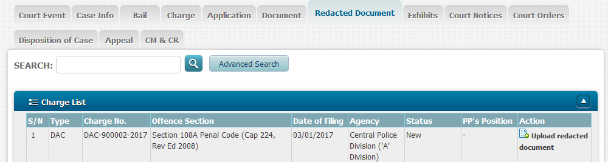
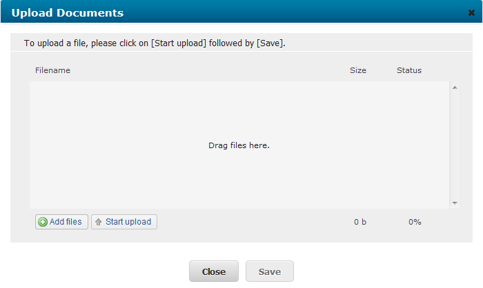
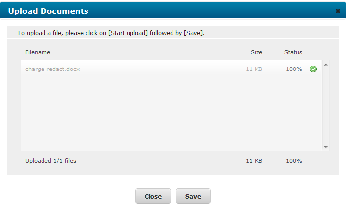
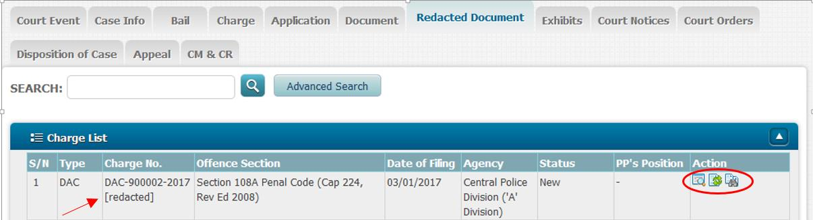

State Courts Practice Directions 2014
1.1 The State Courts’ Court Dispute Resolution Cluster (CDRC) provides Court Dispute Resolution (CDR) services for all civil matters. Two main processes – mediation and neutral evaluation – are used.
1.2 According to Practice Directions 37 and 38, all non-injury motor accident claims and personal injury claims are to proceed for CDR within 8 weeks after the Memorandum of Appearance has been filed.
1.3 Neutral evaluation will be used in the CDR sessions for these cases. This Appendix sets out the guidelines to be followed by solicitors.
2.1 The guidelines in this Appendix shall apply to all writs for non-injury motor accident and personal injury claims that are filed in Court on or after 1st April 2016 and to all motor accident cases (whether or not involving any claim for personal injuries) and actions for personal injuries arising out of an industrial accident that are commenced in the High Court on or after 1st December 2016 and transferred to the District Court.
3.1 As stated in Practice Directions 37(2) and 38(2), solicitors in these cases will receive a notice from the Court fixing the first CDR session.
3.2 A request for an adjournment of a CDR session shall be made only by filing a “Request for Refixing/Vacation of Hearing Dates” via the Electronic Filing Service.
3.3 The applicant must obtain the consent of the other parties to the adjournment, and list the dates that are unsuitable for all the parties.
3.4 The request must be made not less than 2 working days before the date of the CDR.
3.5 An adjournment of a CDR session will be granted only for good reason e.g. the solicitor is engaged in a trial or other hearing in the High Court or the State Courts, is away on in-camp training, is overseas, or on medical leave; or the party or his witness, if asked to attend, is out of the country or otherwise unavailable for good reason.
3.6 A CDR session from which one or all parties are absent without good reason will be counted as one CDR session.
4.1 Only solicitors are required to attend CDR sessions. Their clients need not be present unless the Judge directs their attendance.
4.2 In certain cases, the Judge may direct the parties to attend subsequent CDR sessions. For instance, the drivers of the vehicles involved in a motor accident and eyewitnesses may be asked to be present at a later CDR session for the purpose of a more accurate neutral evaluation or to facilitate in negotiating a settlement.
5.1 In all non-injury motor accident and personal injury claims, solicitors should exchange before the first CDR session, a list of all the relevant documents relating to both liability and quantum.
5.2 In addition, solicitors should exchange the following documents before the first CDR session:
5.2.1 For CDRs for motor accident claims -
(a) Full and complete Singapore Accident Statements and police reports including the names, identity card numbers and addresses of all persons involved in the accident, together with type-written transcripts of their factual accounts of the accident;
(b) Police sketch plan and if unavailable, the parties’ sketches of the accident;
(c) Results of police investigations or outcome of prosecution for traffic offence(s);
(d) Police vehicle damage reports;
(e) Original, coloured copies or scanned photographs of damage to all vehicles;
(f) Original, coloured copies or scanned photographs of the accident scene;
(g) Video recording of the accident (if any);
(h) Accident reconstruction report (if any);
(i) Names and addresses of witnesses (if any);
(j) Repairer’s bill and evidence of payment;
(k) Surveyor’s report;
(l) Excess bill or receipt;
(m) Vehicle registration card;
(n) COE/PARF certificates;
(o) Rental agreement, invoice and receipt for rental of replacement vehicle (if any);
(p) Correspondences with the defendant’s insurer relating to pre-repair survey and/or post-repair inspection of the plaintiff’s vehicle;
(q) Any other supporting documents.
5.2.2 For CDRs for personal injury claims or where personal injury forms part of the motor accident claim -
(a) Medical reports from the treating doctor, reviewing doctor and medical specialist;
(b) Certificates for hospitalisation and medical leave;
(c) Bills for medical treatment and evidence of payment;
(d) Income tax notices of assessment and/or other evidence of income and loss thereof;
(e) Supporting documents for all other expenses claimed (if any).
5.2.3 For CDRs for industrial accidents -
(a) The parties’ sketches of the accident;
(b) Notice of accident lodged with the Ministry of Manpower;
(c) Ministry of Manpower’s investigation reports (if any);
(d) Notice of Assessment from the Occupational Safety and Health Division, Ministry of Manpower (if any);
(e) Outcome of prosecution (if any);
(f) Original, coloured copies or scanned photographs of the accident scene;
(g) Video recording of the accident (if any);
(h) Names and addresses of witnesses (if any);
(i) Any other supporting documents.
5.2.4 For CDRs for any personal injury claim not involving motor accidents or industrial accidents -
(a) The parties’ sketches of the accident;
(b) Original, coloured copies or scanned photographs of the accident scene;
(c) Video recording of the accident (if any);
(d) Names and addresses of witnesses (if any);
(e) Any other supporting documents.
5.3 Documents and instructions
5.3.1 Solicitors shall endeavour to obtain from their clients all documents in good time for exchange between the parties before the first CDR session. They should also check that all documents needed for consideration of the claim are ready. If any additional documents apart from those referred to in paragraph 5.2 are required, this shall be made known to the other party well before the CDR date. If a re-inspection of the other party’s vehicle is required, it shall be conducted and the report exchanged before the first CDR session.
5.3.2 It is very important that solicitors take full and complete instructions from their respective clients before attending the CDR session. Before the CDR session, solicitors should evaluate with their clients the documents and reports and advise their clients on all the relevant aspects of their case.
5.3.3 Where a party is relying on the factual account of any witness in support of his case, a signed statement or Affidavit of Evidence-in-Chief should be procured from that witness and submitted to the Court at the first CDR session to enable the Court to be fully apprised of all the relevant evidence.
5.3.4 Insurers should notify their solicitors if, to their knowledge, other claims arising from the same accident have been filed in Court. Solicitors should assist the Court in identifying these related claims so that all the claims may be dealt with together at CDR sessions for a consistent outcome on liability. If an indication on liability has been given or interlocutory judgment has been entered in any related claim(s), solicitors should notify the Court accordingly and endeavour to resolve the remaining claims(s) on the same basis.
5.3.5 Third party proceedings, if any, should be commenced before the first CDR session.
5.4 To make the full use of CDR sessions, it is essential that solicitors be well prepared and familiar with their cases. This also applies to duty solicitors assigned by their firms to deal with the firm’s cases on a particular day. Duty solicitors must receive their files in good time and with clear instructions from the solicitor in charge so that they can familiarise themselves with the cases, understand the basis of instructions (i.e. why a certain position is taken) and to act on them (e.g. to convey the clients’ offer on quantum or liability to the opposing solicitor). Duty solicitors must, after the CDR session, ensure that they convey to the solicitor in charge, the rationale for the Judge’s indication, the discussion at CDR sessions, and the follow-up action to be taken before the date of the next CDR session.
6.1 All cases commenced by writ on or after 1st November 2014 in a Magistrate’s Court and any case commenced by writ on or after 1st November 2014 in a District Court (where parties have filed their consent in Form 233 of Appendix A of the Rules of Court for Order 108 to apply) will be subject to the simplified process under Order 108 of the Rules of Court (Cap. 322, R 5).
6.2 The requirement for upfront discovery under Order 108 Rule 2(4) of the Rules of Court (Cap. 322, R 5) and Practice Direction 19 (Upfront discovery) apply to such cases.
6.3 These claims will continue to be called for CDR within 8 weeks after the filing of the memorandum of appearance. There will be no case management conference convened. The rest of the guidelines in Appendix B also apply to CDRs for these claims.
6.4 Where parties are unable to resolve the case through CDR, the Court will manage the case, having regard to the provisions in Order 108 Rule 5 of the Rules of Court, by, inter alia, —
(a) giving such directions as the Court thinks fit in order to ensure that the case progresses expeditiously (including directions for the list of witnesses to be called for trial, the appointment of a single joint expert where appropriate, the exchange and filing of Affidavits of Evidence-in-Chief and setting the matter down for trial);
(b) fixing timelines to manage and control the progress of the case; and
(c) taking such other action or making such other direction as the Court thinks appropriate in the circumstances including costs sanctions or unless orders.
6.5 Where any question requiring the evidence of an expert witness arises and parties are unable to agree on the expert to be appointed, the Court may, having regard to the provisions in Order 108, Rule 5(3) of the Rules of Court, appoint the expert for the parties at a CDR session. Each party is expected to furnish the following for the determination of the single joint expert:
(a) names and curriculum vitae of two experts the party considers suitable to appoint (for which purpose a party may nominate the expert who has conducted an inspection, survey or review for him or provided him with medical treatment);
(b) the fees charged by each nominated expert for preparing the report and attendance in Court;
(c) the estimated time needed to prepare the report; and
(d) whether the parties have complied with the pre-action protocol.
The Court will appoint the single joint expert after hearing submissions on the suitability or unsuitability of the nominated experts to be appointed.
6.6 For NIMA and PIMA cases, the Court will provide an indication on liability
if —
(a) the factual matrix of the particular motor accident does not correspond substantially with any of the scenarios set out in the Motor Accident Guide (1st Edn., 2014 State Courts, Singapore) (“Motor Accident Guide”) ; or
(b) despite the parties’ reasonable efforts in resolving the question of liability through negotiation with reference to the Motor Accident Guide before the CDR session, no settlement has been reached.
6.7 Solicitors for all the parties seeking an indication on liability in NIMA and PIMA cases must submit a duly completed “Liability Indication Form (NIMA and PIMA Claims)” (see Form 9A) to the Court at the first CDR session. Except in cases where no corresponding scenario is provided for in the Motor Accident Guide, solicitors must specify in the Liability Indication Form the scenario(s) in the Motor Accident Guide that is/are relevant to the parties’ factual accounts of the accident and state their respective proposals on liability.
6.8 Solicitors for all parties seeking an indication on liability in industrial accident cases must submit a duly completed “Liability Indication Form (Industrial Accident Claims)” (see Form 9A(A)) to the Court at the first CDR session.
6.9 In CDR sessions for all personal injury claims, except PIMA claims, the Court will provide an indication on both liability and quantum of the claim. Solicitors for all the parties shall submit a duly completed “Quantum Indication Form” (see Form 9B) to the Court at the first CDR session.
6.10 In respect of PIMA cases, whether or not an indication on liability is given, the Court may, at its own discretion in appropriate cases or at solicitors’ request, provide an indication on quantum. Solicitors requesting for an indication on quantum must obtain each other’s consent before the CDR session, and submit the duly completed Quantum Indication Form (i.e. Form 9B) to the Court.
7.1 Insurers play a key role in the success of CDR. CDR sessions are intended for substantive discussion of the issues. A CDR is unproductive if:
7.1.1 parties have not —
(a) exchanged the relevant documents listed in paragraph 5; or
(b) identified the scenario(s) in the Motor Accident Guide that is/are relevant to their respective factual accounts of the accident
well before the CDR session to facilitate assessment and discussion of options;
7.1.2 one or more of the solicitors for the parties have not received or are still taking client’s instructions; or
7.1.3 parties are still negotiating or are awaiting instructions upon a counter-offer.
8.1 Solicitors must inform their clients of the outcome of a CDR session and render their advice quickly on the liability and/or quantum indications given by the Court. To facilitate settlement, solicitors should obtain their clients’ instructions and make the necessary proposals or offers of settlement early to enable the other party to consider their position or proposal and respond before the next CDR date. Reasons shall be given for the position taken on liability and/or quantum so that the solicitors can inform the Court of the basis for their clients’ mandate at the next CDR session.
8.2 Rather than refraining from taking a position on liability or insisting that agreement on liability is contingent on quantum being settled at a particular sum (as is sometimes the case), parties who are able to agree on the issue of liability but not quantum shall consider allowing an Interlocutory Judgment to be recorded for liability and proceed for assessment of damages. A hearing to assess damages is far less costly than a full trial.
Form 9A(A): Liability Indication Form (Industrial Accident Claims)
1.1 The object of this protocol is to prescribe reasonable conduct for non-injury motor accident claims. It prescribes a framework for pre-writ negotiation and exchange of information. In exercising its discretion and powers, the court will have regard to compliance with this protocol or lack thereof; see, for example, Order 25, Rules 1, 1A and 8, Order 34A, Rule 1, Order 59, Rule 5, and Order 59 Appendix 2, of the Rules of Court (Cap. 322, R 5).
1.2 This protocol applies to actions arising out of non-injury motor accidents occurring on or after —
(a) 1st April 2016 that are to be lodged with the Financial Industry Disputes Resolution Centre Ltd (“FIDReC”) or to be filed in in the Magistrate’s Court or the District Court, as the case may be; and
(b) 1st December 2016 that are to be filed in the High Court (and subsequently transferred to the District Court).
This protocol governs pre-action conduct and sets out best practices in respect of such claims.
1.3 Any reference to “the potential defendant” in this protocol refers to the potential defendant if he is not claiming under his insurance policy, or to his insurer if he is claiming under his policy.
1.4 Any reference to an “insurer” in this protocol refers to an insurer that is known or could be reasonably known to the claimant.
1.5 This protocol does not affect any privilege that may apply to any communication between the parties that is undertaken in compliance with it.
1.6 The Court will not impose sanctions where there are good reasons for non-compliance with the provisions of this protocol.
2.1 Time is of the essence in the joint selection of a motor surveyor and the conduct of a pre-repair survey of the claimant’s vehicle.
2.2 Within 3 working days of the date of the accident, the claimant must send a notice of accident (Form 1 in this protocol) to the potential defendant and his insurer (or where there is a multi-party collision, to each of the potential defendants and his insurer). This is to facilitate a joint survey of the damage to the claimant’s vehicle prior to the commencement of repairs (“pre-repair survey”). The pre-repair survey will include a survey of the vehicle when its damaged parts are being dismantled prior to the commencement of repairs.
2.3 Within 2 working days of receipt of the notice of accident, the insurer must reply to the claimant (Form 2 in this protocol) and if he intends to conduct a pre-repair survey of the claimant’s damaged vehicle, he must include in his reply a list of at least 10 motor surveyors.
2.4 Within 2 working days of receipt of the insurer’s reply, the claimant must reply to the insurer stating whether he agrees or has any objections to the appointment of any of the motor surveyors proposed by the insurer. The claimant may specifically select one or more of the proposed motor surveyors. If the claimant fails to reply or fails in his reply to object to any of the motor surveyors listed by the insurer within the time stipulated by this paragraph, the claimant is deemed to have agreed to the appointment of any of the motor surveyors listed by the insurer.
2.5 The motor surveyor mutually agreed upon by the parties or presumed to be agreed by the claimant shall be referred to as the “single joint expert”. Upon reaching such agreement or upon the expiry of the time stipulated for the claimant to object to the motor surveyors proposed by the insurer and the claimant fails to do so (as the case may be), the insurer must immediately instruct the single joint expert to conduct the pre-repair survey. The single joint expert must complete the pre-repair survey within 2 working days of his appointment.
2.6 If the claimant objects to all the motor surveyors proposed by the insurer, he must include in his reply a list of at least 10 motor surveyors whom he considers as suitable to appoint.
2.7 Within 2 working days of receipt of the claimant’s list of proposed motor surveyors, the insurer must state whether he agrees or has any objections to any of the motor surveyors proposed by the claimant. The insurer may specifically select one or more of the proposed motor surveyors. If the insurer fails to reply or fails in his reply to object to any of the motor surveyors listed by the claimant within the time stipulated by this paragraph, the insurer is deemed to have agreed to the appointment of any of the motor surveyors listed by the claimant.
2.8 The motor surveyor mutually agreed upon by both parties or presumed to be agreed by the insurer shall be referred to as the “single joint expert”. Upon reaching such agreement, the insurer must immediately instruct the single joint expert to conduct the pre-repair survey. Alternatively, upon the expiry of the time stipulated for the insurer to object to the motor surveyors proposed by the claimant and the insurer fails to do so, the claimant must immediately instruct the single joint expert to conduct the pre-repair survey. The single joint expert instructed by the insurer or the claimant (as the case may be) must complete the pre-repair survey within 2 working days of his appointment.
2.9 If the insurer objects to all the motor surveyors proposed by the claimant, both parties are not precluded from instructing a motor surveyor of their own choice to conduct the pre-repair survey. In such event, the motor surveyor appointed by the insurer must complete the pre-repair survey for the insurer within 2 working days from the date of the insurer’s reply objecting to all the motor surveyors proposed by the claimant. If the quantum of the potential claim is likely to be within the Magistrate’s Court limit, parties are to be aware of Order 108, Rule 5(3) of the Rules of Court on the appointment of a single joint expert should the matter be unresolved subsequently and proceed for a simplified trial. Both parties shall in any event not unreasonably withhold consent to the appointment of a single joint expert as far as possible.
2.10 Once the pre-repair survey has been conducted, the claimant and the insurer shall negotiate and, as far as possible, come to an agreement on the cost of repairing the claimant’s vehicle.
2.11 If parties are unable to come to an agreement on the cost of repairing the vehicle after negotiations, the claimant may proceed to repair his vehicle. The insurer may wish to request for an opportunity to conduct a post repair inspection once the vehicle has been repaired. The request should be made as soon as possible and before the repaired vehicle is returned to the claimant.
3.1 The claimant must send a letter of claim (Form 3 in this protocol) to every potential defendant and his insurer. The letter of claim must set out the full particulars of his claim and enclose a list of all the relevant documents relating to both liability and quantum. The claimant must also include in his letter of claim a copy each of all relevant supporting documents, where available, such as:
(a) full and complete Singapore Accident Statements together with type-written transcripts of all persons involved in the accident, including a sketch plan;
(b) repairer’s bill and evidence of payment;
(c) motor surveyor’s report;
(d) excess bill/receipt;
(e) vehicle registration card;
(f) COE/PARF certificates;
(g) names of all witnesses (where possible to disclose);
(h) original, coloured copies or scanned photographs of damage to all vehicles;
(i) original, coloured copies or scanned photographs of the accident scene;
(j) video recording of the accident (if any);
(k) accident reconstruction report (if any);
(l) rental agreement, invoice and receipt for rental of replacement vehicle (if any);
(m) correspondences with the potential defendant’s insurer relating to pre-repair survey and/or post repair inspection of the claimant’s vehicle;
(n) any other supporting documents.
3.2 The claimant must also state in his letter of claim whether he had notified the insurer of the accident by sending the notice of accident. If a pre-repair survey was conducted and the claim for cost of repairs is made pursuant to the amount negotiated and agreed upon by the parties, this should be stated in the letter of claim.
3.3 If, to the claimant’s knowledge, the insurer had waived the requirement for pre-repair survey and/or post-repair inspection of the vehicle, he should state so accordingly in the letter of claim.
3.4 The letter of claim must also instruct the potential defendant to immediately pass the letter and documents to his insurer if he wishes to claim under his insurance policy. The letters to any other potential defendants must be copied to the rest of the parties. The letter(s) to the potential defendant(s) must be sent by e-mail, fax or certificate of posting. The letters to insurers must be sent by e-mail, fax, A.R. Registered mail or by hand (in which case an acknowledgement of receipt should be obtained).
4.1 If the insurer wishes to conduct a post-repair inspection of the claimant’s vehicle not conducted previously, he must make the request to the claimant within 7 days of receipt of the letter of claim. The insurer must state in the letter of request why a post-repair inspection is now sought, especially if the opportunity for pre-repair survey and/or post-repair inspection had earlier been waived.
4.2 The claimant must reply within 7 days of receipt of the letter of request. Where valid reasons are given by the insurer, the parties shall as far as possible, agree on the arrangements for the post-repair inspection so as to facilitate an amicable resolution of the claim as soon as possible.
4.3 The potential defendant must send an acknowledgement letter (Form 4 or Form 4A in this protocol) to the claimant within 14 days of receipt of the letter of claim. If he is ready to take a position on the claim, he must state his position. If not, he must first send an acknowledgement.
4.4 If the claimant does not receive an acknowledgement letter within the requisite 14 days, the claimant may commence proceedings without any sanction by the Court.
4.5 If the potential defendant replies to the claimant with only an acknowledgement, within 8 weeks from the date of receipt of the letter of claim or within 14 days after inspecting the vehicle, whichever is later, the potential defendant must reply to the claimant substantively, stating the potential defendant’s position on the claim as to both liability and quantum, for example whether the claim is admitted or denied or making an offer of settlement (Form 4 or Form 4A in this protocol).
4.6 If the claim is not admitted in full, the potential defendant must:
(a) give reasons and provide the claimant with a list setting out all the relevant documents;
(b) include in his reply a copy of each of all relevant supporting documents;
(c) confirm/state the identity of the person driving his vehicle at the time of the accident and provide the driver’s identification number and address if this is not already stated in the Singapore Accident Statement;
(d) enclose full and complete Singapore Accident Statements showing the names, identification numbers and addresses of all other persons involved in the accident and typewritten transcripts of their factual accounts of the accident;
(e) enclose any pre-repair and/or post-repair survey/inspection report(s); and
(f) specify the particular scenario in the Motor Accident Guide that is applicable to his account of the accident, enclose with his reply a copy of the relevant page of the Motor Accident Guide, and, except where the claim is denied, make an offer on liability (Form 4A in this protocol).
4.7 If the insurer is the party replying to the claimant, the reply shall also state the name(s), telephone number(s) and fax number(s) of the insurance officer(s) handling the matter and the insurer’s file reference number(s), to facilitate correspondence.
4.8 If the potential defendant has a counterclaim, he must include it in his reply giving full particulars of the counterclaim together with all relevant supporting documents. If the potential defendant is pursuing his counterclaim separately, i.e. his insurer is only handling his defence but not his counterclaim, the potential defendant must send a letter to the claimant giving full particulars of the counterclaim together with all relevant supporting documents within 8 weeks from receipt of the letter of claim. If the potential defendant has already furnished particulars in a separate letter of claim, he need only refer to that letter of claim in his reply.
4.9 If the claimant does not receive the potential defendant’s substantive reply to his letter of claim within the requisite timeframe stipulated in paragraph 4.5, he may commence proceedings without any sanction by the Court.
4.10 The letter of claim and the responses are not intended to have the effect of pleadings in an action.
5.1 Where a potential defendant wishes to bring in a third party, he must inform the claimant and the other potential defendants by letter within 14 days of receipt of the claimant’s letter of claim. The potential defendant shall send to the third party and his insurer a letter each setting out full particulars of his claim against the third party together with a copy each of the claimant’s letter of claim and all relevant supporting documents within the same period. The potential defendant’s letter to the third party must also instruct the third party to immediately pass the letter and the documents to his insurer if he wishes to claim under his insurance policy. This letter must be copied to the claimant.
5.2 The protocol set out in paragraphs 2, 3 and 4 is applicable to the third party or, if he is claiming under his insurance policy, his insurer, as though the potential defendant were the claimant, and the third party or his insurer as the case may be, were the potential defendant.
6.1 Paragraph 5 shall apply with the necessary modifications to fourth party proceedings and so on. All correspondences between the parties must be copied to all the other parties involved in the accident.
7.1 The potential defendant must compensate the claimant for the loss of use of his vehicle computed from the date of receipt of the claimant’s notice of accident until the date the claimant is notified in writing that —
(a) the pre-repair survey is completed and he may proceed to repair his vehicle; or
(b) the insurer is waiving the requirement for pre-repair survey and he may proceed to repair his vehicle,
as the case may be, inclusive of any intervening Saturday, Sunday or public holiday.
7.2 Where the insurer fails to respond to the claimant within 2 working days of receipt of the notice of accident as to whether he wishes to carry out or waive a pre-repair survey, the claimant may proceed to repair the vehicle and the potential defendant must compensate the claimant for the loss of use of his vehicle computed over 2 working days, inclusive of any intervening Saturday, Sunday or public holiday.
7.3 For avoidance of doubt, the compensation payable to the claimant for loss of use in the instances set out in paragraphs 7.1 and 7.2 is additional to any other claim for loss of use which the claimant may bring against the potential defendant.
7.4 Where an insurer requests for post-repair inspection pursuant to paragraph 4.1, the potential defendant must compensate the claimant for the loss of use of his vehicle for the day that the inspection is conducted.
8.1 Where the claimant’s position on liability differs from the potential defendant’s, the claimant must within 2 weeks from the date of receipt of the potential defendant’s reply to the letter of claim, make a counter-offer on liability. The claimant must specify the particular scenario in the Motor Accident Guide that is applicable to his account of the accident and enclose a copy of the relevant page of the Motor Accident Guide (Form 4A in this protocol may be used with the necessary modifications).
8.2 After all the relevant information and documents have been exchanged (including any pre-repair and post-repair survey/inspection report(s)), the parties shall negotiate with a view to settling the matter at the earliest opportunity on both liability and quantum. Litigation should not be commenced prematurely if there are reasonable prospects for a settlement.
8.3 If, after reasonable effort has been made to settle the matter, but there are no reasonable prospects of settlement after a time period of at least 8 weeks from the date of receipt of the letter of claim, save where paragraph 4.4 or 4.9 of this protocol applies, the claimant must give 10 clear days’ notice (Form 5 in this protocol), by e-mail, fax or certificate of posting to the potential defendant of his intention to proceed with a writ. He must also inform the potential defendant of the names of all the parties he is suing.
9.1 Where parties have settled both liability and quantum before any action is commenced, a claimant who has sought legal representation to put forward his claim will have incurred legal costs. A guide to the costs to be paid is as follows:
| Sum settled (excluding interest if any) | Costs allowed (exclusive of disbursements) |
|---|---|
| Less than $1,000 | $300 |
| $1,000 to $9,999 | $300 to $700 |
| $10,000 and above | $500 to $1,000 |
10.1 Where the claimant has without good reason repaired or caused repairs to be carried out to his vehicle without first complying with paragraph 2 of this protocol in relation to pre-repair survey, then on account of the omission, the court may impose costs sanctions against the claimant.
10.2 Where the defendant disputes the damage to the claimant’s vehicle and after the commencement of Court proceedings requests for an inspection of the claimant’s vehicle without good reason, the Court may impose costs sanctions against the defendant.
11.1 Where parties have agreed on the issue of liability prior to the commencement of proceedings and wish to issue a writ in order for damages to be assessed, the plaintiff must file a writ endorsed with a simplified statement of claim (Form 6 in this protocol). If no appearance is entered after the writ is served, the plaintiff may, in the manner prescribed under the Rules of Court, proceed to enter default interlocutory judgment and take out a summons for directions for the assessment of damages. If an appearance is entered, the plaintiff may take out a summons for interlocutory judgment to be entered and for directions for the assessment of damages.
12.1 This paragraph applies to non-injury motor accident claims where the damages claimed before apportionment of liability is below $3,000 excluding survey fees, interests, costs and disbursements.
12.2 Unless the case falls within one or more of the exceptions listed in paragraph 13 of this protocol, the claimant shall in every case referred to in paragraph 12.1, lodge his claim with FIDReC at first instance. Upon lodgement, the claim shall be dealt with by FIDReC in accordance with its Terms of Reference relating to the management and resolution of such claims.
12.3 Notwithstanding that the claim is to be lodged with FIDReC, the claimant and potential defendant shall comply with the requirements of this protocol. In this connection, references to the “Court”, writ/Court action and proceedings in this protocol shall refer to “FIDReC”, the lodgement of a claim at FIDReC and proceedings at FIDReC respectively.
13.1 In any case where –
(a) the claimant is a body corporate or partnership;
(b) one or more of the vehicles involved in the accident is a government, a foreign-registered or diplomatic vehicle;
(c) the potential defendant has a counterclaim of $3,000 or more;
(d) the potential defendant has a counterclaim of less than $3,000 but the claimant is not claiming under his own insurance policy in respect of the counterclaim;
(e) the insurer for the claim or counterclaim has repudiated liability;
(f) an allegation that the claim, counterclaim or defence is tainted by fraud or other conduct constituting a criminal offence in connection with which a police report has been lodged;
(g) proceedings are still ongoing at FIDReC after a lapse of 6 months from the date when all the relevant documents pertaining to the accident that were requested by FIDReC have been submitted or, from the date of the claimant’s first interview at FIDReC, whichever is later; or
(h) there is other good and sufficient reason shown to the Court why the claim ought not to have been lodged at FIDReC or the proceedings ought not to have continued at FIDReC,
the claimant may commence an action in Court directly and all proceedings (if any) before FIDReC shall be abated forthwith, unless the Court otherwise directs.
14.1 Where the claimant in a case to which paragraph 12.1 of this protocol applies, has commenced an action in Court, the Court in exercising its discretion as to costs, shall have regard to the following, where applicable:
(a) commencement of court proceedings before adjudication of the claim by FIDReC;
(b) a finding by the Court that the quantum of damages before apportionment of liability is below $3,000 excluding survey fees, interests, costs and disbursements and the damages quantified and pleaded in the Statement of Claim is for an amount exceeding $3,000; or
(c) the claimant has failed to obtain a judgment that is more favourable than the award made at the adjudication of the claim by FIDReC.
14.2 The Court will not impose sanctions on the claimant where there are good reasons for non-compliance, for example attempt(s) made to resolve the claim through the Singapore Mediation Centre or the Law Society of Singapore Arbitration Scheme.
14.3 Where the claimant has commenced Court proceedings before adjudication of the claim by FIDReC, the Court may stay the action under Order 34A of the Rules of Court to enable the claimant to lodge his claim and/or complete the proceedings at FIDReC.
15.1 For the avoidance of doubt, the lodgement of a claim and/or continuation of proceedings at FIDReC shall not be construed to operate as a stay of the time limited for the doing of any act as prescribed by the Limitation Act (Cap. 163).
15.2 Should Court proceedings be commenced to prevent the operation of the time bar under the Limitation Act (Cap.163), the Court may nevertheless stay the action thereafter to enable the claimant to lodge his claim and/or complete the proceedings at FIDReC.
1.1 The aim of Part One of the Protocol for Medical Negligence Claims (“the protocol”) is to prescribe a framework for pre-writ exchange of documents, information and communication with a view to resolve medical negligence disputes arising out of a negligent act or omission in the course of medical or dental treatment without protracted litigation and to maintain/restore the patient/healthcare provider relationship.
1.2 Part One of the protocol will apply from the time a potential claimant contemplates filing a medical negligence claim in Court. Prior to such time, either party is at liberty to communicate, correspond or negotiate with the opposing party in any manner they see fit.
1.3 This protocol does not affect any privilege that may apply to communication between parties undertaken in compliance with it (including medical reports and medical records furnished to the claimant’s solicitor by the doctor and/or the hospital (“health care provider”) pursuant to this protocol).
1.4 For avoidance of doubt, this protocol equally applies to actions arising from dental treatments.
2.1 Generally, to enable the claimant to consider whether he has a viable cause of action against the health care provider for medical negligence, a medical report and medical records of the patient from the health care provider are essential. The application for the medical report and medical records that may be necessary for the claimant and/or his solicitor to ascertain if there is a cause of action should be made by letter (see Form 1 below) setting out briefly the basis of the claim and the nature of the information sought in the medical report, including:
(a) symptoms presented by the claimant or the deceased (where the patient has passed away and the claimant is the deceased’s next-of-kin or executor or administrator of his estate) prior to treatment;
(b) clinical findings;
(c) diagnosis;
(d) treatment prescribed, whether there are risks in such treatment and if so, when and how such risks were communicated to the claimant or the deceased and/or his next-of-kin;
(e) whether alternatives to the prescribed treatment were disclosed to the claimant or the deceased and/or his next-of-kin and if so, why the prescribed treatment was preferred over these alternatives;
(f) assessment of the claimant’s or the deceased’s condition at the last consultation and the cause of such condition or the cause of the deceased’s death;
(g) prognosis and recommended future treatment, if available.
2.2 The above guidelines on the contents of the medical report are meant to ensure that the report is as comprehensive as possible. Depending on the facts and nature of the medical management in each case, the contents of the medical report may be suitably modified. The application for the medical report may be dispensed with where the harm caused to the patient is res ipsa loquitur.
2.3 If the claimant and/or his solicitor wish to obtain copies of medical records from the health care provider, this should also be made clear in the letter. The various types of medical records that the claimant and/or his solicitor may seek from the health care provider are set out in Form 1. The medical records listed in Form 1 are not exhaustive, but act as guides. The claimant and/or his solicitor may request any other medical records that are relevant and necessary for the claim, which can depend on the nature and focus of the complaint, the type of medical treatment rendered and advice sought as well as whether the health care provider is a doctor or hospital.
2.4 The application for the medical report and medical records should be accompanied by the claimant’s letter (see Form 1A below) authorising the health care provider to release the medical report and medical reports to the claimant’s solicitor.
2.5 Within 7 days of receipt of the application, the health care provider shall inform the claimant what the requisite charges are for the medical report and medical records.
2.6 The medical report and medical records should be provided to the claimant within 6 weeks upon payment of the requisite charges. The claimant may where necessary, seek further information or clarification from the health care provider on any aspect of the report, in which case, the health care provider should respond within 4 weeks from receipt of the further request.
2.7 If the health care provider has difficulty complying with the timeline prescribed above, the problem and reason for the difficulty must be explained to the claimant in writing and the necessary extension of time sought.
2.8 If the health care provider fails to provide the requisite medical report, medical records and/or clarification within the timeline prescribed above or agreed extension period, the claimant may proceed to apply to the Court for an order for pre-action discovery under Order 24 Rule 6 of the Rules of Court (Cap. 322, R 5), without further notice to the health care provider. The Court will take into account any unreasonable delay in providing the medical report, medical records and/or clarification when considering the issue of costs.
3.1 Upon receipt of the medical report and/or medical records and before commencement of legal proceedings, the claimant is to write to the health care provider against whom he intends to pursue his claim to arrange for a without prejudice discussion (see Form 2 below). The health care provider must respond within 14 days after receipt of the letter, proposing a date and time for the meeting which should be held within 2 months from the date of the letter of request. This important step opens additional channels of communication between the health care provider and claimant, affording the health care provider an opportunity to explain medical procedures to the claimant and for the claimant to clarify with the health care provider any queries or doubts which he may have. Quite often, legal proceedings are taken because of miscommunication between the health care provider and patient or because the patient interprets a perceived lack of information and empathy as lack of due care and attention on the part of the health care provider. Hence, such discussions may pave the way for an amicable resolution of the claim. To facilitate the discussion, either party may in suitable cases, engage a separate or joint third party medical opinion on the medical management provided.
3.2 The letter to the health care provider is to be sent by way of A R Registered mail or by hand (in which case an acknowledgment of receipt should be obtained).
3.3 If the health care provider fails to propose a date and time for the meeting within the requisite 14 days or if without reasonable cause, the meeting is not held within the requisite 2 months, the claimant may commence proceedings without any sanction by the Court.
4.1 After the initial discussion, the parties are at liberty to correspond or negotiate with each other in any manner they see fit with a view to resolving the matter amicably at the earliest opportunity. Litigation should not be commenced prematurely if there are reasonable prospects for resolution. Where reasonable effort has been made without reasonable prospects of resolution, and after the expiry of 2 months from the date of request for a without prejudice discussion, save where paragraph 3.3 applies, the claimant must give 10 clear days’ notice, by letter (see Form 3 below) to the potential defendant of his intention to proceed with a writ. He is also to inform each potential defendant, to the best of his knowledge, the names of all the parties he is contemplating to sue.
4.2 Where the claim is affected by limitation and/or the claimant’s position needs to be protected by the early commencement of an action, the claimant need only comply with this protocol as far as he is able.
5.1 Part Two of the protocol relates to the commencement of proceedings for medical negligence and the pre-trial procedures in such cases.
6.1 A claimant commencing a medical negligence suit in Court is required under Order 18 Rule 12(1A) to file and serve a medical report and a statement of the special damages claimed with the Statement of Claim. The medical report(s) should include expert report(s) that the claimant intends to rely on.
6.2 The defendant is also required to file and serve a medical report within 6 weeks after the filing of the memorandum of appearance.
6.3 For cases that are subject to the simplified process under Order 108 of the Rules of Court (Magistrate’s Court cases filed on or after 1st November 2014 and by consent, District Court cases filed on or after 1st November 2014), each party is required to file and serve a list of documents together with the relevant pleading on the other party within the time limited for the service of such pleading under Order 108 Rule 2(4) of the Rules of Court.
6.4 For cases that are not subject to the simplified process, if there are documents other than the medical report filed with a claimant’s pleading and the medical report that will be filed by a defendant under paragraph 6.2 which are:
(a) documents on which a party relies or will rely; and
(b) documents which could —
(i) adversely affect a party’s own case;
(ii) adversely affect another party’s case; or
(iii) support another party’s case,
that party is required to file and serve a list of documents on the other party within 6 weeks after the filing of the memorandum of appearance using Form 37 of Appendix A of the Rules of Court.
7.1 In order to encourage parties to delineate undisputed facts and issues at an early stage, parties are required to file a list of undisputed facts and issues 2 weeks after the close of pleadings or as directed by the Court.
7.2 Currently, a party may file a notice to admit facts under Order 27 Rule 2 of the Rules of Court only after a matter is set down for trial. For medical negligence cases, such a notice to admit may be served at any time after the close of pleadings.
8.1 For all medical negligence cases that are filed in Court, the Court will convene the first CDR session under Order 34A of the Rules of Court within 2 weeks after the filing of the memorandum of appearance.
8.2 At the first CDR session, parties will explore the possibility of resolving the case by mediation, neutral evaluation, conciliation or other forms of CDR under the prevailing CDR framework. Solicitors for all parties seeking an indication on liability must submit a duly completed “Liability Indication Form (Medical Negligence Claims)” (see Form 4 below) to the Court at the CDR session. Whether or not an indication on liability is given, the Court may, at its own discretion in appropriate cases or at solicitors’ request, provide an indication on quantum. Solicitors requesting for an indication on quantum must obtain each other’s consent before the CDR session, and submit the duly completed Quantum Indication Form (i.e. Form 9B in Appendix A) to the Court.
8.3 No directions for general discovery will be given as most discovery of documents would have taken place at the pre-action stage and pleadings stage. However, parties may apply for specific discovery as provided for under the Rules of Court.
8.4 The Court may, where appropriate, appoint a medical professional to co-mediate at the CDR session.
9.1 In the interest of saving time and costs, claimants are expected to use this protocol as a checklist on the required steps to be taken before commencing court proceedings and during pre-trial proceedings. Parties must comply with the terms of the protocol in substance and spirit. A breach by one party will not exempt the other parties in the claim from following the protocol insofar as they are able.
9.2 In exercising its discretion and powers, the Court will have regard to compliance with this protocol or lack thereof, including staying an action for the party in default to comply with the protocol, and in determining the amount of costs to be awarded under Order 59 Rule 5 of the Rules of Court.
9.3 Where there are good reasons for non-compliance, the Court will not impose sanctions against the party in default.
1.1 The object of this protocol is to streamline the management of personal injury claims and promote early settlement of such claims. It prescribes a framework for pre-writ negotiation and exchange of information.
1.2 This protocol applies to all personal injury claims including —
(a) all personal injury claims including —
(i) claims arising out of motor accidents and industrial accidents;
(ii) personal injury claims (whether or not involving any claim for property damage arising from the same accident); and
(iii) claims arising from fatal accidents
occurring on or after 1st April 2016 that are to be filed in the Magistrate’s Court or the District Court, as the case may be, but does not apply to medical negligence claims; and
(b) all personal injury claims arising out of motor accidents (whether or not involving any claim for property damage arising out of the same accident) and industrial accidents occurring on or after 1st December 2016 that are to be filed in the High Court (and subsequently transferred to the District Court).
1.3 Any reference to “the potential defendant” in this protocol refers to the potential defendant if he is not claiming under his insurance policy, or to his insurer if he is claiming under his policy.
1.4 Any reference to an “insurer” in this protocol refers to an insurer that is known or could be reasonably known to the claimant/plaintiff or his solicitors.
1.5 This protocol does not affect any privilege that may apply to any communication between the parties that is undertaken in compliance with it.
1.6 This protocol encourages the parties to jointly select medical experts before proceedings commence.
2.1 For motor accident cases, the provisions of the Pre-Action Protocol for Non-Injury Motor Accident Cases at Appendix C of these Practice Directions relating to —
(a) the conduct of a pre-repair survey and post repair inspection of the claimant’s vehicle, including the joint selection and appointment by the parties of a motor surveyor as a single joint expert to conduct the pre-repair survey, shall apply to mixed claims for personal injury and property damage arising from the same accident (“mixed claims”); and
(b) the use of the Motor Accident Guide in negotiations between the parties to resolve the issue of liability shall apply to mixed claims and to personal injury claims.
3.1 The claimant must send a letter of claim (Form 1 in this protocol) to every potential defendant and his insurer.
3.2 The letter of claim must set out the full particulars of his claim, including the following information:
(a) a brief statement of all the relevant and available facts on which the claim is based;
(b) a brief description of the nature of the injuries suffered;
(c) an estimate of general and special damages with a breakdown of the heads of claim;
(d) the names of all witnesses (where possible to disclose);
(e) the case reference numbers, identity and contact particulars of the officer having charge of any investigations (e.g. the police officer or the relevant officer from the Ministry of Manpower); and
(f) the results of any prosecution or Court proceedings arising from the accident and where the claimant has passed away, the State Coroner’s verdict, where available.
3.3 In respect of claims where —
(a) the estimated quantum falls within the jurisdiction of a Magistrate’s Court before any apportionment of liability (but excluding interest); and
(b) the claimant intends to appoint one or more experts for the purpose of the proceedings,
the claimant shall include his proposed list of medical expert(s) in each relevant specialty in his letter of claim. The claimant should preferably include the doctors who provided him treatment and/or review of his medical condition in his proposed list.
3.4 In respect of claims where the estimated quantum exceeds the jurisdiction of a Magistrate’s Court, the claimant and the potential defendant and/or their respective insurers are encouraged, to follow the procedure set out in paragraph 4.3 of this protocol for the appointment of a mutually agreed medical expert.
3.5 If the claimant is non-resident in Singapore, the letter of claim must further state the date the claimant is required to depart from Singapore once the relevant permits expire or are cancelled and, where available, the date of his intended departure from Singapore. This is to afford the potential defendant or his insurer an opportunity to arrange for a medical examination of the claimant by a medical expert mutually agreed by both parties in each relevant specialty, or where there is no agreement, a medical re-examination of the claimant by a medical expert appointed by the potential defendant or his insurer prior to the claimant’s departure from Singapore.
3.6 The claimant must enclose with his letter of claim a list of all the relevant documents relating to both liability and quantum.
3.7 In respect of the issue of liability, the claimant must enclose with his letter of claim a copy each of all relevant supporting documents, where available, such as the following:
(a) full and complete Singapore Accident Statements and police reports together with type-written transcripts of all persons involved in the accident;
(b) police sketch plan or, if that is unavailable, the claimant’s sketch of the accident;
(c) results of police investigations or outcome of prosecution for any traffic offence(s) arising from the accident;
(d) police vehicle damage reports;
(e) original, coloured copies or scanned photographs of damage to all vehicles;
(f) original, coloured copies or scanned photographs of the accident scene;
(g) video recording of the accident (if any);
(h) accident reconstruction report (if any); and
(i) any other supporting documents.
(a) claimant’s sketch of the accident;
(b) original, coloured copies or scanned photographs of the accident scene;
(c) video recording of the accident (if any);
(d) Ministry of Manpower’s investigation reports (if any);
(e) Notice of Assessment from the Occupational Safety and Health Division, Ministry of Manpower (if any); and
(f) any other supporting documents.
(a) claimant’s sketch of the accident;
(b) original, coloured copies or scanned photographs of the accident scene;
(c) video recording of the accident (if any); and
(d) any other supporting documents.
3.8 In respect of the issue of quantum, the claimant must enclose with his letter of claim a copy of each of all relevant supporting documents, where available, such as the following:
(a) medical reports from the treating doctor, reviewing doctor and medical specialist;
(b) certificates for hospitalisation and medical leave;
(c) bills for medical treatment and evidence of payment;
(d) income tax notices of assessment and/or other evidence of income and loss thereof; and
(e) supporting documents for all other expenses claimed (if any).
Where the claim is for both personal injury and property damage, the claimant must in addition, enclose with his letter of claim a copy each of all relevant documents supporting the claim for property damage, such as the following:
(a) repairer’s bill and evidence of payment;
(b) motor surveyor’s report;
(c) excess bill or receipt;
(d) vehicle registration card;
(e) COE/PARF certificates;
(f) rental agreement, invoice and receipt for rental of replacement vehicle (if any);
(g) correspondences with the insurer relating to pre-repair survey and/or post repair inspection of the claimant’s vehicle; and
(h) supporting documents for all other expenses claimed (if any).
3.9 The letter of claim must also instruct the potential defendant to immediately pass the letter and the documents to his insurer if he wishes to claim under his insurance policy. If the potential defendant’s insurer is known to the claimant, a copy of the letter of claim must be sent directly to the insurer. The letters to any other potential defendants must be copied to the rest of the parties. The letter(s) to the potential defendant(s) must be sent by way of e-mail, fax or certificate of posting. The letters to insurers must be sent by way of e-mail, fax, A.R. Registered mail or by hand (in which case an acknowledgement of receipt should be obtained).
3.10 Where it is not possible to comply with any of the above requirements in notifying the relevant persons or providing documents, the claimant must provide his explanation in the letter of claim.
4.1 The potential defendant must send an acknowledgement letter (Form 2 or Form 2A in this protocol) to the claimant within 14 days from the date of receipt of the letter of claim. If he is ready to take a position on the claim, he must state his position. If not, he must first send an acknowledgement.
4.2 If the claimant does not receive an acknowledgement letter from the potential defendant within the requisite 14 days, he may commence proceedings without any sanction by the Court.
4.3 In respect of claims where the estimated quantum falls within the jurisdiction of a Magistrate’s Court, within 14 days of sending the acknowledgment letter to the claimant, the potential defendant shall send a letter to the claimant stating whether he agrees or has any objections to the appointment of any of the medical experts proposed by the claimant for the relevant specialty.
(a) If the potential defendant agrees to any of the proposed medical experts, the claimant shall send the medical expert in each of the relevant specialty a letter of appointment within 14 days. The medical expert mutually agreed upon by both parties shall be referred to as the ‘single joint expert’.
(b) The letter of appointment must be copied to the potential defendant. A medical report form (Form 4 or 4A in this protocol, as applicable) may be sent to the single joint expert. Form 4 may be used for higher value and/or more complex claims.
(c) If the potential defendant objects to all the proposed medical experts for any relevant specialty, the potential defendant must state the reasons for his objections and provide the name(s) of one or more medical experts in each relevant specialty whom he considers as suitable to appoint. The claimant shall within 14 days from the date of receipt of the letter from the potential defendant state if he has any objections to the appointment of any of the medical experts proposed by the potential defendant for the relevant specialty.
(d) If the claimant agrees to any of the proposed medical experts, the claimant shall send the medical expert in each of the relevant specialty a letter of appointment within 14 days. The medical expert mutually agreed upon by both parties shall be referred to as the ‘single joint expert’.
(e) The letter of appointment must be copied to the potential defendant. A medical report form (Form 4 or 4A in this protocol, as applicable) may be sent to the single joint expert.
(f) If the potential defendant or claimant fails to reply or fails in his reply to object to any of the medical experts listed in the other party’s letter within the timeline stipulated by this protocol, the party who fails to reply or to object is deemed to have agreed to the appointment of any of the medical experts proposed by the other party as a single joint expert.
(g) The costs of the medical examination of the claimant and medical report to be provided by the single joint expert shall be paid first by the claimant who may seek to recover the cost as part of his claim for reasonable disbursements.
(h) Either party may send the single joint expert written questions relevant to the issues or matters on which the medical report is sought. The questions must be copied to the other party.
(i) If the claimant objects to the medical experts proposed by the potential defendant for any relevant specialty, both parties are not precluded from instructing medical experts of their own choice for each relevant specialty that the parties are unable to agree upon. Should the potential defendant wish to arrange for the claimant to undergo a medical examination by his own medical expert, the potential defendant shall within 14 days from the date of receipt of the claimant’s letter of reply, propose a date and time on which the claimant is to undergo the medical examination. The address at which the claimant must present himself for the medical examination must also be provided. However, if the estimated quantum falls within the jurisdiction of a Magistrate’s Court, parties are to be aware of Order 108, Rule 5(3) of the Rules of Court on the appointment of a single joint expert should the matter be unresolved subsequently and proceed for a simplified trial. Both parties shall in any event not unreasonably withhold consent to the appointment of a single joint expert as far as possible.
4.4 If the potential defendant replies to the claimant with only an acknowledgement of receipt, within 8 weeks from the date of receipt of the letter of claim, the potential defendant must reply to the claimant substantively. For this purpose, the following provisions will apply:
(a) The reply shall indicate whether the insurer is defending the claim or whether the defendant is defending the claim personally. Reasons for the insurer’s decision not to act must be provided.
(b) Subject to sub-paragraph (d) below, the reply must state the potential defendant’s position on the claim on both liability and quantum (e.g. whether the claim is admitted or denied) or make an offer of settlement. If the claim is not admitted in full, the potential defendant must give reasons and provide a list of documents together with copies of all relevant supporting documents. Singapore Accident Statements and police reports provided by the potential defendant must be full and complete and must reflect the names, identification numbers and addresses of all persons involved in the accident together with type-written transcripts of their factual accounts of the accident.
(c) If the insurer is the party replying to the claimant, the reply must also state the name(s), telephone number(s) and fax number(s) of the insurance officer(s) handling the matter and the insurer’s file reference number(s), to facilitate correspondence.
(d) Pending the receipt of the medical report from the single joint expert or other medical expert appointed under paragraph 4.3 and/or inspection report of the claimant’s vehicle pursuant to the Pre-Action Protocol for Non-Injury Motor Accident Cases (as the case may be), the reply must state the potential defendant’s position on liability and his preliminary position on quantum or, if he is unable to do so, reserve his position on quantum. Within 14 days of receipt of the medical report from the medical expert and/or the vehicle inspection report, the potential defendant must state his position on quantum (e.g. whether the quantum claimed is admitted or denied) or make an offer of settlement.
4.5 If the claimant does not receive the potential defendant’s substantive reply to his letter of claim within the requisite 8 weeks stipulated in paragraph 4.4, he may commence proceedings without any sanction by the Court.
5.1 If the potential defendant has a counterclaim, he must include it in his reply, giving full particulars of the counterclaim together with all relevant supporting documents. If the potential defendant is pursuing his counterclaim separately, i.e. his insurer is only handling his defence but not his counterclaim, the potential defendant must send a letter to the claimant giving full particulars of the counterclaim together with all relevant supporting documents within 8 weeks from receipt of the letter of claim. If the potential defendant has already furnished particulars in a separate letter of claim, he need only refer to that letter of claim in his reply.
5.2 Where the counterclaim includes a personal injury, paragraphs 3 and 4 above shall apply with the necessary modifications.
5.3 The letter of claim and the responses are not intended to have the effect of pleadings in the action.
6.1 Where a potential defendant wishes to bring in a third party, he must inform the claimant and the other potential defendants by letter within 14 days of receipt of the claimant’s letter of claim. The potential defendant shall send to the third party and his insurer a letter each setting out full particulars of his claim against the third party together with a copy each of the claimant’s letter of claim and all relevant supporting documents within the same period. The potential defendant’s letter to the third party must also expressly instruct the third party to immediately pass the letter and the documents to his insurer if he wishes to claim under his insurance policy. This letter must be copied to the claimant.
6.2 The protocol set out in paragraphs 2, 3, 4 and 5 is applicable to the third party or, if he is claiming under his insurance policy, his insurer, as though the potential defendant were the claimant and the third party, or his insurer as the case may be, were the potential defendant.
7.1 Paragraph 6 shall apply with the necessary modifications to fourth party proceedings and so on. All correspondences between the parties must be copied to all the other parties involved in the accident.
8.1 Subject to any litigation privilege, any party who receives a medical report from his medical expert or the single joint expert must within 7 days of its receipt send a copy of the report to every other party. For the avoidance of doubt, these are medical reports which the parties intend to rely on for the purpose of litigation and neither party need disclose to the other medical reports (if any) that he is not relying on.
9.1 Any party who subsequently receives any information or document that was previously unknown or unavailable must, within 7 days of the receipt, provide every other party with that information or document.
10.1 After all the relevant information and documents have been exchanged or as soon as it is practicable, the parties shall negotiate with a view to settling the matter at the earliest opportunity on both liability and quantum. Litigation should not be commenced prematurely if there are reasonable prospects for a settlement.
10.2 If, after reasonable effort has been made to settle the matter, but there are no reasonable prospects of settlement after a time period of at least 8 weeks from the date of receipt of the letter of claim, save where paragraphs 4.2 or 4.5 apply, the claimant may commence legal action after giving —
(a) 2 clear days’ notice (Form 3 in this protocol) by e-mail, fax or certificate of posting to the insurer; or
(b) 7 clear days’ notice (Form 3 in this protocol) by e-mail, fax or certificate of posting to the potential defendant, where the defence is not handled by an insurer.
10.3 Where the claimant has earlier given notice that the offer being made was final, and legal proceedings would be commenced in the event that the potential defendant did not accept the offer within the specified timeframe, Form 3 need not be sent.
11.1 The claimant may in his letter of claim or in a letter sent at any time subsequent thereto, seek one or more pre-writ interim payment(s) of damages from the potential defendant. The claimant must state in his letter —
(a) the amount he is seeking as interim payment; or
(b) where the interim payment is sought specifically for anticipated expenses (e.g. surgery or a course of physiotherapy), an estimate of the expenditure to be incurred,
and provide any supporting documents which have not already been furnished to the potential defendant.
11.2 The potential defendant must reply to the claimant within 14 days of receipt of the letter, stating whether or not the request for interim payment is acceded to and the amount offered. Reasons must be given in the reply if the request is not acceded to in full. Unless the claimant states otherwise, any sum which the potential defendant offers as an interim payment, regardless as to whether the request is acceded to in full or in part, shall be paid to the claimant within 28 days of the potential defendant’s reply.
12.1 Where parties have settled both liability and quantum before any action is commenced, a claimant who has sought legal representation to put forward his claim will have incurred costs. As a guide, where the sum settled (excluding interest if any) is less than $20,000, the pre-action costs should be between $1,500 and $2,500, exclusive of disbursements.
12.2 Where after commencing an action, both liability and quantum are settled by the parties or decided by the Court (as the case may be) and the sum that is —
(a) settled;
(b) awarded, where the Plaintiff is successful; or
(c) claimed, where the Plaintiff is unsuccessful,
is less than $20,000 (excluding interest, if any), the Court will in general, award costs based on the guidelines below:
| Stage of proceedings | Costs allowed (exclusive of disbursements) |
|---|---|
| Upon filing of writ | $1,800-$2,800 |
| Upon signing of affidavits of evidence-in-chief | $2,500-$4,200 |
| Upon setting down for trial | $3,000-$4,500 |
| 1st day of trial or part thereof | $4,000-$5,000 |
| Subsequent day of trial or part thereof/Assessment of damages | Up to $1,000 per day or part thereof |
13.1 The Court will not impose sanctions where there are good reasons for non-compliance with the provisions of this protocol, for example attempt(s) made to resolve the claim through the Singapore Mediation Centre or the Law Society of Singapore Arbitration Scheme.
13.2. The protocol prescribes the timelines to be given to a potential defendant to investigate and respond to a claim before proceedings are commenced. This may not always be possible where a claimant only consults his lawyer close to the end of any relevant limitation period. In such a case, the claimant must give as much notice of the intention to commence proceedings as practicable and the parties shall consider whether the Court might be invited to extend time for service of the pleadings or alternatively, to stay the proceedings while the requirements of this protocol are being complied with.
14.1 Where parties have agreed on the issue of liability prior to the commencement of proceedings and wish to issue a writ in order for damages to be assessed, the plaintiff must file a writ endorsed with a simplified statement of claim. If no appearance is entered after the writ is served, the plaintiff may, in the manner prescribed under the Rules of Court, proceed to enter default interlocutory judgment and take out a summons for directions for the assessment of damages. If an appearance is entered, the plaintiff may take out a summons for interlocutory judgment to be entered and for directions for the assessment of damages.
Appendix F - Benchmark Rates for Cost of Rental and Loss of Use
1. An EPTC can be held for the following non-exhaustive list of common areas in dispute:
1.1 In relation to damage to property, the cause, the extent of damage, and costs of replacement or repair.
1.2 In relation to contracts for the sale and supply of goods and services, the amount of goods and services supplied, the assessment of defects, and the costs of replacement or repair.
1.3 In relation to injuries or death to persons, the cause, the extent of injuries, and the costs of medical needs.
2. Expert witnesses commonly appearing in Court include:
2.1 Medical experts – personal injuries and medical negligence claims;
2.2 Architects, engineers, quantity surveyors, building surveyors, land valuers – Property, building and renovation contracts;
2.3 Accountants and auditors – company and directors claims, claims relating to the taking of accounts;
2.4 Foreign lawyers – On issues concerning foreign law;
2.5 Industry professionals – On issues concerning standards and trade practices in specific industries;
2.6 Handwriting experts – On issues relating to forgery
3. The letter of request in Form 11 of Appendix A of the State Courts’ Practice Directions should be copied to all relevant parties. Within 7 days after receiving the request, the Court will as far as practicable inform all parties of the EPTC hearing date.
4. The EPTC hearing may be conducted through such video conferencing systems approved for use by the Court. Parties are expected to address the Court on the following issues:
4.1 A summary of the facts of the case;
4.2 The legal issues;
4.3 The issues requiring expert proof;
4.4 Relevance of expert evidence; and
4.5 The type of intended expert.
5. At the EPTC hearing, the Court may pursuant to Order 34A of the Rules of Court exercise all powers to make orders and give directions for the just, expeditious and economical disposal of proceedings. Such orders may include extensions of time to file and serve pleadings, the appointment of a single joint expert, the appointment of a limited number of experts for each party and such other orders necessary for the effective management of expert issues.
(1) Scope of electronic discovery
(a) General discovery of the following class or classes of electronically stored documents shall be given:
[eg Electronic mail, correspondence, letters, etc.]
(b) The party giving discovery shall take reasonable steps to decrypt encrypted files or encrypted storage locations, media or devices in order to identify discoverable electronically stored documents. This may include taking reasonable steps to obtain the decryption code and/or using reasonable technical means to perform decryption of the encrypted files or encrypted storage locations, media or devices.
(c) For the avoidance of doubt, electronically stored documents residing in folders or directories in storage locations, media or devices, including folders or directories where temporarily deleted files are located (for example the Recycle Bin folder or Trash folder) are within the scope of general discovery; deleted files or file fragments containing information which are recoverable through the use of computer forensic tools or techniques during a forensic inspection of the unallocated file space or file slack are not within the scope of general discovery.
(d) Reasonable search. The search terms or phrases specified in the first column will be used in the conduct of a reasonable search for relevant electronically stored documents. The reasonable search will be limited by the scope described in the second column.
| Search term or phrase | Scope |
|---|---|
| [Specify the keyword(s).] | [Describe the scope of the search by reference to physical or logical storage locations, media or devices, the period during which the requested electronically stored document was created, modified or received, etc.] |
(2) Format of list
The list of documents shall categorise and list electronically stored documents separately from documents in printed or other form. The list of documents enumerating electronically stored documents shall include the following columns:
[eg description of the electronically stored document, the name of the corresponding soft copy file, the file format (and its version) of the electronic document, the hash value of the file, etc]
An index of documents enumerated in the list of documents shall be provided in an electronic spreadsheet in the [eg Excel 2007 Binary (.xls), Comma Separated Value (.csv), etc] file format.
(3) Review for privileged material
Nothing in this protocol shall prevent the party giving discovery from reviewing the documents in any list provided hereunder for the purpose of claiming privilege. If the party giving discovery claims privilege over any document or record, he shall list the electronic documents or class of electronic documents over which privilege is claimed in the list of documents.
(4) Inspection and copies
(a) Arrangements for inspection. The place for inspection of discoverable electronic documents should be stated separately if it is different from the place for inspection of other discoverable documents. If the party entitled to inspect intends to inspect through or with the assistance of its appointed computer expert, such computer expert shall provide an undertaking of confidentiality to the party giving inspection before he commences his inspection.
(b) Supply of copies. During inspection, copies shall not be taken. If copies are required, a request should be made. Electronic copies of discoverable documents will be supplied in their native format and in read-only optical discs upon request. Electronic copies of discoverable documents where privilege is claimed only with respect to their internally stored metadata information will be supplied in the Tagged Image File Format (or TIFF) with privileged metadata information removed. For each of the read-only optical discs supplied, a further list stating the storage format (and its version) of the optical disc and enumerating the list of electronic documents stored therein shall be provided.
(5) Inspection of computer databases and electronic media or recording devices
Parties agree that the protocol for inspection of computer databases and electronic media or recording devices (Part 2 of Appendix I to these Practice Directions) shall apply for the inspection of the following:
[List the computer databases, electronic media or recording devices]
(6) Inadvertent disclosure of privileged documents
Notwithstanding compliance with the procedures in this protocol, nothing in this protocol is intended to be or shall be taken to amount to a waiver of privilege.
(7) Discovery and production only if necessary
For the avoidance of doubt, nothing in this protocol shall compel any party to give discovery of any document or produce any document for inspection which is not otherwise discoverable under Order 24, Rules 7 or 13 of the Rules of Court.
(1) Appointment of computer experts
(a) Joint appointment.
The party producing the computer database, electronic medium or recording device for inspection (“the Producing Party”) and the party entitled to inspection of the computer database, electronic medium or recording device (“the Inspecting Party”), may jointly appoint a computer expert (“the Joint Expert”) for the purpose of making a forensic copy of such computer database, electronic medium or recording device (“the Original Acquired Image”). The Joint Expert’s role shall be restricted to the acquisition of the Original Acquired Image and the performance of a reasonable search on a copy of the Original Acquired Image in accordance with the terms of this protocol. Before the Joint Expert commences his appointment, he shall provide an undertaking of confidentiality to the Court and to all parties concerned in the inspection. He shall also procure a similar undertaking from each of his employees, representatives, agents or sub-contractors involved in the engagement.
(b) Costs and expenses of Joint Expert.
All costs and expenses relating to the appointment of the Joint Expert under this protocol shall initially be borne equally between the Producing Party and the Inspecting Party. Nothing in this protocol is intended to or shall be taken to prevent any party to the cause or matter from seeking the recovery of such costs and expenses in accordance with the Rules of Court.
(c) Individual appointments.
Nothing in this protocol shall prevent the Producing Party, the Inspecting Party and any other party concerned in the inspection from appointing his own computer expert.
(2) Acquisition of the Original Acquired Image
(a) Where Joint Expert appointed.
The Joint Expert shall acquire the Original Acquired Image under the supervision of all parties concerned in the inspection, their representatives or computer experts. Sufficient copies of the Original Acquired Image shall be made as necessary in order that the Producing Party and each Inspecting Party may be supplied with an electronic copy of the Original Acquired Image. The Joint Expert shall provide sufficient information with the copy of the Original Acquired Image to enable the party’s computer expert to access the copy supplied. The Original Acquired Image shall be sealed and delivered to the custody of the Producing Party, who shall enumerate it in a list of documents to be filed under Order 24 of the Rules of Court.
(b) Where Joint Expert not appointed.
The Producing Party’s computer expert shall be responsible for acquiring the Original Acquired Image under the supervision of all parties concerned in the inspection, their representatives or computer experts. Sufficient copies of the Original Acquired Image shall be made as necessary for the purposes of inspection and reasonable search to be provided under this protocol. The Original Acquired Image shall be sealed and delivered to the custody of the Producing Party, who shall enumerate it in a list of documents to be filed under Order 24 of the Rules of Court.
(c) Original Acquired Image to be produced when ordered by Court.
The party to whose custody the sealed Original Acquired Image has been delivered shall not tamper with or break the seal, and shall produce the Original Acquired Image to the Court or such other person(s) as the Court may direct.
(3) Safeguards for reasonable search
This paragraph applies in situations where a reasonable search is conducted on the contents of a copy of the Original Acquired Image.
Where Joint Expert appointed
(a) Conduct of reasonable search.
The Inspecting Party shall specify or describe the search terms or phrases to be used in a reasonable search to be conducted on the contents of a copy of the Original Acquired Image to the Producing Party and the Joint Expert.
If the Producing Party does not object to the search terms or phrases so specified or described, he shall communicate his consent to the Joint Expert and the Inspecting Party. The Joint Expert shall make arrangements for the conduct of the reasonable search on a copy of the Original Acquired Image under the supervision of all parties concerned in the inspection, their representatives or computer experts.
If the Producing Party objects to any or all of the search terms or phrases so specified or described, he shall forthwith inform the Joint Expert. The parties shall resolve such objections before any further steps are taken for the conduct of the reasonable search. The Joint Expert shall not take any further steps for the conduct of the reasonable search until:
(i) he is informed by the Producing Party of his consent to the original search terms or phrases; or
(ii) the Inspecting Party specifies or describes a new set of search terms or phrases and to which the Producing Party provides his consent in accordance with this sub-paragraph.
A copy of the documents or records that are the results of the reasonable search (“the Search Results”) shall be made and released to the Producing Party.
(b) Review for privileged material.
The Producing Party shall be at liberty to review the Search Results for the purpose of claiming privilege. If the Producing Party claims privilege over any document or record from the Search Results, he shall list the electronic documents or records over which privilege is claimed.
(c) Release for inspection.
Thereafter, the Joint Expert shall remove copies of any documents or records over which privilege is claimed from the Search Results (“the Redacted Search Results”). The Joint Expert may maintain a separate privilege log which records the documents or records which are thus removed and the reasons given for doing so. For the avoidance of doubt, the privilege log shall not be included in the Joint Expert’s report but the Joint Expert shall produce the privilege log to the Court if so directed by the Court. The Redacted Search Results shall be released to the Inspecting Party for inspection together with the list of electronic documents or records over which privilege is claimed.
Where Joint Expert not appointed
(d) Conduct of reasonable search.
The Inspecting Party shall specify or describe the search terms or phrases to be used in a reasonable search to be conducted on the contents of a copy of the Original Acquired Image to the Producing Party. If the Producing Party objects to any or all of the search terms or phrases so specified or described, parties shall resolve such objections before any further steps are taken for the conduct of the reasonable search. Upon resolution of any objections or if the Producing Party consents to the specified or described search terms or phrases, he shall make arrangements for his computer expert to conduct the requested reasonable search on a copy of the Original Acquired Image under the supervision of all parties concerned in the inspection, their representatives or computer experts.
(e) Review for privileged material.
The Producing Party shall be at liberty to review the Search Results for the purpose of claiming privilege. If the Producing Party claims privilege over any document or record from the Search Results, he shall list the electronic documents or records over which privilege is claimed.
(f) Release for inspection.
Thereafter, the Producing Party shall remove copies of any documents or records over which privilege is claimed from the Search Results. The Redacted Search Results shall be released to the Inspecting Party for inspection together with the list of electronic documents or records over which privilege is claimed.
(4) Safeguards for forensic examination
This paragraph applies to the forensic examination of a copy of the Original Acquired Image for the purpose of identifying electronically stored documents thereon or for the recovery of deleted files or file fragments from the unallocated file space or file slack using computer forensic tools or techniques. A Joint Expert shall be appointed for the purpose of such forensic examination.
(a) Conduct of forensic examination. The Inspecting Party shall specify or describe the search terms or phrases to be used in the forensic examination to be conducted on the contents of a copy of the Original Acquired Image to the Joint Expert. The Joint Expert shall not at any time disclose to the Producing Party the search terms or phrases specified or described by the Inspecting Party and shall not include the search terms or phrases in his report. For the avoidance of doubt, the Joint Expert shall disclose the search terms or phrases to the Court if so directed by the Court. The Joint Expert shall make arrangements for the conduct of the forensic examination on a copy of the Original Acquired Image. Neither the Inspecting Party nor the Producing Party, or any of their solicitors, computer experts, employees, representatives or agents shall be present during the conduct of the forensic examination. A copy of the documents or records that are the results of the reasonable search (“the Search Results”) shall be made and released to the Producing Party. The Producing Party is not entitled to a copy, and shall not request the Joint Expert for a copy, of the search terms or phrases specified or described by the Inspecting Party.
(b) Review for privileged material.
The Joint Expert and the Producing Party shall jointly review the Search Results for the purpose of permitting the Producing Party to identify electronically stored documents, deleted files or file fragments over which he claims privilege. If the Producing Party claims privilege over any electronically stored documents, deleted files or file fragments from the Search Results, he shall identify them to the Joint Expert. The Producing Party shall list the electronic documents, deleted files or file fragments over which privilege is claimed.
(c) Release for inspection.
Thereafter, the Joint Expert shall remove copies of any electronic documents, deleted files or file fragments over which privilege is claimed from the Search Results (“the Redacted Search Results”). The Joint Expert may maintain a separate privilege log which records the electronic documents, deleted files or file fragments which are thus removed and the reasons provided for the removal. For the avoidance of doubt, the privilege log shall not be included in the Joint Expert’s report but the Joint Expert shall produce the privilege log to the Court if so directed by the Court. The Redacted Search Results shall be released to the Inspecting Party for inspection together with the Producing Party’s list of electronic documents, deleted files or file fragments over which privilege is claimed.
(5) Inadvertent disclosure of privileged documents
Notwithstanding compliance with the procedures in this protocol, nothing in this protocol is intended to be or shall be taken to amount to a waiver of privilege.
(6) Discovery and production only if necessary
For the avoidance of doubt, nothing in this protocol shall compel any party to give discovery of any document or produce any document for inspection which is not otherwise discoverable under Order 24, Rules 7 or 13 of the Rules of Court.
| File Format | Version |
|---|---|
| Office Documents | |
| Hypertext Markup Language | HTML 4.01 or ISO/IEC 15445:2000 |
| Extensible Hypertext Markup Language | XHTML 2.0 |
| Rich Text Format (RTF) | RTF 1.9.1 |
| Plaintext Format | |
| Portable Document Format (PDF) | |
| Microsoft Office file Formats | Word 97 - 2007 Binary File Format (.doc) Specification PowerPoint 97 - 2007 Binary File Format (.ppt) Specification Excel 97 - 2007 Binary File Format (.xls) Specification Excel 2007 Binary File Format (.xlsb) Specification Office Drawing 97 - 2007 Binary Format Specification |
| Electronic Mail | |
| Multipurpose Internet Mail Extension (MIME) | RFC 5322 |
| .eml | Mozilla Thunderbird, Windows Mail and Microsoft Outlook Express e-mail messages |
| .msg | Microsoft Office Outlook e-mail messages |
| Images | |
| Joint Photographic Experts Group (JPEG) | ISO/IEC 10918-1 |
| JPEG 2000 | ISO/IEC 15444-1:2000 |
| Portable Network Graphics (PNG) | ISO/IEC 15948:2004 |
| Tagged Image File Format | TIFF or ISO 12639:1998 |
| Portable Document Format | PDF 1.7 or ISO 32000-1:2008 |
| Audio | |
| MPEG-1 Audio Layer 3 (MP3) | ISO/IEC 11172-3 |
| Advanced Audio Coding (AAC) | ISO/IEC 14496-3:2001 |
| Video | |
| Moving Picture Experts Group (MPEG-1) | ISO/IEC-11172 |
| H.264 | ITU-T H.264 |
| MPEG-4 Part 10 or MPEG-4 AVC (Advanced Video Coding) | ISO/IEC 14496-10:2003 |
| Multimedia container Formats | |
| Audio Video Interleave | |
| QuickTime File Format | |
| MPEG-4 Part 14 | ISO/IEC 14496-14:2003 |
ILLUSTRATION I - Uploading a copy of a redacted charge into the ICMS
Step 1: Select the Add Document Icon  of the relevant charge in the Redacted Document Tab.
of the relevant charge in the Redacted Document Tab.

Step 2: Click on “Add Files”, select the redacted document to be uploaded and click “Start upload”. Click “Save” thereafter.


Step 3: The redacted charge sheet will be uploaded successfully in the ICMS as shown below.

1.1. This Protocol applies to all defamation (including libel and slander) actions.
1.2. Parties are expected to comply with the framework prescribed in this Protocol before commencing proceedings in the State Courts.
1.1.1. Notwithstanding this, parties may adapt the forms where necessary to suit the facts of their case.
1.1.2. This Protocol is in addition to any negotiations that parties may be conducting privately or on a “without prejudice” basis.
1.3. In following this Protocol, the parties should act reasonably to keep costs proportionate to the nature and gravity of the case and the stage the complaint has reached.
2.1. This Protocol aims to:
2.1.1. improve pre-action communication between parties by establishing a timetable for the exchange of information and documents;
2.1.2. encourage constructive negotiations in order to improve the chances of a pre-action settlement; and
2.1.3. set standards for the content of pre-action correspondence between parties which will in turn lead to clear pleadings and streamlined issues if proceedings are commenced.
3.1. Before commencing proceedings, the claimant must send a letter of claim to the potential defendant. The letter of claim must be prepared in accordance with FORM 1 in this Protocol.
3.2. The letter of claim should be marked “Private and Confidential. To be opened by addressee only” and it should not be marked “without prejudice”. It must include the following information:
3.2.1. the name of the claimant;
3.2.2. sufficient details to identify the publication or broadcast which contained the words complained of;
3.2.3. the person(s) to whom the words complained of were published, broadcasted or spoken;
3.2.4. the exact words complained of and the date of publication or broadcast (if known), and where possible, a copy, screenshot or transcript of the words complained of should be enclosed;
3.2.5. if the words complained of are not in the English language, a translation of the words in the English language[^17];
3.2.6. sufficient details of the factual inaccuracies or unsupportable comments within the words complained of to enable the potential defendant to appreciate why the words are inaccurate or unsupportable;
3.2.7. where relevant, any fact and matter which makes the claimant identifiable from the words complained of;
3.2.8. where relevant, details of any special fact relevant to the interpretation of the words complained of and the meanings which the claimant attributes to the words complained of;
3.2.9. where relevant, any particular damage caused by the words complained of;
3.2.10. the nature of the remedies sought by the claimant, for which purpose —
(a) if the claimant is seeking monetary damages, he should indicate the quantum sought and as far as possible, refer to relevant case precedents and/or other authorities; and
(b) if the claimant is seeking a retraction, clarification, apology and/or undertaking, he should enclose a draft for the potential defendant’s execution (a sample can be found at FORM 2 in this Protocol);
3.2.11. the timeframe given for the potential defendant to respond. Save in cases where there is exceptional urgency, the potential defendant should be given at least 14 days to respond. If a shorter timeframe is imposed, the claimant should explain the reasons for the urgency; and
3.2.12. a statement by the claimant as to which of the alternative dispute resolution (“ADR”) options set out at paragraph 6 of this Protocol he proposes to use for the resolution of the dispute for the potential defendant to consider.
3.3. The letter of claim must be sent to the potential defendant by way of certificate of posting, registered post or any other mode which provides the claimant with a written acknowledgement of posting / delivery.
3.4. Nothing in this Protocol should be construed to operate as a stay of the time limited for the doing of any act as prescribed by the Limitation Act (Cap. 163). If, by reason of complying with any part of this Protocol, a claim may be time-barred under any provision of the Limitation Act, the claimant may commence proceedings without complying with this Protocol, or so much of this Protocol that he is unable to comply with by reason of the impending operation of an applicable limitation period.
4.1. The potential defendant must provide a response to the claimant within 14 days of the receipt of the letter of claim (or such shorter time limit as specified in the letter of claim). The response must be in accordance with FORM 3 in this Protocol.
4.2. If the potential defendant is unable to respond substantively within 14 days (or such shorter time limit as specified), he must acknowledge receipt within the said 14 days (or shorter time limit) and inform the claimant of the length of time required to respond substantively to the claim. A sample acknowledgement can be found at FORM 4 in this Protocol.
4.3. The substantive response must contain the following information:
4.3.1. whether, and to what extent, the claimant’s claim is accepted, whether more information is required or whether the claim is rejected;
4.3.2. if the claim is accepted in whole or in part, which remedies the potential defendant is willing to offer (for which purpose if the potential defendant is willing to offer monetary payment, he should specify the quantum and as far as possible, refer to relevant case precedents and/or other authorities);
4.3.3. if more information is required, precisely what information is needed in order to enable the claim to be dealt with and why;
4.3.4. if the claim is rejected, an explanation of the reasons why it is rejected, including a sufficient indication of any fact on which the potential defendant is likely to rely in support of any substantive defence;
4.3.5. where relevant, the meanings which the potential defendant attributes to the words complained of;
4.3.6. whether the potential defendant agrees to any of the ADR options proposed by the claimant, and if not, which of the ADR options set out at paragraph 6 of this Protocol he wishes to propose for the resolution of the dispute; and
4.3.7. whether the potential defendant intends to make a counterclaim, and if so, the information at paragraphs 3.2.1 to 3.2.12.
4.4. The acknowledgement of receipt or response must be sent by way of certificate of posting, registered post or any other mode which provides the potential defendant with a written acknowledgement of posting / delivery.
4.5. If no response is received by the claimant within the timeframe set out in the letter of claim, the claimant is entitled to commence proceedings without further compliance with this Protocol.
5.1. If the potential defendant intends to make a counterclaim for defamation and states so in his response, the claimant should provide a response to any such counterclaim within the equivalent period allowed to the potential defendant to respond to the letter of claim.
6.1. The State Courts regards ADR as crucial in the efficient and cost-effective resolution of disputes. The following are some ADR options which parties should consider prior to commencing an action:
6.1.1. mediation at the Singapore Mediation Centre;
6.1.2. mediation at the Singapore International Mediation Centre; and
6.1.3. mediation under the Law Society Mediation Scheme.
6.2. The above list is non-exhaustive and parties are free to consider and propose other ADR mechanisms to resolve the dispute.
6.3. If the claimant and the potential defendant are able to agree on a mode of ADR, the claimant should submit the relevant request for ADR (depending on chosen mode of ADR) within 14 days of the parties’ agreement to initiate the ADR process.
6.4. No party can be compelled to enter into any form of ADR.
7.1. Where the claimant decides to commence litigation, he must file, together with the statement of claim, a duly completed Pre-Action Protocol Checklist (FORM 5 in this Protocol).
8.1. The State Courts will have regard to the compliance with this Protocol or lack thereof in exercising its discretion and powers in relation to costs orders.
8.2. Where there are good reasons for non-compliance, the court will not impose sanctions against the party in default.
These Practice Directions may be cited as the State Courts Practice Directions 2014.
For avoidance of doubt, these Practice Directions shall apply only to civil proceedings commenced in the State Courts before 1 April 2022 unless otherwise stated.
In respect of cases, claims, actions and/or appeals which are contemplated or commenced on or after 2 January 2021 to which these Practice Directions apply, all references to the High Court shall, where appropriate, refer to the General Division of the High Court.
(1) Where legislation is cited in these Practice Directions, the citation shall, unless the context otherwise requires, be read to refer to the edition of that legislation currently in force.
(2) Notwithstanding paragraph (1) above, references in these Practice Directions to the Rules of Court and to any Order or Rule thereof, shall be read to refer to the Rules of Court (Cap 322, R 5, 2014 Rev Ed).
The provisions in the Rules of Court (Cap. 322, R 5) shall apply to the calculation of time in these Practice Directions. In particular:
(1) Any addition or amendment to these Practice Directions will be notified on the Singapore Courts website at https://www.judiciary.gov.sg. The Practice Directions will be updated on the date the addition or amendment takes effect.
(2) The complete and updated Practice Directions can be downloaded from the Singapore Courts website at https://www.judiciary.gov.sg.
The Forms in Appendix A to these Practice Directions shall be used where applicable with such variations as the circumstances of the particular case require.
(1) Pursuant to Order 60, Rule 1(3) of the Rules of Court (Cap. 322, R 5), the business of the Registry is governed by the Rules of Court and these Practice Directions.
(2) For the avoidance of doubt, any instruction manuals which may be issued from time to time by the Government are not applicable to the business of the Registry.
(1) This Practice Direction applies to originating summonses filed on or after 1 January 2006.
(2) Solicitors’ attention is drawn to Order 12, Rule 9 of the Rules of Court (Cap. 322, R 5) which provides that no appearance need be entered to an originating summons.
(3) Where any legislation requires a party to file an originating summons and the Form is not provided within the legislation, the originating summons must be filed using either Form 4 (Originating Summons) or Form 5 (Ex Parte Originating Summons) of Appendix A of the Rules of Court.
(4) The parties in Form 4 of Appendix A of the Rules of Court shall be stated as “plaintiff” and “defendant”, or “appellant” and “respondent” as the case may be.
(5) The party in Form 5 of Appendix A of the Rules of Court shall be stated as “applicant”.
(1) Where a party to any proceedings in the State Courts first files a document in such proceedings, he shall state his identification number, in parentheses, in the title of the document immediately below or after his name. Thereafter, all documents subsequently filed in the proceedings by any party shall include this identification number in the title of the documents in parentheses below or after the name of the party to which it applies.
(2) Where a party to any proceedings in the State Courts first files a document in such proceedings, and the name of the party does not appear in the title of the document but does appear in the body of the document, then the identification number of the party should be stated, in parentheses, below or after the first appearance of his name in the document. Thereafter, all documents subsequently filed in the proceedings by any party shall include this identification number in parentheses immediately below or after the first appearance of the name of the party to which it applies in the subsequent document.
(3) Paragraphs (1) and (2) shall apply, with the necessary modifications, to documents which are filed by more than one party.
(4) If any person (living or dead), any entity or any property is in part or in whole the subject matter of any proceedings, or is affected by any proceedings, but is not a party thereto, and the name of such person, entity or property is to appear in the title of the documents filed in the proceedings, the party filing the first document in the proceedings must state the identification number of such person, entity or property in parentheses immediately below or after the name of the same. Thereafter, all documents subsequently filed in the proceedings by any party shall include this identification number in parentheses immediately below or after the name of the person, entity or property to which it applies. If the party filing the first document in the proceedings is unable, after reasonable enquiry, to discover the identification number of the person, entity or property, he may state immediately below or after the name of the same “(ID Unknown)”. All documents subsequently filed by any party shall then contain these words in parentheses below or after the name of this person, entity or property.
(5) The following Directions shall apply in addition to the Directions contained in paragraphs (1) to (4):
(6) When entering the identification number in the Electronic Filing Service, the full identification number should be entered, including any letters or characters that appear in, at the beginning of, or at the end of the number. Descriptive text which is required to be entered into the actual document, such as “Japanese Identification Card No.”, should not be entered into the electronic form.
(7) The following guidelines should be followed in deciding on the appropriate identification number.
(a) Natural person with Singapore identity card
For a natural person who is a Singapore citizen or permanent resident, the identification number shall be the number of the identity card issued under the National Registration Act (Cap. 201). The 7 digit number as well as the letters at the front and end should be stated. For example: “(NRIC No. S1234567A)”.
(b) Natural person with FIN number
For a natural person, whether a Singapore citizen or permanent resident or not, who has not been issued with an identity card under the National Registration Act, but has been assigned a FIN number under the Immigration Regulations (Cap. 133, Rg 1), the identification number shall be the FIN number. The number should be preceded by the prefix “FIN No.”
(c) Natural person: birth certificate or passport number
For a natural person, whether a Singapore citizen or permanent resident or not, who has not been issued with an identity card under the National Registration Act or assigned a FIN number, the identification number shall be the birth certificate or passport number. The number should be preceded by either of the following, as appropriate, “(Issuing country) BC No.” or “(Issuing country) PP No.”
(d) Natural person: other numbers
For a natural person who is not a Singapore citizen or permanent resident and has not been assigned a FIN number and does not have a birth certificate or passport number, the identification number shall be the number of any identification document he may possess. Both the number as well as some descriptive words which will enable the nature of the number given and the authority issuing the identification document to be ascertained, should be stated. For example: “Japanese Identification Card No.”
(e) Deceased person
For a deceased natural person, the identification number shall be as set out in sub-paragraphs (a) to (d) above. However, if such numbers are not available, the identification number shall be the death registration number under the Registration of Births and Deaths Rules (Cap. 267, R 1) or the equivalent foreign provisions, where the death is registered abroad. The number as well as the following words should be stated: “(Country or place of registration of death) Death Reg. No.”
(f) Company registered under the Companies Act
For a company registered under the Companies Act (Cap. 50), the identification number shall be the Unique Entity Number (UEN).
(g) Company registered outside Singapore
For a company registered outside Singapore which is not registered under the Companies Act, the identification number shall be the registration number of the company in the country of registration.
(h) Business registered under the Business Names Registration Act
For a body registered under the Business Names Registration Act (Cap. 32), the identification number shall be the UEN.
(i) Limited Liability Partnership registered under the Limited Liability Partnerships Act
For a limited liability partnership registered under the Limited Liability Partnerships Act (Cap. 163A), the identification number shall be the UEN.
(j) Other bodies and associations
For any other body or association, whether incorporated or otherwise, which does not fall within any of the descriptions in sub-paragraphs (f) to (i) above, the identification number shall be any unique number assigned to the body or association by any authority. Both the number as well as some descriptive words which will enable the nature of the number given and the authority assigning the number to be ascertained, should be stated. For example: “Singapore Trade Union Reg. No. 123 A”.
(k) No identification numbers exist
Where the appropriate identification numbers referred to in sub-paragraphs (a) to (j) above do not exist in respect of any party, person, entity or property, the following words should be stated immediately below or after the name of that party, person, entity or property concerned: “(No ID No. exists)”.
(8) If a party who wishes to file a document is unable at the time of filing to furnish the necessary identification numbers required by this Practice Direction, the party may indicate “(ID Unknown)” at the time of filing. However, when the necessary identification numbers have been obtained, the party must furnish the necessary identification numbers to the Registry through the Electronic Filing Service.
(9) For avoidance of doubt, the words “document” and “documents” when used in this Practice Direction include all originating processes filed in the State Courts regardless of whether they are governed by the Rules of Court or not.
(10) Any document which does not comply with this Practice Direction may be rejected for filing by the Registry.
(1) All originating processes and summonses filed in civil matters in the State Courts on or after 1st January 2015 shall bear case numbers in the following Format:
Description of Court / Type of Application [Case number] / Year filed
For example :
| Case number Format | Type of case |
|---|---|
| DC / DC 1 / 2015 | Writ of Summons filed in the District Court |
| MC / MC 1 / 2015 | Writ of Summons filed in the Magistrate’s Court |
| DC / OSS 1 / 2015 | Originating Summons filed in the District Court |
| MC / OSS 1 / 2015 | Originating Summons filed in the Magistrate’s Court |
| DC / SUM 1 / 2015 | Summons filed in a District Court Suit |
| MC / SUM 1 / 2015 | Summons filed in a Magistrate’s Court Suit |
(2) The new Court description or court forum prefix will not be displayed in the Electronic Queue System. Counsel and parties should disregard the same when taking their queue numbers.
(3) Parties must cite the case number in full in all documents and Requests filed in Court.
(1) The attention of solicitors is drawn to Order 62, Rule 2(1) of the Rules of Court (Cap. 322, R 5) which provides:
“Personal service must be effected by a process server of the Court or by a solicitor or a solicitor’s clerk whose name and particulars have been notified to the Registrar for this purpose:
Provided that the Registrar may, in a particular cause or matter, allow personal service to be effected by any other named person and shall, in that case, cause to be marked on the document required to be served personally, a memorandum to that effect.”
(2) Solicitors must notify the Registry of the particulars of those clerks who have been authorised by them to serve processes and documents (hereafter referred to as “authorised process servers”) by submitting a request to authorise user through the Electronic Filing Service.
(3) Where such authorised process servers are no longer so authorised, solicitors must revoke or delete the authorisation immediately by submitting a request through the Electronic Filing Service. Solicitors’ clerks do not require the authorisation of the Registrar to effect personal service of processes and documents.
(4) In view of the alternative modes providing for personal service to be effected by a solicitor or a solicitor’s clerk, Court process servers will not be assigned to effect personal service of processes and documents unless there are special reasons.
(5) If it is felt that there are special reasons requiring personal service by a Court process server, a Request for such service must be filed through the Electronic Filing Service, setting out the special reasons. The approval of the Duty Registrar must be obtained for such service. Once approval has been obtained, the documents for service must be presented at the counter designated for this purpose. A process server will then be assigned to effect service and an appointment for service convenient to both the litigant and the assigned process server will be given.
(6) On the appointed date, the person accompanying the process server must call at the Registry. The amount required for the transport charges of the process server (a record of which will be kept) must be tendered, or, alternatively, the process server in question must be informed that transport for him will be provided. The Registry will then instruct the process server to effect service.
(7) Under no circumstances should any payment be made directly to the process server.
(1) In any application for substituted service, the applicant should persuade the Court that the proposed mode of substituted service will bring the document in question to the notice of the person to be served.
(2) Two reasonable attempts at personal service should be made before an application for an order for substituted service is filed. In an application for substituted service, the applicant shall demonstrate by way of affidavit why he or she believes that the attempts at service made were reasonable.
(3) The applicant should, where appropriate, also consider other modes of substituted service, such as AR registered post or electronic means (including electronic mail or Internet transmission) in addition to or in substitution of substituted service by posting on doors or gates of residential and business premises.
(4) An application for substituted service by posting at an address or by AR registered post should contain evidence (for example, relevant search results from the Inland Revenue Authority of Singapore, the Singapore Land Authority, the Housing & Development Board or the Accounting and Corporate Regulatory Authority) that the person to be served is either the owner of, resident or can be located at the property.
(5) For the avoidance of doubt, substituted service by AR registered post is deemed to be effective when the postal service has delivered the document, or attempted to deliver the document (in cases where no one is present or willing to accept the document).
(6) If substituted service is by electronic mail, it has to be shown that the electronic mail account to which the document will be sent belongs to the person to be served and that it is currently active.
(7) An application for substituted service by advertisement (in one issue of the Straits Times if the person to be served is literate in English, or one issue of the Straits Times and one issue of one of the main non-English language newspapers where his language literacy is unknown) should only be considered as a last resort and should contain evidence that the person to be served is literate in the language of the newspaper in which the advertisement will be placed.
(8) For the avoidance of doubt, posting on the Notice Board of the Registry of the State Courts is not available as a proposed mode of substituted service.
(1) Except as otherwise provided by the provisions of this Practice Direction, where any document (inclusive of any pleading) that has been filed in any proceedings is required to be amended and re-filed in Court, a fresh copy of the document with the amendments included must be prepared, regardless of the number and length of the amendments sought to be made.
(2) The procedure for amending a document is as follows:
(a) A fresh amended copy of the document should be produced.
(b) The number of times the document has been amended shall be indicated in parentheses after the name of the document. For this purpose, an amended document should be entitled “[document name] (Amendment No. 1)” or “[document name] (Amendment No. 2)”, or as appropriate. For example, a Statement of Claim which is amended for the first time should be filed as “Statement of Claim (Amendment No. 1)”, and a Defence that is amended for the second time should be filed as “Defence (Amendment No. 2)”.
(c) The changes made in the document from the latest version of the document filed in Court should be indicated in the following way:
(i) deletions shall be made by drawing a single line across the words to be deleted; and
(ii) insertions shall be underlined.
(3) In addition, the following colours shall be used to indicate the history of the amendments in the specified documents:
(a) black for the first round of amendments;
(b) red for the second round of amendments;
(c) green for the third round of amendments;
(d) blue for the fourth round of amendments; and
(e) brown for subsequent rounds of amendments.
(4) From the third round of amendments onwards, the amended specified document should comprise two versions of the document, i.e. —
(a) a clean version without the amendments shown; followed in the same document by
(b) a version showing the amendments in colour.
(5) Only one amended document consisting of these two versions is required to be filed.
(6) The directions in paragraph (2)(b) above shall not apply to any originating summons or summons that has been amended from an inter partes application to an ex parte application or vice versa.
(7) The directions in paragraphs (2)(c) above shall not apply to any originating process, summons or other electronic form that is composed online through the Electronic Filing Service.
(8) Order 20, Rule 10(2) of the Rules of Court requires that an amended pleading or other document be endorsed with a statement that it has been amended, specifying the date on which it was amended and by whom the order (if any) authorising the amendment was made and the date thereof, and if no such order was made, the number of the Rule in Order 20 of the Rules of Court in pursuance of which the amendment was made.
(9) Where electronic forms are amended, the amendment endorsement shall take either one of the following forms:
(a) “By order of court made on [date order was made]”; or
(b) “Pursuant to Order 20, Rule [cite specific rule number]”.
(10) The amendment endorsement shall be appended to the title of the electronic form, after the amendment number as required under paragraph (2)(b) above. Where an electronic form is amended more than once, the endorsement need only cite the basis for the most recent amendment. For example —
(a) “Originating Summons (Amendment No. 3, by order of court made on 1 January 2013)”;
(b) “Writ of Summons (Amendment No. 1, pursuant to O. 20, r 3)”.
(11) The date of the electronic form shall reflect the date on which the document is amended.
(12) This paragraph applies to writs and originating summonses that have not been filed using the Electronic Filing Service. In addition to the usual endorsement signed by the solicitors pursuant to Practice Direction 14 (Endorsements on originating processes and other documents), there should be re-sealing of the document as required by Order 20, Rule 10(1), of the Rules of Court. The seal will be embossed over the endorsement.
(13) Where leave of Court has been obtained to add a party to the main case title of a matter, for example, an intervener, a garnishee or any party that was previously a non-party, the applicant or his solicitor is to file a Request through the Electronic Filing Service to add that specific party to the main case title.
(1) The provisions of this Practice Direction shall apply where it is necessary to include endorsements on any document.
(2) Endorsements are normally made on originating processes and other documents to show the renewal of, amendments to, and authorisation for service of, the document in question. Such endorsements on originating processes and other documents do not require the Registrar’s signature. This is because such endorsements are pursuant to either an order of Court or the Rules of Court (Cap. 322, R 5). The Registrar should therefore not be asked to sign such endorsements.
(3) For documents that are filed through the Electronic Filing Service as electronic forms composed online, the following requirements apply:
(a) Solicitors should select the appropriate endorsement and check the accuracy of the electronic form in the preview stage before filing the originating process or other document. The acceptance by the Registry of electronic forms composed online does not affect the regularity of any endorsements on the document.
(b) Where endorsements can be made prior to the filing or issuance of a document, those endorsements shall be incorporated into the document before the document is filed or issued.
(c) Where endorsements must be made on a document which has already been filed or issued, a fresh copy of the document containing the relevant endorsements shall be prepared, and the document must be re-filed or re-issued, as the case may be. An example of this would be renewals of writs of summons.
Every affidavit which is filed in conjunction with a summons (but not those filed in conjunction with originating summonses) must have endorsed at the top left-hand corner of the first page of the affidavit the entered number of the summons.
(1) This Practice Direction shall apply to all cause papers and documents that are not filed using the Electronic Filing Service (EFS).
(2) Occasionally when members of the staff of the State Courts have to contact lawyers having conduct of an action or charge of a matter, they have sometimes encountered difficulties for reasons such as changes to the constitution of the law firm, changes to the telephone numbers and telephone receptionists in law firms being unable to identify the lawyer concerned.
(3) To facilitate the contacting of lawyers having conduct of an action or charge of a matter by members of the staff of the State Courts, the following information shall be inserted on backing sheets of all cause papers and documents filed in the Registry in the format set out:
“(Name of lawyer(s) having conduct of action or charge of matter.)
(Name of law firm.)
(Address of law firm.)
Tel: (Contact telephone number.)
Fax: (Contact facsimile number.)
Ref: (File reference of law firm.)”
(4) The information is to be inserted as a block near the bottom right hand corner of the backing sheets.
(1) All parties to a case who are registered users of the Electronic Filing Service may, subject to the provisions of this Practice Direction and any directions of the Court, access the online case file made available through the Electronic Filing Service and may inspect, download soft copies or print hard copies of documents accessible to the parties in the online case file.
(2) Where a party to a case is not a registered user and is unable to access the electronic case file through the Electronic Filing Service, the procedure governing file inspection by non-parties to a case in paragraph (5) below shall be followed.
(3) All parties to a case shall have the liberty to make amendments at will to administrative details contained in the electronic case file through the Electronic Filing Service, and for this purpose —
(a) administrative details include the contact details of solicitors, the identities of the solicitors, and the nature of the claim; and
(b) where a party to a case is not a registered user of the Electronic Filing Service, he may attend at the service bureau to seek assistance to amend the administrative details contained in the electronic case file.
(4) The Registry may require parties to a case to provide supporting documents to substantiate proposed amendments to other details of the electronic case file before the amendment is approved (e.g. amendments to add or remove a party to the case have to be supported by an order of court, and amendments to change the name, gender, identification number, or marital status of a party to the case have to be substantiated by documentary proof).
(5) In order to inspect a case file containing documents that were filed through the Electronic Filing Service, the following procedure should be followed:
(a) A Request should be made to obtain leave to inspect the file, which request should —
(i) be filed using the Electronic Filing Service;
(ii) state the name of the person who is to carry out the search or inspection (and if this person is not a solicitor, his identity card number should also be included in the request, after his name);
(iii) state the interest the applicant has in the matter, and the reason for the search or inspection; and
(iv) if the search or inspection is requested for the purpose of ascertaining information for use in a separate suit or matter, clearly state the nature of the information sought and the relevance of such information to the separate suit or matter.
(b) Once approval for inspection has been received from the Court:
(i) Registered users can inspect the case file online through the Electronic Filing Service;
(ii) Parties who are not registered users can inspect the case file by presenting a copy of the approval at the service bureau. After verifying the approval that has been presented, the service bureau will assign a personal computer to the inspecting party for the inspection to be carried out. An inspecting party will usually be allowed only 60 minutes to carry out the inspection. If a longer period is required, the service bureau may impose a charge for use of the computer. The service bureau may impose additional charges for downloading soft copies or printing hard copies of documents from the case file being inspected.
(6) Requests in hard copy may be submitted to inspect case files containing documents which were not filed using the Electronic Filing Service. The Registry will only accept requests which are printed or typewritten on paper of good quality and signed by the solicitors concerned. Requests which have any erasure marks on them will be rejected. Requests which are double stamped, that is, if the requests were originally short stamped and later stamped to add up to the correct fee, may be rejected.
(7) Solicitors must communicate to the Registrar in writing the names of their clerks who have their authority to make searches and inspections. Such authority may be in respect of a specific search or inspection or for a specified period.
(8) For the avoidance of doubt, a non-party who has obtained approval to inspect a case file may take and retain a soft copy of any document that is available for inspection. All copies of documents taken in the course of inspection should not be used for purposes other than those stated in the Request to inspect. Solicitors shall be responsible for informing their clients of this.
Obtaining certified true copies of documents
(9) Users are encouraged to use the Authentic Court Order system to validate orders of court issued after 2 January 2020 by going to https://www.courtorders.gov.sg. However, certified true copies of orders of court will still be available upon application. Applications to obtain certified true paper copies of documents should be made by way of filing a Request through the Electronic Filing Service, unless the documents concerned have not been filed through the Electronic Filing Service.
(9A) Applications to obtain hard copy extracts or certified true copies of documents in civil proceedings that do not use the Electronic Filing Service may be made by submitting a Request to the Registry:
(10) The intended use of the certified true copies should be clearly stated in the Request. The relevance and necessity of the certified true copies in relation to their intended use should also be clearly described.
(11) Once approval is received from the Court, the applicant should present a printed copy of the approved Request at the Central Registry. After verifying that the Request presented has been approved, the staff of the Central Registry will inform the applicant of any additional fees payable and the manner in which payment is to be made.
(12) The fees prescribed by Appendix B to the Rules of Court will be payable for the above services without prejudice to additional printing charges which may be chargeable by the Court or the service bureau for reproducing the copies in paper form.
Electronic cause books and registers maintained by the Registry
(13) Order 60 Rule 2 of the Rules of Court provides that the Registry shall maintain information prescribed or required to be kept by the Rules of Court and Practice Directions issued by the Registrar. In addition to any provisions in the Rules of Court, the Registrar hereby directs that the following information shall be maintained by the Registry:
(a) details of all originating processes, including:
(i) details of interlocutory applications;
(ii) details of appeals filed therein; and
(iii) details of probate proceedings, including wills and caveats filed therein;
(b) details of writs of execution, writs of distress and orders of arrest; and
(c) any other information as may from time to time be deemed necessary.
(14) Searches of this information under Order 60 Rule 3 of the Rules of Court may be conducted through the Electronic Filing Service at a service bureau or at the Records Section. The fees prescribed by Appendix B to the Rules of Court will be payable for the searches.
(15) An application may be made by any person for a licence to use any information contained in any electronic cause book or register subject to such terms and conditions as the Registrar may determine. Successful applicants will be required to enter into separate technical services agreements with the Electronic Filing Service provider. Applications under this Practice Direction must be made in writing, identifying the data fields sought and providing details of how the information will be used.
(1) The Practice Directions in this Part, unless otherwise stated, apply to —
(a) all civil proceedings begun on or after 1st November 2014 by writ which are before a Magistrate’s Court; and
(b) any civil proceedings begun on or after 1st November 2014 by writ —
(i) which are before a District Court; and
(ii) in which the parties thereto have, pursuant to Order 108, Rule 1 of the Rules of Court (Cap. 322, R 5), consented to the application of Order 108 to those proceedings by filing their consent in Form 233 of Appendix A of the Rules of Court.
(2) The simplified process provided for by Order 108 is meant to facilitate the fair, expedient and inexpensive determination of all such proceedings in a manner which is proportionate to –
(a) the amount of the claim;
(b) the number of parties;
(c) the complexity of the issues;
(d) the amount of costs that is likely to be incurred by each party; and
(e) the nature of the action.
(3) An important feature of the simplified process is the upfront discovery under Order 108, Rule 2, which requires parties to serve a list of documents together with their pleadings, to allow the parties to have the fullest possible particulars of each other’s case in order to facilitate effective negotiations towards an early resolution of the dispute between the parties without a trial.
(4) The Case Management Conference (CMC) provided for by Order 108, Rule 3 will be central to the simplified process. At the CMC, the Court will endeavour to assist the parties in narrowing the issues between them, managing any interlocutory matters and facilitating an early resolution of the dispute.
(5) The CMC will not apply to non-injury motor accident [NIMA] claims and personal injury [PI] claims, including any action where the pleadings contain an allegation of a negligent act or omission in the course of medical or dental treatment. In this regard, Practice Direction 20 (Case management conference [CMC]) does not apply to NIMA and PI claims. Such claims will be dealt with following the pre-action protocols and practice directions issued by Registrar. Please refer to Practice Directions 35, 37, 38 and 39 for more information.
(6) Where a case cannot be resolved amicably, the Court will give directions for a simplified trial unless the circumstances warrant otherwise.
(1) Prior to the service of the pleading on the other party, a party shall file a list of documents using Form 234 of Appendix A of the Rules of Court (Cap. 322, R 5).
Order 108 Rule 2(4) of the Rules of Court states that:
“The list of documents referred to in paragraph (3) —
(a) must be filed in Form 234;
(b) must set out —
(i) every document referred to in the pleading which the list accompanies;
(ii) every document on which the party serving the list relies or will rely; and
(iii) any other document which could —
(A) adversely affect that party’s own case;
(B) adversely affect another party’s case; or
(C) support another party’s case; and
(c) must set out the documents in a convenient order and as shortly as possible, but also describe each document sufficiently to enable the document to be identified.”
(2) Every pleading served by a party shall be accompanied by a list of documents (filed separately from the pleading) using Form 234 as set out in Order 108, Rule 2(4) of the Rules of Court (Cap. 322, R 5). The list of documents filed shall be served together with the relevant pleading on the other party within the time limited for the service of such pleading.
(3) For the avoidance of doubt, in any case where further and better particulars of a pleading are filed which refer to or plead new documents, the party shall file a supplementary list of documents.
(4) A request by a party for a copy of any document on the other party’s list of documents shall be made in writing in accordance with Order 108, Rule 2(5). The party served with such a request for documents shall provide the documents within 7 days of the request.
(5) Where an applicant for an order under Order 108, Rule 2(9) for the discovery or production of documents did not make a prior request by letter for the documents he requires, the Court may refuse to make the order unless the applicant shows sufficient reasons for not making the prior request by letter.
(1) The provisions of this Practice Direction apply to all cases begun on or after 1 November 2014 by writ in a Magistrate’s Court, except the following:
(a) any non-injury motor accident (NIMA) claims; and
(b) any personal injury (PI) claims (including any action where the pleadings contain an allegation of a negligent act or omission in the course of medical or dental treatment).
(2) In accordance with Order 108 Rule 3(8) of the Rules of Court (Cap. 322, R 5), the cases referred to in paragraph (1)(a) and (b) will be dealt with following the pre-action protocols and practice directions issued by Registrar. Please refer to Practice Directions 35, 37, 38 and 39 for more information.
(3) To facilitate the management of cases at an early stage and to encourage parties to consider how a case may be resolved without trial (including through the use of negotiation, the Court Dispute Resolution (CDR) process or any appropriate Alternative Dispute Resolution (ADR) process), a case management conference (CMC) as provided for by Order 108, Rule 3(1) shall be convened within 50 days after the Defence has been filed.
(4) Parties shall be notified in writing of the CMC within 8 days of the filing of the Defence.
(5) Where all parties in a case begun on or after 1 November 2014 by writ in a District Court file their consent in Form 233 of Appendix A of the Rules of Court for the simplified process in Order 108 to apply to their case, the parties shall file a Request via the Electronic Filing Service for a Case Management Conference to be convened.
(6) The parties should negotiate with a view to resolving the matter at the earliest opportunity once they are notified of the CMC date.
(7) Seven (7) days prior to the first CMC, the parties shall
(a) exchange proposals in writing using Form 2 of Appendix A to these Practice Directions, on a “without prejudice save as to costs” basis for the amicable resolution of the matter; and
(b) file through the Electronic Filing Service —
(i) Form 3 of Appendix A to these Practice Directions stating the list of issues in the dispute and the list of witnesses they intend to call in support of their case; and
(ii) the CDR/ADR Form (Form 7 of Appendix A to these Practice Directions) in order to facilitate a considered decision on the appropriate CDR/ADR options. The CDR/ADR Form must be read and completed by each party. If there is a solicitor acting for the party, the solicitor must also complete the Form.
(8) In order for the CMC to be effective and fruitful, the solicitor having conduct of the matter should take all necessary instructions from their clients to achieve an amicable resolution of the matter (including exploring the use of any appropriate CDR or ADR process), and comply with all directions (including those at paragraph (7) above), prior to attending the first CMC session.
(9) The CDR/ADR processes available include:
(a) Mediation by the State Courts’ Court Dispute Resolution Cluster (CDRC);
(b) Conciliation by the CDRC;
(c) Neutral Evaluation by the CDRC;
(d) Court Dispute Resolution process by the CDRC under Practice Direction 39A for all claims in negligence;
(e) Arbitration under the Law Society’s Arbitration Scheme; or
(f) Mediation by private mediation service providers.
(10) A party may file a Request via the Electronic Filing Service for an early CMC date prior to receiving the CMC notification mentioned in paragraph (4). All parties shall comply with paragraphs (6) and (7) before the CMC.
(11) At the CMC, the Court may manage the case by, inter alia, —
(a) encouraging the parties to co-operate in the conduct of the proceedings;
(b) assisting parties to identify and narrow the issues at an early stage;
(c) dealing with any interlocutory applications and issues, including giving such directions for discovery as may be necessary;
(d) considering with the parties whether the likely benefits of any step proposed to be taken by a party would justify the costs that will be incurred;
(e) encouraging the parties to negotiate to resolve the issues and/or case, and/or to undergo the appropriate CDR or ADR process, as well as facilitating the use of such CDR or ADR process having regard to Order 108, Rule 3(3) of the Rules of Court;
(f) helping the parties to settle the whole or part of the case;
(g) giving such directions as the Court thinks fit in order to ensure that the case progresses expeditiously (including directions for the list of witnesses to be called for trial, the appointment of a single joint expert where appropriate, the exchange and filing of Affidavits of Evidence in Chief and setting the matter down for trial);
(h) fixing timelines to manage and control the progress of the case; and
(i) taking such other action or making such other direction as the Court thinks appropriate in the circumstances including costs sanctions or unless orders.
(12) The purpose of the CMC is for the court to consider all available options in the case jointly with the parties. It is therefore necessary that the solicitor in charge of the case for that party (i.e. the solicitor who has been handling the case for that party and who is familiar with it) attend the CMC. Solicitors for both parties shall attend the CMC.
(13) The Court may require a party who is represented by solicitors to attend the CMC.
(14) Where a party has filed a Summons for Direction (SFD), the Court may also deal with the SFD at the CMC.
(15) In order that parties benefit fully from the process of the CMC, adjournment(s) of any CMC will not be granted without good reason. Consent of both parties to the adjournment, without more, is not considered sufficient reason for an adjournment.
(16) Where interlocutory judgment has been entered on the issue of liability only, leaving the damages to be assessed, the Court shall convene a case management conference after the filing of the Notice of Appointment for Assessment of Damages (NAAD). Such a case management conference shall be known as the Assessment of Damages Case Management Conference (AD-CMC). Paragraphs (10) to (15) above shall apply as far as possible with the necessary modifications to ensure that the matter progresses expeditiously. Where an amicable resolution on quantum is not possible, the assessment of damages hearing will proceed expeditiously. The provisions of Practice Direction 40 (Assessment of damages) on assessment of damages shall continue to apply. The CDR/ADR Form (Form 7 of Appendix A to these Practice Directions) is not required to be filed prior to the AD-CMC.
(1) The duration for a simplified trial under Order 108, Rule 5 of the Rules of Court (Cap. 322, R 5) or an assessment of damages hearing in any case to which Order 108 applies shall generally not exceed 1 day.
(2) The opening statement of each party for use in a simplified trial shall, as far as possible, comply with the format in Form 4A of Appendix A to these Practice Directions.
(3) For NIMA and PI cases, the opening statements shall, as far as possible, comply with Form 4B of Appendix A to these Practice Directions.
(4) Forms 9D, 9E and 9F in Appendix A to these Practice Directions, as appropriate, shall continue to apply in respect of the Joint Opening Statement for use in an assessment of damages hearing.
(5) The provisions of Practice Directions 60 (Use of Expert Witness (in cases other than Non-Injury Motor Accident Claims)) and 71 (Documents for use in trials in open Court), as appropriate, shall continue to apply to simplified trials.
(1) This Practice Direction applies when parties elect to apply for a “Documents-Only” Civil Trial or Assessment of Damages (“Assessment”).
(2) Essentially, “Documents-Only” Civil Trials and Assessments are hearings in which the final determination of the case will be conducted entirely on the basis of —
(a) evidence tendered by way of Affidavits of Evidence-in-Chief (“AEICs”); and/or
(b) documents and/or written submissions.
(3) Where the option of “Documents-Only” Civil Trials and Assessments is requested by parties and approved by the Courts pursuant to the procedures below, except as otherwise specifically provided for in this Practice Direction, all pre-trial processes/applications and appeal processes/applications available to parties in their relevant Suit as stated under the Rules of Courts (Cap. 322, R 5) and these Practice Directions will continue to apply to the relevant proceedings.
(4) The types of cases that are designated as suitable for “Documents-Only” Civil Trials or Assessments and the additional steps and procedures that will apply for such cases are set out below.
(5) The following Magistrate’s Court and District Court cases are designated as suitable for “Documents-Only” Civil Trials or Assessments:
(a) cases where the issues in dispute centre on the interpretation of documents;
(b) cases where the cross-examination of witnesses is not necessary either because there are no disputes of fact, and/or the parties agree to admit Affidavits of Evidence-in-Chief without the attendance of the witnesses (e.g. due to the simplicity of issues in dispute, the small value of the claim, or any other valid reason);
(c) cases where the Court may determine the dispute based on the existing contemporaneous documents without the testimony of witnesses;
(d) cases where the cross-examination of witnesses is not an option for the dispute in question (i.e. where the relevant witnesses are not willing and/or available to give evidence, for example, where an ex-employee is no longer with the relevant company, a third party witness refuses to provide evidence or attend court, or a witness can no longer be located or is ill or has died); and/or
(e) cases where the issues between parties can be determined entirely by legal submissions/arguments.
(6) Counsel should consider the suitability of their case for a “Documents-Only” Civil Trial or Assessment and obtain their respective clients’ instructions prior to attending the following sessions:
(a) in the case of Magistrates’ Courts cases to which Order 108 of the Rules of Court applies, the first Case Management Conference (“CMC”);
(b) in the case of all other civil matters, the first Pre-Trial Conference (“PTC”) convened under Order 34A of the Rules of Court after setting down; or
(c) in the case of civil matters in the Assessment of Damages phase of proceedings, the first Assessment of Damages Court Dispute Resolution Conference (“ADCDR”), Pre-Trial Conference for Assessment of Damages (“AD-PTC”) and/or Case Management Conference for Assessment of Damages (“AD-CMC”) convened after the filing of the Notice of Appointment for Assessment of Damages.
(7) The CMC/PTC/ADCDR/AD-PTC/AD-CMC judicial officer will discuss with parties the suitability of the case for a “Documents-Only” Civil Trial or Assessment.
(8) Where parties agree to a “Documents-Only” Civil Trial or Assessment, they must personally execute and file the Request Form set out in Form 4C (Request for the Conduct of Documents-Only Trial) in Appendix A to these Practice Directions. Any Request Form that is executed by the solicitors on behalf of their clients will not be accepted.
(9) In every case, a “Documents-Only” Civil Trial or Assessment will only be ordered if —
(a) all parties consent to the adoption of this mode of conduct of the Civil Trial or Assessment;
(b) all parties personally execute and file the Request Forms recording their consent; and
(c) the CMC/PTC/ADCDR/AD-PTC/AD-CMC judicial officer deems the case to be suitable for a “Documents-Only” Civil Trial or Assessment.
(10) Where requested by the parties, a hearing date will be fixed for them to make oral submissions in support of their respective cases before a decision is delivered. This request for a hearing date can be made in the Request Form. In the case of Trials, such submissions will be made in Open Court before the Trial Judge and in the case of Assessments, such submissions will be made in Chambers before the judicial officer hearing the Assessment.
(11) Where parties agree to a “Documents-Only” Civil Trial or Assessment, except as specifically provided herein, there are no changes to the pre-trial or pre-assessment applications and/or processes which may be undertaken by parties as provided for under the Rules of Court or Practice Directions until —
(a) the PTC convened after setting down; and/or
(b) the ADCDR, AD-PTC and AD-CMC convened after parties have filed their Notice of Appointment for the Assessment for Damages.
(12) At the PTC convened after setting down, in addition to the usual directions given to parties for the filing of bundles, directions will be given for parties to file their respective written submissions and Bundles of Authorities. Where requested by the parties, a half-day hearing slot will also be given for them to make any oral submissions they wish to before the Trial Judge in Open Court.
(13) At the ADCDR, AD-CMC and/or AD-PTC, in addition to the usual directions given to parties for the filing of bundles, directions will be given for parties to file their respective written submissions and Bundles of Authorities. Where requested by the parties, a half-day hearing slot will also be given for parties to make any oral submissions they wish to before the judicial officer hearing the Assessment in Chambers.
(14) In certain cases, where necessary, the Trial Judge or the judicial officer hearing the Assessment may issue further directions for the fair and effective conduct of the Civil Trial or Assessment, including directions for the following matters:
(a) that a further PTC be convened for counsel to address the Court on certain issues;
(b) that further submissions and/or authorities be submitted by counsel/parties in writing or in person;
(c) that the Civil Trial or Assessment not be conducted on a documents-only basis as it appears on a review of the documents submitted that certain factual or expert witnesses will need to be called; and/or
(d) any other matter that the Trial Judge or the judicial officer hearing the Assessment thinks necessary to be dealt with.
(15) When the Trial Judge or the judicial officer hearing the Assessment is ready to deliver judgment, a Registrar’s Notice will be issued informing parties to appear in Court to receive the judgment. For Civil Trials, judgments will be delivered in Open Court and for Assessments, judgments will be delivered in Chambers.
(16) After a decision is delivered in a Civil Trial or Assessment conducted on a “Documents-Only” basis, all appeal processes applicable to the relevant matter will apply as provided for under the Rules of Courts and these Practice Directions.
All applications in chambers (including summonses, summonses for directions and notices thereunder, and originating summonses) shall be filed without specifying whether the application is to be heard before a Judge in person or the Registrar.
(1) All interlocutory applications must be made by way of summons.
(2) Ordinary summonses shall be endorsed “ex parte” or “by consent” and when endorsed “by consent” must bear a certificate to that effect signed by all the solicitors concerned.
(3) After the filing of any “ex parte” or “by consent” summons, the application will be examined by the Judge or Registrar as the case may be. If he is satisfied that the application is in order and all other requirements have been complied with, he may make the order(s) applied for on the day fixed for the hearing of the application without the attendance of the applicant or his solicitor.
(4) Summonses that are filed using the Electronic Filing Service will be routed to the inbox of the applicant solicitor’s Electronic Filing Service account. Where the summons is filed through the service bureau, it may be collected at the service bureau.
(5) Enquiries by telephone will not be entertained.
(6) Where a summons is filed in a matter for which a trial date has been fixed, the summons must be filed using the Electronic Filing Service with a special request informing the Registry of the trial date(s).
(1) A party who intends to make more than one distinct substantive application in a cause or matter must file each application in a separate summons.
(2) Distinct applications should not be combined in a single summons, unless they are inextricably or closely linked, or involve overlapping or substantially similar issues (for example, where applications for the extension or abridgment of time, the amendment of pleadings and costs are closely linked to some other more substantive application).
(3) In addition, applications should not contain alternative prayers when the alternative prayers sought in effect amount to distinct applications. For example, a party should not make an application for further and better particulars on particular issues, and in the alternative, interrogatories on different issues. In such a case, separate summonses should be filed. In contrast, the following is an example of an alternative prayer which may be permitted:
In the defendant’s summons setting out a prayer for the striking out of certain paragraphs of the Statement of Claim, the defendant also includes an alternative prayer for the plaintiff to be ordered to amend those paragraphs of the Statement of Claim.
(4) Any summons that is not in compliance with this Practice Direction may be rejected by the Registry of the State Courts.
(5) The Court may also direct the party to file separate summonses before proceeding with the hearing or proceed with the hearing on the solicitor’s undertaking to file further summonses for the distinct applications.
Where leave of Court has been obtained to –
(a) consolidate cases;
(b) transfer a case from the Supreme Court to the State Courts;
(c) transfer a case from the District Court to the Magistrate’s Court;
(d) transfer a case from the Magistrate’s Court to the District Court; or
(e) an order is made in a matter commenced by originating summons to continue as if commenced by writ;
the applicant or his solicitor must inform the Registry of the order for consolidation or transfer or conversion by way of an appropriate Request through the Electronic Filing Service.
(1) Under Order 108 of the Rules of Court (Cap. 322, R 5) and Practice Direction 20 (Case management conference [CMC]), a case commenced by writ on or after 1st November 2014 in a Magistrate’s Court, and by consent, a case commenced by writ on or after 1st November 2014 in a District Court, will be called for a case management conference within 50 days after the Defence has been filed. The case management conference is convened to facilitate the management of the case from an early stage and to encourage parties to consider how the case may be resolved without trial, through negotiation or any Alternative Dispute Resolution (ADR) process including mediation, neutral evaluation or arbitration. A summons for directions need not be filed in such cases, as the necessary directions will be given at the case management conference.
(2) Order 25, Rule 1(1)(b), of the Rules of Court provides that directions may be given at the Summons For Direction (SFD) hearing for the just, expeditious and economical disposal of the case. At the SFD hearing, solicitors should be ready to consider all available ADR options, including mediation and arbitration, for the most effective resolution of the case. The Court will refer cases for ADR during the SFD hearing, and/or make any other directions for the purpose of case management.
(3) The Deputy Registrar may recommend the appropriate mode of dispute resolution at the SFD hearing. To facilitate a considered decision on the ADR options, the ADR Form (Form 7 of Appendix A to these Practice Directions) must be read and completed by the solicitors for all parties and their clients when taking out or responding to an SFD application. A party who is not represented shall also complete the relevant sections of the ADR Form.
(4) When filing the SFD, the plaintiff must file the ADR Form through the Electronic Filing Service (EFS) under the document name “Incoming Correspondence – ADR Form (Plaintiff)”. The defendant must file the ADR Form not less than 7 days before the hearing date for the SFD. This Form shall be filed under the document name “Incoming Correspondence – ADR Form (Defendant)” through the EFS. No court fees will be charged for the filing of the ADR Form.
(5) This requirement does not apply to —
(a) motor accident claims;
(b) personal injury claims other than claims in medical negligence; or
(c) any case which has gone through Court Dispute Resolution before the SFD is filed.
(6) The solicitors for all the parties shall be present at the SFD hearing.
(7) All cases shall be automatically referred by the Court for the most appropriate mode of ADR during the SFD hearing, unless any or all of the parties opt out of ADR. A party who wishes to opt out of ADR should indicate his/her decision in the ADR Form. Where the Judge is of the view that ADR is suitable, and the party/parties have opted out of ADR for unsatisfactory reasons, this conduct may be taken into account by the Court when making subsequent costs orders pursuant to Order 59 Rule 5(1)(c) of the Rules of Court, which states:
“The Court in exercising its discretion as to costs shall, to such extent, if any, as may be appropriate in the circumstances, take into account the parties’ conduct in relation to any attempt at resolving the cause or matter by mediation or any other means of dispute resolution.”
(8) The Deputy Registrar hearing the SFD may make recommendations to the parties for the matter to proceed for —
(a) Mediation by the State Courts’ Court Dispute Resolution Cluster (CDRC);
(b) Conciliation by the CDRC;
(c) Neutral Evaluation by the CDRC;
(d) Arbitration under the Law Society’s Arbitration Scheme; or
(e) Mediation by private mediation service providers.
(1) To facilitate and expedite the hearing of contested inter partes applications before a Registrar in Chambers and Registrar’s Appeals before a District Judge in Chambers, the applicant and the respondent to the application shall file their Written Submissions no later than 3 working days prior to the hearing date fixed by the Court and shall serve a copy thereof on the other party to the application or his solicitor.
(2) The Written Submissions filed by parties shall set out as concisely as possible:
(a) the circumstances out of which the application arises;
(b) the issues arising in the application;
(c) the contentions to be urged by the party filing it and the authorities in support thereof; and
(d) the reasons for or against the application, as the case may be.
(3) This Practice Direction applies only in the following matters:
(a) Application for summary judgment under Order 14, Rule 1 and Rule 5 of the Rules of Court (Cap. 322, R 5);
(b) Application for determination of questions of law or construction of documents under Order 14, Rule 12 of the Rules of Court;
(c) Application to set aside judgment under Order 13, Rule 8 or Order 19, Rule 9 of the Rules of Court;
(d) Application to strike out pleadings and endorsements under Order 18, Rule 19 of the Rules of Court;
(e) Registrar’s Appeals under Order 55B of the Rules of Court; and
(f) Any other application as may be directed by the Court.
(1) Before parties write to the Court to request an adjournment or vacation of any hearing other than a trial, they should seek the consent of the other party or parties to the matter. Unilateral requests made without first seeking the consent or views of the other party or parties to the matter will not be entertained, except in the most exceptional circumstances.
(2) The request should be made at least 2 working days before the hearing date, setting out the reasons for the request.
(3) If the consent of all other parties to the matter is obtained, the request should state that all parties have consented to the request for the adjournment or vacation. However, this does not mean that the request will be granted as a matter of course. The Court will still evaluate the merits of the request before making its decision.
(4) If the consent of one or more of the other parties is not obtained, the request should set out the reasons for the other parties’ objections, or explain why the consent of one or more of the other parties cannot be obtained. Any relevant correspondence between the parties should also be annexed. The Court will then evaluate the contents of the request and the relevant correspondence before deciding whether the request should be allowed.
(1) Order 29, Rule 1, of the Rules of Court (Cap. 322, R 5) provides that an application for the grant of an injunction may be made ex parte in cases of urgency. However, the cases of Castle Fitness Consultancy Pte Ltd v Manz [1989] SLR 896 and ‘The Nagasaki Spirit’ (No.1) [1994] 1 SLR 434 take the position that an opponent to an ex parte application, especially where the application seeks injunctive relief, should be invited to attend at the hearing of the application.
(2) In view of this, any party applying ex parte for an injunction (including a Mareva injunction) must give notice of the application to the other concerned parties prior to the hearing. The notice may be given by way of facsimile transmission or the use of any other electronic means (including electronic mail or Internet transmission), or, in cases of extreme urgency, orally by telephone. Except in cases of extreme urgency or with the leave of the Court, the party shall give a minimum of two hours’ notice to the other parties before the hearing. The notice should inform the other parties of the date, time and place fixed for the hearing of the application and of the nature of the relief sought. If possible, a copy of the originating process, the ex parte summons and supporting affidavit(s) should be given to each of the other parties in draft form as soon as they are ready to be filed in Court. At the hearing of the ex parte application, in the event that some or all of the other parties are not present or represented, the applicant’s solicitors should inform the Court of:
(a) the attempts that were made to notify the other parties or their solicitors of the making of the application;
(b) what documents were given to the other parties or their solicitors and when these documents were given; and
(c) whether the other parties or their solicitors consent to the application being heard without their presence.
(3) The Directions set out in paragraph (2) need not be followed if the giving of the notice to the other parties, or some of them, would or might defeat the purpose of the ex parte application. However, in such cases, the reasons for not following the Directions should be clearly set out in the affidavit prepared in support of the ex parte application.
(1) Applicants for Mareva injunctions and search orders are required to prepare their orders in accordance with the following Forms in Appendix A to these Practice Directions:
(a) Form 5: Search order;
(b) Form 6A: Worldwide Mareva injunction; and
(c) Form 6B: Mareva injunction limited to assets within the jurisdiction.
(2) These Forms, inevitably, are complicated, but their language and layout are intended to make it easier for persons served with these orders to understand what they mean. These standard form orders should be used save to the extent that the Judge hearing a particular application considers there is a good reason for adopting a different Form. Any departure from the terms of the prescribed Forms should be justified by the applicant in his supporting affidavit(s).
(3) The applicant should undertake not to inform any third party of the proceedings until after the return date.
(4) Wherever practicable, applications should be made sufficiently early so as to ensure that the Judge has sufficient time to read and consider the application in advance.
(5) On an ex parte application for a Mareva injunction or a search order, an applicant may be required, in an appropriate case, to support his cross-undertaking in damages by a payment to be made into Court, a bond to be issued by an insurance company with a place of business within Singapore, a written guarantee to be issued from a bank with a place of business within Singapore or a payment to the applicant’s solicitor to be held by the solicitor as an officer of the Court pending further order.
(6) It was suggested in Universal Thermosensors Ltd v Hibben [1992] 3 All ER 257 at 276 that the order be served by a supervising solicitor and carried out in his presence and under his supervision. The supervising solicitor should be an experienced solicitor who is not a member or employee of the firm acting for the applicant and who has some familiarity with the operation of search orders. The evidence in support of the application should include the identity and experience of the proposed supervising solicitor. These guidelines are equally applicable in the local context and the Judge in his discretion may, in appropriate cases, require a supervising solicitor.
(7) Where the premises are likely to be occupied by an unaccompanied woman, at least one of the persons attending on the service of the order should be a woman.
(8) Where the nature of the items removed under the order makes this appropriate, the applicant will be required to insure them.
(1) Without prejudice to the requirements stated in Practice Directions 29 (Ex parte applications for injunctions) and 30 (Mareva injunctions and search orders), in order to assist the Court hearing ex parte applications for injunctions (including Mareva injunctions) and search orders, an applicant must include in the affidavit prepared in support of the application the following information under clearly defined headings:
(a) reason(s) the application is taken out on an ex parte basis, including whether the applicant believes that there is a risk of dissipation of assets, destruction of evidence or any other prejudicial conduct;
(b) urgency of the application (if applicable), including whether there is any particular event that may trigger the dissipation of assets, destruction of evidence or any other prejudicial conduct;
(c) factual basis for the application, including the basis of any belief that there will be dissipation of assets, destruction of evidence or any other prejudicial conduct, whether there have been any past incidents of the opponent dissipating assets, destroying evidence or engaging in any other prejudicial conduct, and whether there is any evidence of dishonesty or bad faith of the opponent;
(d) factual basis for any reasonable defences that may be relied on by the opponent;
(e) whether the applicant is aware of any issues relating to jurisdiction, forum non conveniens or service out of jurisdiction, and. if so, whether any application relating to these issues has been or will be made;
(f) an undertaking to pay for losses that may be caused to the opponent or other persons by the granting of the orders sought, stating what assets are available to meet that undertaking and to whom the assets belong; and
(g) any other material facts which the Court should be aware of.
(2) An applicant must prepare skeletal submissions on the points to be raised at the hearing of the ex parte application. At the hearing, the applicant shall give a copy of the skeletal submissions to the Court and to any opponent present. The applicant shall file the skeletal submissions by the next working day.
(3) The Court may also require the applicant to prepare a note of the hearing setting out the salient points and arguments canvassed before the Court and may order such a note to be served together with the court documents on any opponent who is not present at the hearing or within a reasonable time after the service of the court documents.
(1) This Practice Direction applies to an application made under Order 24, Rule 6(1) or Order 26A, Rule 1(1) of the Rules of Court (Cap. 322, R 5) —
(a) by or on behalf of an owner or exclusive licensee of copyright material against a network service provider for information relating to the identity of a user of the network service provider’s primary network who is alleged to have infringed the copyright in the material in relation to an electronic copy of the material on, or accessible through, the network service provider’s primary network; or
(b) by or on behalf of the performer of a performance against a network service provider for information relating to the identity of a user of the network service provider’s primary network who is alleged to have made an unauthorised use of the performance in relation to an electronic recording of the material on, or accessible through, the network service provider’s primary network.
(2) An application referred to in paragraph (1) shall —
(a) be made in Form 4 of Appendix A to the Rules of Court; and
(b) when made in accordance with sub-paragraph (a) above, be fixed for hearing within 5 days from the date of filing of the application.
(3) The onus shall lie on the applicant to highlight the nature of the application to the Registry and to request that the application be fixed for hearing within 5 days.
(4) In paragraph (1)(a), the words “electronic copy”, “material”, “network service provider” and “primary network” have the same meanings as in section 193A(1) of the Copyright Act (Cap 63).
(5) In paragraph (1)(b), the words “electronic recording”, “network service provider”, “performance” and “primary network” have the same meanings as in section 246(1) of the Copyright Act (Cap 63).
Where an application has been struck off by reason of any party being absent, the Registrar may direct that the matter be restored by way of summons.
(1) This Practice Direction applies to all proceedings in the State Courts.
(2) Subject to the provisions of any written law, the State Courts may conduct hearings by video conferencing or telephone conferencing using an approved remote communication technology.
(3) The State Courts may prescribe guidelines and procedures on the conduct of hearings by video conferencing or telephone conferencing. These guidelines and procedures will be published on the Singapore Courts website at https://www.judiciary.gov.sg and may be updated from time to time.
(4) The guidelines and procedures prescribed pursuant to paragraph 3 may include (without limitation) the following matters:
(a) the types of hearings to be conducted by video conferencing or telephone conferencing; (b) the procedure for parties to submit a request to Court that a particular hearing be conducted by video conferencing or telephone conferencing; (c) the procedure for the Court to notify parties whether or not a particular hearing will be conducted by video conferencing or telephone conferencing; (d) technical instructions on connecting to and participating in a hearing by video conferencing or telephone conferencing; (e) contact details for the submission of any queries or requests for assistance in respect of video conferencing or telephone conferencing to the Court.
(5) Notwithstanding the guidelines and procedures prescribed pursuant to paragraph 3 above, the Court has full discretion in every case to decide:
(a) whether to conduct a hearing by video conferencing or telephone conferencing; and (b) whether to conduct a hearing with one or more parties attending by video conferencing or telephone conferencing and any other party attending physically in Court.
(6) Where hearings are conducted by video conferencing or telephone conferencing, all court rules and practices on dress and etiquette will continue to apply. However, it will not be necessary to stand and/or bow to the Court at the start or end of the hearing or to stand when addressing the Court, when otherwise required to do so for physical attendance.
(7) Where a hearing is conducted by means of video conferencing or telephone conferencing using an approved remote communication technology, all recordings made of the hearing which have been authorised by the Court using such approved remote communication technology will constitute the official record of hearing for the purposes of O 38A r 1 of the Rules of Court (Cap 322, R 5).
(8) Unauthorised audio or visual recording of hearings conducted by video conferencing or telephone conferencing is strictly prohibited. In appropriate cases, the Court may require an undertaking that no such recording will be made. Attention is drawn to section 5 of the Administration of Justice (Protection) Act 2016 (Act No. 19 of 2016) regarding contempt of court by unauthorised recordings.
(1) This Part of the Practice Directions focuses on the CDR process for civil disputes only.
(2) The CDR process and other appropriate Alternative Dispute Resolution (ADR) processes should be considered at the earliest possible stage. The judge-driven CDR process gives the parties the opportunity to resolve their disputes faster and more economically compared to determination at trial. Mediation, conciliation and neutral evaluation are undertaken as part of the CDR process and, subject to the exception stated in paragraph (7), are provided by the Court without additional charges imposed. CDR sessions are —
(a) a type of pre-trial conferences convened under Order 34A of the Rules of Court (Cap. 322 R 5), which empowers the Court to convene pre-trial conferences for the purpose of the “just, expeditious and economical disposal of the cause or matter”; or
(b) conducted pursuant to a referral under Order 108 Rule 3 of the Rules of Court.
(3) Aside from the CDR process undertaken by the Courts, the Courts also encourage parties to consider using other ADR processes, including the following:
(a) Mediation at the Singapore Mediation Centre or Singapore International Mediation Centre;
(b) Mediation under the Law Society Mediation Scheme and/or Arbitration under the Law Society Arbitration Scheme; and
(c) Mediation and/or Arbitration by private service providers.
(4) The CDR process pursuant to Order 34A of the Rules of Court is overseen by the State Courts’ Court Dispute Resolution Cluster (CDRC). During the CDR process, the following dispute resolution mechanisms can be used, namely —
(a) Mediation;
(b) Conciliation; and
(c) Neutral Evaluation.
(Solicitors may refer to the Singapore Courts website at https://www.judiciary.gov.sg for more information on these mechanisms.)
(5) Pursuant to Order 34A Rule 7 of the Rules of Court, no communication made in the course of a CDR session shall be disclosed to the Court conducting the trial of the action or proceedings if such communication has been stated by any of the parties to be confidential or without prejudice, or has been marked by the Judge at the CDR session as being confidential or without prejudice. For the avoidance of doubt, all communications made in the course of a CDR session shall be marked by the Judge as being confidential or without prejudice, save for the following:
(a) directions given by the Judge for the purpose of case management (including directions for the filing of pleadings, discovery, exchange of affidavits of evidence in chief, setting down for trial and filing of notice of discontinuance);
(b) terms of settlement (unless expressly agreed by all the parties to the settlement as being confidential), consent judgments and consent orders of court.
(6) If the parties are unable to resolve their dispute during the CDR process, the Judge will give the necessary directions for the action to proceed to trial at the CDR session. The action will be tried by another Judge other than the Judge conducting the CDR session.
(7) Hearing fees are not imposed for the CDR process carried out by the CDRC, with the following exception set out in Order 90A Rule 5A of the Rules of Court (Cap. 322 R 5):
“(1) Subject to this Rule, a fee of $250 is payable by each party in a case in a District Court (regardless of whether the case is commenced before, on or after 1 May 2015) for all Court ADR services that are provided in the case.
(2) The Court ADR fee is payable when the first Court ADR service to be provided in the case, pursuant to either of the following, is fixed
(a) a request made on or after 1 May 2015 for the Court ADR service by any party in the case;
(b) a referral on or after 1 May 2015 by the Court or the Registrar
(3) No Court ADR fee is payable in any of the following actions:
(a) any non-injury motor accident action (as defined in Order 59 Appendix 2 Part V);
(b) any action for damages for death or personal injuries;
(c) any action under the Protection from Harassment Act 2014 (Act 17 of 2014).
(4) The Registrar may, in any case, waive or defer the payment of the whole or any part of the Court ADR fee on such terms and conditions as the Registrar deems fit.”
(8) Each party who has requested the CDR process or has been referred for the CDR process pursuant to Order 90A Rule 5A of the Rules of Court shall pay the fee of $250 before proceeding for the scheduled CDR session. Details concerning the payment of these fees are provided in the relevant correspondence by the State Courts to the parties.
(9) A “presumption of Alternative Dispute Resolution” applies to all civil cases. For this purpose, the Court —
(a) encourages parties to consider the appropriate CDR or ADR processes as a “first stop” for resolving the dispute, at the earliest possible stage; and
(b) will, as a matter of course, refer appropriate matters to the appropriate CDR or ADR process.
(10) The CDR process will be used for the following cases:
(a) all non-injury motor accident (NIMA), personal injury cases and actions arising out of an alleged negligent act or omission in the course of medical or dental treatment (“medical negligence claims”) that are filed in the Magistrate’s Court and the District Court;
(b) all motor accident cases (whether or not involving any claim for personal injuries) and actions for personal injuries arising out of an industrial accident that are commenced in the High Court on or after 1 December 2016 and transferred to the District Court (references to NIMA and personal injury cases would hereinafter include these cases); and
(c) all claims in negligence, including professional negligence claims that are filed in the District Court.
(11) The Court will send a notice to the solicitors fixing the date of the first CDR session within 8 weeks of the filing of the memorandum of appearance.
(12) The procedure and protocols set out in Practice Directions 37 (Non-injury Motor Accident (NIMA) Claims) and 38 (Personal Injury Claims) shall apply, as appropriate, to NIMA and personal injury claims, respectively.
(13) The procedure and protocols set out in Practice Direction 39 (Medical Negligence Claims) shall apply, as appropriate, to medical negligence claims.
(14) The procedure set out in Practice Direction 39A (Claims in Negligence (Excluding Medical Negligence, Personal Injury and Non-Injury Motor Accident (NIMA) Claims)) shall apply, as appropriate, to claims in negligence, including professional negligence claims.
(15) All cases commenced by writ on or after 1 November 2014 in a Magistrate’s Court and any case commenced by writ on or after 1 November 2014 in a District Court (where parties have filed their consent in Form 233 of Appendix A of the Rules of Court for Order 108 to apply) will be subject to the simplified process under Order 108 of the Rules of Court.
(16) The Court will convene a case management conference within 50 days of the filing of the Defence pursuant to Order 108 Rule 3 of the Rules of Court. At the case management conference, the Court may refer cases to undergo the appropriate CDR or ADR process, where —
(a) the parties consent to the case being referred for resolution by the CDR or ADR process; or
(b) the Court is of the view that doing so would facilitate the resolution of the dispute between the parties.
(17) Practice Direction 20 (Case management conference (CMC)) sets out details of the case management conference.
(18) In all other cases commenced in a Magistrate’s Court before 1 November 2014, and all cases commenced in a District Court on or after 1 April 2014, the Court will fix a Pre-Trial Conference (PTC) within 4 months after the filing of the writ if —
(a) the Defence has been filed;
(b) no summons for directions or application for summary judgment, striking out, stay, transfer or consolidation of proceedings has been taken out for the case; and
(c) no CDR session has been fixed.
(19) Such cases shall be automatically referred by the Court to undergo the appropriate CDR or ADR process during the PTC, unless the parties opt out of the CDR or ADR process.
(20) The procedure for referral to the appropriate CDR or ADR process is set out in Practice Direction 36 (Mode of referral to CDR/ADR etc.).
(21) Parties who wish to undergo the CDR process at an earlier stage must file a “Request for CDR” via the Electronic Filing Service. The “Request for CDR” is set out in Form 7A in Appendix A to these Practice Directions.
(22) Parties are not required to file a “Request for CDR” in the following cases:
(a) all NIMA, personal injury, medical negligence claims and claims in negligence, including professional negligence claims, as the parties are automatically notified by the Court to attend CDR sessions;
(b) all cases commenced by writ before 1 November 2014 in a Magistrate’s Court, and all cases commenced in a District Court, as the Court will refer the appropriate cases to undergo the CDR process during PTCs or summonses for directions; and
(c) all cases commenced by writ on or after 1 November 2014 in a Magistrate’s Court which are subject to the simplified process in Order 108 (excluding NIMA, personal injury and medical negligence claims), as the Court will deal with matters concerning CDR/ADR at the case management conference. (Further details are set out in Part III of these Practice Directions and in Practice Direction 39A in relation to claims in negligence, including professional negligence claims.)
(23) A dedicated time slot is set aside for each CDR session. In order to minimise wastage of time and resources, any request for adjournment of a CDR session shall be made early. A request to adjourn a CDR session —
(a) for NIMA, personal injury claims and claims in negligence shall be made not less than 2 working days before the date of the CDR session; and
(b) for all other cases shall be made not less than 7 working days before the date of the CDR session.
(24) A request for an adjournment of a CDR session shall be made only by filing a “Request for Refixing/Vacation of Hearing Dates” via the Electronic Filing Service. The applicant shall obtain the consent of the other parties to the adjournment, and list the dates that are unsuitable for all parties.
(25) Where any party is absent without a valid reason for the CDR session, the Court may exercise its powers under Order 34A Rule 6 of the Rules of Court to “dismiss such action or proceedings or strike out the defence or counterclaim or enter judgment or make such order as it thinks fit”.
(26) Where any party is late for the CDR session, this conduct may be taken into account by the Court when making subsequent costs orders pursuant to Order 59 Rule 5(1)(c) of the Rules of Court, which states —
“The Court in exercising its discretion as to costs shall, to such extent, if any, as may be appropriate in the circumstances, take into account the parties’ conduct in relation to any attempt at resolving the cause or matter by mediation or any other means of dispute resolution.”
(1) This Practice Direction applies to all civil cases except —
(a) non-injury motor accident (NIMA) claims;
(b) personal injury claims;
(c) medical negligence claims; and
(d) claims in negligence, including professional negligence claims that are filed in the District Court.
(2) All cases commenced by writ on or after 1 November 2014 in a Magistrate’s Court and any case commenced by writ on or after 1 November 2014 in a District Court (where parties have filed their consent in Form 233 of Appendix A of the Rules of Court (Cap. 322, R 5) for Order 108 to apply) are subject to the simplified process set out under Order 108 of the Rules of Court (Cap. 322, R 5). The Court will convene a case management conference within 50 days of the filing of the Defence pursuant to Order 108, Rule 3 of the Rules of Court. Practice Direction 20 (Case management conference (CMC)) sets out the procedure for the case management conference.
(3) At the case management conference, the Court may refer the case for the Court Dispute Resolution (CDR) process or any other appropriate Alternative Dispute Resolution (ADR) process, where —
(a) the parties consent to such referral; or
(b) where the Court is of the view that doing so would facilitate the resolution of the dispute between the parties.
(4) To facilitate the Court’s decision as to the most appropriate CDR or ADR process for the case, all the parties and their solicitors must read and complete the CDR/ADR Form (Form 7 in Appendix A to these Practice Directions) prior to the case management conference. The CDR/ADR Form must be filed through the Electronic Filing Service not less than 7 working days before the Case Management Conference under the document name “CDR/ADR Form”. No court fees will be charged for the filing of the CDR/ADR Form.
(5) Paragraphs (6) to (12) below apply to all cases that —
(a) are commenced either in a Magistrate’s Court before 1 November 2014 or in a District Court on or after 1 April 2014;
(b) are not subject to the simplified process under Order 108 of the Rules of Court; and
(c) do not fall within any of the following class of cases:
(i) non-injury motor accident (NIMA) claims;
(ii) personal injury claims;
(iii) medical negligence claims; and
(iv) claims in negligence, including professional negligence claims that are filed in the District Court.
(6) To encourage the use of the Court Dispute Resolution (CDR) or Alternative Dispute Resolution (ADR) process at an early stage, the Court will convene a Pre-Trial Conference (PTC) within 4 months after the writ is filed for every case where —
(a) the Defence has been filed;
(b) no Summons for Directions (SFD) or application for summary judgment, striking out, stay, transfer or consolidation of proceedings has been taken out for the case; and
(c) no CDR session has been fixed,
except that the parties will not be asked to attend a PTC in the event that they have earlier filed an SFD application.
(7) Parties may file an SFD application prior to the PTC and file a request to vacate the PTC. Practice Direction 26 (Summonses for Directions) applies accordingly.
(8) The solicitors for all the parties shall be present at the PTC. The parties need not attend the PTC.
(9) The Judge hearing the PTC will give the necessary directions to facilitate the management of the case. The Judge may also recommend the most appropriate CDR or ADR process. To facilitate a considered decision on the appropriate CDR or ADR process, the parties and their solicitors must read and complete the CDR/ADR Form (Form 7 in Appendix A to these Practice Directions) prior to the PTC. A party who is not represented shall also complete the relevant sections of the CDR/ADR Form.
(10) The parties must file the CDR/ADR Form through the Electronic Filing Service not less than 7 working days before the PTC under the document name “CDR/ADR Form”. No court fees will be charged for the filing of the CDR/ADR Form.
(11) All cases shall be automatically referred by the Court for the appropriate CDR or ADR process during the PTC unless any or all of the parties opt out of the CDR or ADR process. Any party who wishes to opt out should indicate his/her decision in the CDR/ADR Form or inform the PTC Judge of his/her wish to do so.
(12) Where the Judge is of the view that the CDR or ADR process is suitable, and the party/parties have opted out of the CDR or ADR process for reasons deemed to be unsatisfactory, this conduct may be taken into account by the Court when making subsequent costs orders pursuant to Order 59 Rule 5(1)(c) of the Rules of Court, which states:
“The Court in exercising its discretion as to costs shall, to such extent, if any, as may be appropriate in the circumstances, take into account the parties’ conduct in relation to any attempt at resolving the cause or matter by mediation or any other means of dispute resolution.”
(1) Compliance with NIMA pre-action protocol
(a) In this Practice Direction, “Form” means the appropriate Form in Appendix A to these Practice Directions.
(b) Claimants in all NIMA claims must comply with the NIMA pre-action protocol set out in Appendix C to these Practice Directions (“NIMA pre-action protocol”) before commencing court proceedings. For NIMA claims where action is contemplated in the High Court and which is to be transferred to the District Court, claimants must comply with the NIMA pre-action protocol for motor accidents occurring on or after 1st December 2016, before commencing court proceedings.
(c) As stated in the NIMA pre-action protocol, for NIMA claims where the quantum of damages claimed is below $3,000 before apportionment of liability and excluding survey fees, interests, costs and disbursements (“NIMA claims below $3,000”), claimants must lodge their claims with the Financial Industry Disputes Resolution Centre Ltd (“FIDReC”) before commencing court proceedings. FIDReC will manage these claims, generally by applying the processes of mediation and where necessary, adjudication, in accordance with its Terms of Reference.
(d) All parties must comply in substance and spirit with the terms of the NIMA pre-action protocol. A breach by one party will not exempt the other parties in the claim from following the protocol so far as they are able.
(e) In exercising its discretion and powers as to costs as well as under section 116 of the Evidence Act (Cap. 97), the Court will have regard to the extent to which the protocol has been complied with by the parties. If non-compliance has led to unnecessary costs and interest payable, the Court may make the following orders:
(i) an order disallowing a defaulting party his costs, or some part of his costs, even if he succeeds;
(ii) an order that the defaulting party pay the other party or parties their costs of the proceedings, or part of those costs;
(iii) an order that the defaulting party pay those costs on an indemnity basis.
(f) For NIMA claims below $3,000, the Court will consider the following situations as non-compliance with the NIMA pre-action protocol:
(i) commencement of Court proceedings before adjudication of the claim by FIDReC;
(ii) a finding by the Court that the quantum of damages before apportionment of liability is less than $3,000 and the pleaded claim is for an amount exceeding $3,000;
(iii) the claimant has failed to obtain a Court judgment that is more favourable than the adjudication award made by FIDReC.
(g) Where the claimant in a NIMA claim below $3,000 has commenced Court proceedings before the claim is adjudicated by FIDReC, the Court may stay the action under Order 34A of the Rules of Court to require the claimant to lodge and proceed with his claim at FIDReC.
(h) In all cases to which the NIMA pre-action protocol applies, the Court will not impose sanctions where there are good reasons for non-compliance.
(2) Court Dispute Resolution sessions for all NIMA claims
(a) For all NIMA cases that are filed in the Magistrate’s Court, the District Court and in the High Court on or after 1st December 2016 and transferred to the District Court, the Court will convene the first CDR session under Order 34A of the Rules of Court within 8 weeks after the filing of the memorandum of appearance. Solicitors must comply with the relevant CDR guidelines in Appendix B to these Practice Directions when preparing for and attending CDR sessions for NIMA claims.
(b) Parties may expect, generally, 3 sessions of CDR. If the matter is not settled at the third session, the Court may make such orders or give such directions as it thinks fit for the just, expeditious and economical disposal of the action, including directions for the filing and exchange of Affidavits of Evidence-in-Chief, appointment of a single joint expert (for Magistrate’s Court writs filed on or after 1 November 2014 to which Order 108 of the Rules of Court applies) and setting the action down for trial.
Recording of terms of settlement or judgment
(c) If the parties settle the issue of liability or quantum or both, they must submit Form 9I to the Court to record settlement terms or to enter a consent judgment.
Directions made after entering consent interlocutory judgment
(d) Where the solicitors record a consent interlocutory judgment before the Court, they must submit, as appropriate, an “Application for Directions under Order 37” (Form 9C), or an “Application for Directions under Order 37 of the Rules of Court for Magistrate’s Court Case Fixed for Simplified AD Pursuant to Order 108” (Form 9C(A) for Magistrate’s Court writs filed on or after 1st November 2014 ). The Court shall give the necessary directions under Order 37 of the Rules of Court, including directions for the appointment of a single joint expert pursuant to Order 108, Rule 5(3).
Forms
(e) Soft copies of the “Liability Indication Form (NIMA and PIMA Claims)” (Form 9A), the “Application for Directions under Order 37” (Form 9C), the “Application for Directions under Order 37 of the Rules of Court for Magistrate’s Court Case Fixed for Simplified AD Pursuant to Order 108” (Form 9C(A)) and form for “Recording Settlement/Entering Judgment by Consent” (Form 9I) may be downloaded at https://www.judiciary.gov.sg.
(3) Benchmark rates for cost of rental and loss of use
(a) Where the dispute involves a claim for damages in respect of a motor accident for cost of rental of a replacement vehicle and/or loss of use, parties shall have regard to the Benchmark Rates for Cost of Rental and Loss of Use at Appendix F of these Practice Directions.
(b) The Benchmark Rates are meant to serve as a starting point and adjustments may be made according to the circumstances of each case.
(1) Compliance with Personal Injury Claims Pre-Action Protocol
(a) In this Practice Direction —
“Form” means the appropriate Form in Appendix A to these Practice Directions;
“personal injury claims” —
(i) refers generally to all actions for personal injuries including motor vehicle accidents (“PIMA”) and industrial accidents, but excludes actions where the pleadings contain an allegation of a negligent act or omission in the course of medical or dental treatment; and
(ii) where action is contemplated or commenced in the High Court which is to be transferred to the District Court, refers to PIMA and industrial accident claims only.
(b) Claimants in all personal injury claims where action is contemplated in the Magistrate’s Court or the District Court must comply with the Pre-Action Protocol for Personal Injury Claims at Appendix E to these Practice Directions (“Personal Injury pre-action protocol”) before commencing court proceedings. For all PIMA and industrial accident claims where action is contemplated in the High Court and which is to be transferred to the District Court, claimants must comply with the Personal Injury pre-action protocol for accidents occurring on or after 1st December 2016 before commencing court proceedings.
(c) All parties must comply in substance and spirit with the terms of the protocol. A breach by one party will not exempt the other parties in the claim from following the protocol so far as they are able.
(d) In exercising its discretion and powers as to costs as well as under section 116 of the Evidence Act (Cap. 97), the Court will have regard to the extent to which the protocol has been complied with by the parties. If non-compliance has led to unnecessary costs and interest payable, the Court may make the following orders:
(i) an order disallowing a defaulting party his costs, or some part of his costs, even if he succeeds;
(ii) an order that the defaulting party pay the other party or parties their costs of the proceedings, or part of those costs;
(iii) an order that the defaulting party pay those costs on an indemnity basis.
(e) The Court will not impose sanctions where there are good reasons for non-compliance.
(2) Court Dispute Resolution sessions for all personal injury claims
(a) For all personal injury claims that are filed in the Magistrate’s Court and the District Court, and for all PIMA and industrial accident claims that are filed in the High Court on or after 1st December 2016 and transferred to the District Court, the Court will convene the first CDR session under Order 34A of the Rules of Court within 8 weeks after the filing of the memorandum of appearance. Solicitors must comply with the relevant CDR guidelines in Appendix B to these Practice Directions when preparing for and attending CDR sessions for personal injury claims.
(b) During a CDR session, the Court may vary the automatic directions provided under Order 25, Rule 8 of the Rules of Court to facilitate settlement of the dispute, pursuant to its powers under O 34A, Rule 1(1) of the Rules of Court.
Recording of terms of settlement or judgment
(c) If the parties settle the issue of liability or quantum or both, they must submit Form 9I to the Court to record settlement terms or to enter a consent judgment.
Directions made after entering interlocutory judgment by consent or after trial on liability
(d) Where solicitors record interlocutory judgment before the Court whether by consent or after trial on liability, they must submit, as appropriate, an “Application for Directions under Order 37” (Form 9C), or an “Application for Directions under Order 37 of the Rules of Court for Magistrate’s Court Case Fixed for Simplified AD Pursuant to Order 108” (Form 9C(A) for Magistrate’s Court cases filed on or after 1 November 2014). The Court shall give the necessary directions under Order 37 of the Rules of Court, including directions for the appointment of a single joint expert pursuant to Order 108 rule 5(3). Alternatively, pursuant to Practice Direction 40 (Assessment of damages), where solicitors wish to request a fast track ADCDR session after recording an interlocutory judgment, they shall file Form 9G in place of Form 9C.
Forms
(e) Soft copies of the “Liability Indication Form (NIMA and PIMA Claims)” (Form 9A), “Liability Indication Form (Industrial Accident Claims)” (Form 9A(A)), “Quantum Indication Form” (Form 9B), the “Application for Directions under Order 37” (Form 9C), the “Application for Directions under Order 37 of the Rules of Court for Magistrate’s Court Case Fixed for Simplified AD Pursuant to Order 108” (Form 9C(A)), “Fast Track ADCDR Application Form” (Form 9G) and the form for “Recording Settlement/Entering Judgment by Consent” (Form 9I) may be downloaded at https://www.judiciary.gov.sg.
39. Medical Negligence Claims
(1) Compliance with Protocol for Medical Negligence Claims
(a) Parties in medical negligence claims must comply with the terms of the Protocol for Medical Negligence Claims at Appendix D of these Practice Directions (“the protocol”) both in substance and spirit. A breach by one party will not exempt the other parties in the claim from following the protocol so far as they are able.
(b) In exercising its discretion as to costs, the Court will consider compliance with the protocol. If non-compliance with the protocol has led to unnecessary costs, the Court may make the following orders:
(i) an order disallowing a defaulting party his costs, or some part of his costs, even if he succeeds; (ii) an order that the defaulting party pay the other party or parties their costs of the proceedings, or part of those costs; an
(iii) an order that the defaulting party pay those costs on an indemnity basis.
(c) The Court will consider compliance with the protocol in exercising its discretion when deciding the amount of interest payable and may make the following orders:
(i) an order awarding a successful party who has complied with the protocol interest from an earlier period; and
(ii) an order depriving a successful party who has not complied with the protocol interest in respect of such period as may be specified.
(2) Case management
The Court will send a notice to solicitors fixing the date of the first Court Dispute Resolution (CDR) session within 2 weeks after the memorandum of appearance is filed in a medical negligence claim, to facilitate discussion and resolution of the claim.
(1) This Practice Direction applies to all claims in negligence filed on or after 1 July 2019, including professional negligence claims (but excluding medical negligence, personal injury and NIMA claims) (“claims in negligence”).
(2) For all negligence claims that are —
(a) filed in a Magistrate’s Court on or after 1 November 2014; or
(b) filed in a District Court on or after 1 November 2014 and in respect of which the parties thereto have consented to the application of the simplified process under Order 108 of the Rules of Court,
the Court will, pursuant to Order 108 Rule 3 of the Rules of Court and within 50 days of the filing of the Defence, convene the first case management conference (CMC) under Order 34A of the Rules of Court.
(3) At the first CMC, the Court may make an order to direct that a case be referred for resolution through the Court Dispute Resolution (CDR) process if the Court is of the view that doing so would facilitate the resolution of the dispute between the parties.
(4) For all claims in negligence, the Court will convene the first Court Dispute Resolution (CDR) session under Order 34A of the Rules of Court within 8 weeks of the filing of the Memorandum of Appearance.
(5) Solicitors in all claims in negligence will receive a notice from the Court fixing the date of the first CMC or CDR session, as the case may be. Only solicitors are required to attend the first CMC or CDR session unless the party in question is acting in person. The Judge may, however, direct the attendance of the parties at subsequent sessions.
(6) The CMC and CDR sessions will be conducted by the State Courts’ Court Dispute Resolution Cluster (CDRC). Where the CDR process is to be used in a case to which the simplified process under Order 108 of the Rules of Court applies, the session(s) will be referred to as “CDR session(s)” in this Practice Direction.
(7) The Judge hearing the CMC or CDR session will manage the case to achieve an early, cost effective and amicable resolution of the case. This may include giving the necessary directions for upfront discovery or further discovery and/or upfront exchange of affidavits of evidence-in-chief, as required by the circumstances of the case. For instance, the Judge may direct an exchange of the parties’ affidavits of evidence-in-chief early in the proceedings for the purpose of a closer examination on the issue of liability, or to facilitate in negotiating a settlement.
(8) At the first or subsequent CMC or CDR session, the Judge may recommend the use of neutral evaluation, mediation or conciliation, as appropriate, to facilitate the amicable resolution of the case, having regard to factors such as the nature of the case, the factual matrix and the preference of the parties.
(9) Where the appropriate dispute resolution mechanisms to be utilised in the particular case has been determined, the Judge shall give directions to convene a special CDR session to conduct the neutral evaluation, mediation or conciliation, as the case may be. Parties shall comply with the requirements set out in these Practice Directions for the relevant process. Practice Directions 41, 41A and 42 shall apply to cases proceeding for mediation, conciliation and neutral evaluation, respectively.
(10) All parties should use their best endeavours to reach an amicable resolution of the case. Where parties are unable to resolve the case through a settlement agreement or a consent judgment, they should endeavour to set out their areas of agreement, and identify and narrow the issues with a view to saving time and costs at the trial.
(11) In addition to managing the case through the CDR process, the Judge may, at a CMC or CDR session, give such directions as he thinks fit in order to ensure that the case progresses expeditiously, including directions for —
(a) the filing and service of lists of documents and affidavits verifying such lists;
(b) the inspection of documents;
(c) the exchange and filing of affidavits of evidence-in-chief;
(d) the appointment of a single joint expert in cases to which Order 108 of the Rules of Court applies; and
(e) the setting down of the case for trial.
(12) The Judge may also fix timelines to manage and control the progress of the case and take such other action or making such other directions as he thinks appropriate in the circumstances, including costs sanctions or unless orders.
(13) For cases to which Order 108 of the Rules of Court applies, where any question requiring the evidence of an expert witness arises and parties are unable to agree on the expert to be appointed, the Judge may, having regard to the provisions in Order 108 Rule 5(3) of the Rules of Court, appoint the expert for the parties as part of the case management process. Each party is expected to furnish the following for the determination of the single joint expert for the case:
(a) names and curriculum vitae of two experts the party considers suitable to appoint (for which purpose a party may nominate the expert who has conducted an inspection or survey for him);
(b) a quotation from each nominated expert of the fees he expects to charge for preparing the report and for giving evidence in Court; and
(c) the estimated time needed to prepare the report.
(14) The Judge will appoint the single joint expert after hearing submissions on the suitability or unsuitability of the nominated experts to be appointed.
(1) Pre-Assessment of Damages Alternative Dispute Resolution (“ADR”) Conferences
(a) The Court will convene the first pre-Assessment of Damages ADR conference under Order 34A or Order 108 of the Rules of Court (Cap. 322, R 5) generally within 4 weeks after the filing of the Notice of Appointment for Assessment of Damages (“NOAD”).
(b) The filing of the NOAD will only be accepted by the Court when —
(i) all Affidavits of Evidence-in-Chief and/or expert reports which parties intend to rely on at the Assessment of Damages have been duly exchanged at least 5 working days before the filing of the NOAD; and
(ii) the Checklist for Pre-Assessment of Damages ADR Conferences in Form 9L of Appendix A to these Practice Directions has been duly completed by all parties taking part in the proceedings and filed as a supporting document to the NOAD.
(c) There are 3 types of Pre-Assessment of Damages ADR conferences which will be convened after the filing of the NOAD, namely —
(i) Assessment of Damages Court Dispute Resolution Conferences (“ADCDRs”), for all personal injury cases (excluding medical negligence cases) and non-injury motor accident (“NIMA”) matters, where the quantum claimed by the Plaintiff is below the sum of S$250,000;
(ii) Assessment of Damages Case Management Conferences (“AD-CMCs”), for all other civil matters filed in the Magistrate Court; and
(iii) Assessment of Damages Pre-Trial Conferences (“AD-PTCs”), for —
(A) all other civil matters that are filed in or transferred to the District Court under section 23 or 54C of the State Courts Act; and
(B) high value personal injury (including motor accident or “PIMA” cases) and NIMA cases, where the quantum claimed by a plaintiff is above the sum of S$250,000 and the matter is transferred under the Supreme Court of Judicature (Transfer of Specified Proceedings to District Court) Order 2016.
(d) At the first pre-Assessment of Damages ADR conference, parties should be in a position to —
(i) assess the relative merits of their cases and/or negotiate a settlement with all relevant information at their disposal;
(ii) submit to the Court a Quantum Indication Form in Form 9B of Appendix A to these Practice Directions; and
(iii) make submissions in order to obtain from the Court an indication of the likely quantum which may be awarded at the Assessment of Damages, so as to assist in the settlement of the case.
(e) At the pre-Assessment of Damages ADR conferences, the Deputy Registrar will —
(i) facilitate settlement between parties;
(ii) give indications on quantum; and/or
(iii) conduct a final check on the status of the proceedings between the parties so to ensure that they are ready for the Assessment of Damages hearing.
(f) Parties may expect, generally, 3 to 6 sessions for pre-Assessment of Damages ADR conferences.
(g) If there is no settlement or if the Court thinks fit at any point during the ADR conference, the Court may —
(i) direct that the matter should proceed for an Assessment of Damages hearing; or
(ii) make such orders or give such directions as it thinks fit for the just, expeditious and economical disposal of the matter.
(h) An adjournment of a pre-Assessment of Damages ADR conference shall be granted only for good reasons, for example, the solicitor is engaged in a trial or other hearing in the High Court or the State Courts, is away on in-camp training, overseas, or on medical leave.
(i) A failure to attend a conference or comply with any directions given by the Court including a failure by either party or both parties to complete the checklist in Form 9L and/or to comply with Practice Direction 40(1)(b)(i) above) may result in the Court making cost orders, peremptory orders and/or any such order as it thinks fit for the just, expeditious and economical disposal of the cause or matter.
(j) Any judgment, order or direction made against an absent party may be set aside or varied by the Court pursuant to Order 34A rules 1(4) and 6(2) of the Rules of Court.
(2) Directions to be given for Assessment of Damages Hearing
(a) When an Assessment of Damages hearing date is given at a conference —
(i) the parties shall file and serve the Bundle(s) of Documents (whether agreed or otherwise) within 4 weeks from the date of the conference;
(ii) the Plaintiff shall, within 3 weeks prior to the date of the Assessment of Damages hearing, serve on the Defendant a draft Joint Opening Statement (referred to in sub-paragraph (b) below) with the Plaintiff’s portions duly completed;
(iii) the Defendant shall, within 2 weeks prior to the date of the Assessment of Damages hearing, serve on the Plaintiff the draft Joint Opening Statement with the Defendant’s portions duly completed; and
(iv) the Plaintiff shall, within 1 week prior to the date of the Assessment of Damages hearing, file and serve the duly completed Joint Opening Statement.
(b) The format to be used for the Joint Opening Statement shall be as follows:
(i) Joint Opening Statement Assessment of Damages for Personal Injury Claims (including dependency Claims) — Form 9D of Appendix A to these Practice Directions;
(ii) Joint Opening Statement Assessment of Damages for Non-Injury Motor Accident Claims — Form 9E of Appendix A to these Practice Directions; and
(iii) Joint Opening Statement Assessment of Damages for General Claims excluding Personal Injury and Non-Injury Motor Accident Claims — Form 9F of Appendix A to these Practice Directions.
(c) The Joint Opening Statement must be filed via the Electronic Filing Service.
(d) The directions and Forms shall be modified accordingly if there are more than 2 parties in the proceedings.
(3) Fast Track ADCDR sessions
(a) The Court generally will only convene an ADCDR session after the Plaintiff has filed the NOAD.
(b) For personal injury matters, parties can, however, make an application for a fast track ADCDR session to be convened after interlocutory judgment has been entered and before Affidavits of Evidence-in-Chief are exchanged if the following requirements are satisfied:
(i) all medical reports of the Plaintiff required for a considered indication on quantum of damages are available to all the parties;
(ii) the Plaintiff has already attended a medical re-examination by the Defendant’s or Third Party’s medical expert, or the Defendant or Third Party confirms that no medical re-examination of the Plaintiff is required;
(iii) no indication on quantum for loss of future earnings and/or loss of earning capacity is required; and
(iv) all parties consent to such an application being made.
(c) An application for the fast track ADCDR session shall be made by filing, via the Electronic Filing Service, a “Request for Fast track ADCDR” in Form 9G of Appendix A to these Practice Directions in Portable Document Format (PDF).
(d) Form 9G shall only be filed with the consent of all parties involved in the proceedings.
(e) When the Plaintiff or his solicitor writes to the Defendant or his solicitor and any other parties in the proceedings for his/their consent, and the Plaintiff does not receive any reply of his letter from any party within 14 days, the Defendant and/or the other parties shall be deemed to have consented for the matter to be referred to a fast-track ADCDR session.
(4) Request for adjournment of pre-Assessment of Damages ADR conferences by consent
(a) Any request for adjournment of a pre-Assessment of Damages ADR conference shall be made not less than 2 working days before the date of the conference.
(b) A request for an adjournment of a conference shall be made only by filing a “Request for Re-fixing / Vacation of Hearing Dates” via the Electronic Filing Service.
(c) The applicant shall obtain the consent of the other parties to the adjournment, and list the dates that are unsuitable for all the parties failing which no adjournment will be granted.
(1) Each party must submit to the State Courts’ Court Dispute Resolution Cluster (CDRC), and serve on all other parties, a written opening statement not less than 2 working days before the date of the first mediation session. The opening statement shall be submitted by email to SC_CDR@judiciary.gov.sg and not filed via the Electronic Filing Service.
(2) The opening statement shall be in the format prescribed in Form 9J in Appendix A to these Practice Directions. A soft copy of this Form may be downloaded at https://www.judiciary.gov.sg.
(3) The opening statement shall be concise and not exceed 10 pages.
(4) All parties shall attend the mediation in person.
(5) The solicitor who has primary conduct over the case shall be present throughout the mediation.
(6) In the case of corporations and other entities, the representative who has the authority to settle shall attend the mediation. In the event that only a board or body has authority to settle on behalf of the entity, the entity shall send the person who is the most knowledgeable about the case and who is able to recommend a settlement to the representative’s board or body.
(7) Mediation will be conducted by either a Judge or an Associate Mediator of the CDRC. Associate Mediators are volunteer mediators who have been accredited by both the State Courts and the Singapore Mediation Centre. The parties will be notified by letter if their case is to be mediated by an Associate Mediator.
(8) Information on the mediation process is set out at the Singapore Courts website at https://www.judiciary.gov.sg. Unlike a trial, the primary aim of mediation is not to determine who is at fault in the dispute. The mediator’s role is to assist the parties in negotiating and agreeing on a possible settlement to their dispute. The parties will attend the mediation with their solicitors, and have the opportunity to communicate with each other as well as the mediator.
(9) The procedure for mediation is more informal than a trial. The mediator will exercise his or her discretion in structuring the mediation, with a view to guiding the parties in arriving at a joint solution.
(1) Each party must submit to the State Courts’ Court Dispute Resolution Cluster (CDRC), and serve on all other parties, a written opening statement not less than 2 working days before the date of the first conciliation session. The opening statement shall be submitted by email to SC_CDR@judiciary.gov.sg and not filed via the Electronic Filing Service.
(2) The opening statement shall be in the format prescribed in Form 9J (A) in Appendix A to these Practice Directions. A soft copy of this Form may be downloaded at https://www.judiciary.gov.sg.
(3) The opening statement shall be concise and not exceed 10 pages. It shall contain the suggested solution(s) of the dispute by the party submitting the opening statement.
(4) All parties shall attend the conciliation in person.
(5) The solicitor who has primary conduct over the case shall be present throughout the conciliation.
(6) In the case of corporations and other entities, the representative who has the authority to settle shall attend the conciliation. In the event that only a board or body has authority to settle on behalf of the entity, the entity shall send the person who is the most knowledgeable about the case and who is able to recommend a settlement to the representative’s board or body.
(7) Conciliation will be conducted by a Judge of the CDRC.
(8) Information on the conciliation process is set out at the Singapore Courts website at https://www.judiciary.gov.sg. Unlike a trial, the primary aim of conciliation is not to determine who is at fault in the dispute. The role of the judge during conciliation is to assist the parties in negotiating and agreeing on a possible settlement to their dispute, with the judge playing an active role in suggesting optimal solution for the parties. Parties who are legally represented will attend the conciliation with their solicitors, and have the opportunity to communicate with each other as well as the judge.
(9) The procedure for conciliation is more informal than a trial. The judge will exercise his/her discretion in structuring the conciliation, with a view to guiding the parties in arriving at a joint solution.
(1) A brief form of Neutral Evaluation is used as a matter of practice in all motor accident and personal injury claims. The procedure for such CDR sessions is set out above in Practice Directions 37 (Non-injury Motor Accident (NIMA) Claims) and 38 (Personal Injury Claims), and Appendix B to these Practice Directions.
(2) The procedure in this Practice Direction applies only to civil cases other than motor accident cases or personal injury cases where parties have requested for Neutral Evaluation.
(3) Information on the Neutral Evaluation process is set out at the Singapore Courts website at https://www.judiciary.gov.sg. Neutral Evaluation involves the parties and their solicitors making presentations of their claims and defences, including the available evidence, followed by the Judge of the State Courts’ Court Dispute Resolution Cluster (CDRC) giving an assessment of the merits of the case. This process is also useful for helping parties to arrive at areas of agreement and to discuss methods of case management to save costs and time. The details of the structure and ambit of this process may be agreed between the parties at the preliminary conference referred to in paragraph (4).
(4) When parties request a Neutral Evaluation, the Court will convene a preliminary conference with the solicitors alone to discuss and agree on several options regarding the process before the date for Neutral Evaluation is fixed, i.e. —
(a) whether the Neutral Evaluation is to be binding or non-binding;
(b) whether the witnesses are to attend and be assessed by the court; and
(c) whether affidavits of evidence-in-chief of witnesses are to be filed and used for the neutral evaluation, without witnesses’ attendance.
(5) If the option referred to in paragraph (4)(b) above is chosen, the Judge may use the “witness conferencing” approach to adduce expert evidence. Witness Conferencing involves the concurrent hearing of all expert witnesses in the presence of one another. Each party’s expert witness would be afforded the opportunity to question, clarify or probe any contending views proffered by the other expert.
(6) Each party must submit to the CDRC, and serve on all other parties, a written opening statement not less than 2 working days before the date of the Neutral Evaluation. The opening statement shall be submitted by email to SC_CDR@judiciary.gov.sg and not filed via the Electronic Filing Service.
(7) The opening statement shall be in the format prescribed in Form 9K in Appendix A to these Practice Directions. A soft copy of this Form may be downloaded at https://www.judiciary.gov.sg.
(8) The opening statement shall be concise and not exceed 10 pages.
(9) All parties shall attend the Neutral Evaluation session in person unless the Court dispenses with their attendance.
(10) The solicitor who has primary conduct over the case shall be present throughout the Neutral Evaluation session.
(11) In the case of corporations and other entities, the representative who has authority to settle shall attend the Neutral Evaluation session. In the event that only a board or body has authority to settle on behalf of the entity, the entity should send the person who is the most knowledgeable about the case and who is able to recommend a settlement to the representative’s board or body.
(1) This Part provides an opt-in framework for requests and applications for the giving of discovery and inspection of electronically stored documents, and the supply of electronic copies of such documents. A party that seeks to rely on this Part must cite the relevant Practice Direction(s) in any request or application made hereunder.
(2) Electronically stored documents may reside in storage management systems, folders or directories in storage locations, electronic media or recording devices, including folders or directories where temporarily deleted files are located (for example, the Recycle Bin folder or Trash folder). Electronically stored documents or parts thereof may also reside in the unallocated file space or file slack on an electronic medium or recording device as deleted files or file fragments which may be recovered through the use of computer forensic tools or techniques.
(3) Metadata information refers to the non-visible and not readily apparent information embedded in or associated with electronically stored documents and may include both application metadata, which is created by the application software used to create the electronic documents, and system metadata, which is created by the operating or storage system. Examples of application metadata include hidden columns or text, formatting and display codes, formulae, prior edits and editorial comments; examples of system metadata include data relating to creation, modification and access of the electronic document, its size, file format and storage location, and other document profile information like title, author, subject and keywords or tags. Metadata information may be stored internally within the electronically stored document or externally in a separate file or database. Externally stored metadata information shall be discoverable as separate documents.
(1) Parties are encouraged to collaborate in good faith and agree on issues relating to the discovery and inspection of electronically stored documents within the framework for discovery set forth in Order 24 of the Rules of Court (Cap. 322, R 5). Such issues may include the scope and/or any limits on documents to be given in discovery, whether parties are prepared to make voluntary disclosures, and the giving of discovery in stages according to an agreed schedule, as well as the format and manner in which copies of discoverable documents shall be supplied.
(2) Parties may, immediately after the close of pleadings, but within the time prescribed in Order 25, Rule 8(1)(a) of the Rules of Court, agree on an electronic discovery protocol which may take the form set forth in Part 1 of Appendix I to these Practice Directions. Parties may include the agreed electronic discovery protocol in the summons for directions. The Court shall consider the adequacy of the agreed electronic discovery protocol and may make such order or give such direction as it thinks fit, for the just, expeditious and economical disposal of the cause or matter. The agreed electronic discovery protocol, as amended by such order or direction of the Court as the case may be, shall form part of the order under the summons for directions to be extracted for the action.
(3) If parties are unable to agree on an electronic discovery protocol, the party seeking discovery of electronically stored documents may apply for an order. The application must include a draft electronic discovery protocol and must be supported by affidavit providing an account of the parties’ attempts to collaborate in good faith to reach agreement on an electronic discovery protocol.
(1) A request for discovery of any electronically stored document or class of electronically stored documents may be made before the commencement of proceedings, or at any time to any party to a cause or matter, or any person who is not a party to the proceedings. Unless the request specifies that discovery of externally stored metadata information of the requested electronically stored documents is required, the party providing discovery shall not be required to discover externally stored metadata information.
(2) A class of electronically stored documents may be described by specifying or describing a search term or phrase to be used in a reasonable search for electronically stored documents. A request for the giving of discovery by reasonable search must specify or describe limits on the scope of the search; such limits shall include at least the following:
(a) specifying or describing physical or logical storage locations, media or devices; and
(b) specifying the period during which the requested electronically stored documents were created, received or modified.
(3) A request shall not be made for the discovery of deleted files or file fragments containing information which may be recovered through the use of computer forensic tools or techniques unless:
(a) a request is made for the discovery of the electronic medium or recording device on which a forensic inspection is to be conducted; and
(b) a request is made for inspection of the said electronic medium or recording device in compliance with Practice Direction 48 (Inspection of electronically stored documents).
(4) An application for discovery of any electronically stored document or class of electronically stored documents which includes externally stored metadata information must be supported by an affidavit showing that a request for externally stored metadata information of the requested electronically stored document or class of electronically stored documents had been made previously.
(5) An application for discovery of any electronically stored document or class of electronically stored documents which specifies or describes a search term or phrase to be used in a reasonable search for electronically stored documents must specify or describe limits on the scope of the search to be conducted.
(6) An application for the discovery of a computer database, electronic medium or recording device may be made together with an application for inspection of the said computer database, electronic medium or recording device in accordance with Practice Direction 48 (Inspection of electronically stored documents).
(7) Upon the hearing of an application for an order for discovery of electronically stored documents, the Court shall have regard to the matters set forth in Practice Direction 46 (Matters to which regard shall be had in determining whether discovery or inspection is necessary).
(8) Nothing in this Practice Direction shall prevent the party giving discovery from reviewing the discoverable electronically stored documents or the results of any reasonable search for the purpose of identifying privileged documents. However, such review for the purpose of identifying privileged documents shall not extend to the deletion, removal or alteration of metadata information.
(1) Order 24, Rules 7 and 13 of the Rules of Court (Cap. 322, R 5) states that an order for discovery and production of documents for inspection shall not be made unless such order is necessary either for disposing fairly of the cause or matter or for saving costs. The matters to which regard shall be had, in determining whether an application for discovery or inspection (including the supply of copies) of electronically stored documents is necessary either for disposing fairly of the cause or matter or for saving costs, shall include:
(a) the number of electronic documents involved;
(b) the nature of the case and complexity of the issues;
(c) the value of the claim and the financial position of each party;
(d) the ease and expense of retrieval of any particular electronically stored document or class of electronically stored documents, including —
(i) the accessibility, location and likelihood of locating any relevant documents,
(ii) the costs of recovering and giving discovery and inspection of any relevant documents,
(iii) the likelihood that any relevant documents will be materially altered in the course of recovery, or the giving of discovery or inspection; and
(e) the significance of any particular electronically stored document or class of electronically stored documents which are likely to be located to the issues in dispute.
(1) The following matters shall be included in any list of documents made pursuant to the giving of discovery in accordance with this Part in which electronic documents are enumerated:
(a) the name of the electronic file constituting or containing the electronic document; and
(b) the file format (and its version) of the electronic document.
(2) Where the party giving discovery objects to the production of certain discoverable electronically stored documents solely on the ground that the internally stored metadata information is protected by privilege, he must state in the list of documents whether he objects to the production of the electronic documents without the internally stored metadata information. If he does not object to the production of the electronic documents without the internally stored metadata information, he must enumerate the electronic documents in Part 1 of Schedule 1 to the list of documents. In any event, he must enumerate such documents in a separate section in Part 2 of Schedule 1 to the list of documents and shall state that he objects to the production of the whole or part of the internally stored metadata information of these documents.
(3) Reasonable efforts shall be made to remove duplicated documents from the list of documents. A document shall be considered a duplicate of another if the contents of both (including metadata information) are identical. The use of a hashing function to identify duplicates shall be deemed to be reasonable effort.
(4) If copies of electronic documents are supplied in one or more read-only optical disc(s) or other storage medium, the party giving discovery shall provide a further list, at the time when such copies are supplied, stating the following:
(a) the storage format (and its version) of the optical disc or storage medium; and
(b) if there are multiple optical discs or storage media, a list of electronic documents stored on each optical disc or storage medium.
(5) An index of documents enumerated in a list of documents referred to in paragraph (1) or (4) above shall be provided in an electronic, text searchable and structured format. In the absence of parties’ agreement, this index or load file shall be provided in a delimited text file in the Comma Separated Value (or ‘CSV’) file format.
(1) A party required to produce electronically stored documents for inspection under Order 24 of the Rules of Court (Cap. 322, R 5) shall provide reasonable means and assistance for the party entitled to inspection to inspect the electronically stored documents in their native format.
(2) Where an inspection is carried out under Order 24, Rule 9, 10 or 11(1) of the Rules of Court and the inspecting party wishes to take copies of electronically stored documents produced for inspection, his request to take copies shall comply with the protocol set forth in Practice Direction 49 (Supply of copies of electronically stored documents).
(3) No request or application for the inspection of any computer database, electronic medium or recording device shall be made unless discovery of the computer database, electronic medium or recording device has been given.
(4) A request may be made for the inspection of an electronic medium or recording device (for which discovery has been given) for the purpose of recovering deleted electronic documents through the conduct of a forensic examination of the unallocated file space or file slack of the electronic medium or recording device using computer forensic tools or techniques.
(5) Where an application under Order 24, Rule 11(2) is made for the inspection of computer databases, electronic media or recording devices for which discovery has been given, the party seeking inspection shall include in his application an inspection protocol, which may take the form found in Part 2 of Appendix I to these Practice Directions, in order to ensure that the party entitled to inspection has access only to electronic documents that are necessary and is not allowed to trawl through the entire database, electronic media or recording device.
(6) Upon the hearing of an application for an order for the inspection of computer databases, electronic media or recording devices, the Court shall have regard to the matters set forth in Practice Direction 46 (Matters to which regard shall be had in determining whether discovery or inspection is necessary). The Court shall have the power to review the adequacy of an inspection protocol and may make such order or give such direction as it thinks fit, for the just, expeditious and economical disposal of the cause or matter.
(7) Nothing in this Practice Direction shall prevent the party producing computer databases, electronic media or recording devices for inspection from reviewing the discoverable electronically stored documents or the results of any reasonable search for the purpose of identifying privileged documents. However, such review for the purpose of identifying privileged documents shall not extend to the deletion, removal or alteration of metadata information.
(1) Copies of discoverable electronically stored documents shall generally be supplied in the native format in which the requested electronic documents are ordinarily maintained and in one or more read-only optical disc(s).
(2) Metadata information internally stored in the native format of discoverable electronically stored documents shall not be deleted, removed or altered without the agreement of the parties or an order of Court. Where the party giving discovery objects to the production for inspection of certain discoverable electronically stored documents solely on the ground that the internally stored metadata information is protected by privilege, but does not object to the production of the electronic documents without the internally stored metadata information, copies of such documents may be supplied in a reasonably usable format with all or such of the metadata information over which privilege is claimed removed.
(3) A request for copies of discoverable electronically stored documents may specify the format and manner in which such copies are to be supplied. If the party giving discovery does not agree with the specified format or manner or both, he may either:
(a) propose a reasonably usable format and/or storage medium and/or a reasonable manner in which he intends to supply copies of the requested electronic documents; or
(b) in default of agreement, supply copies of the requested electronic documents in accordance with paragraph (1) above.
(4) The party giving discovery shall not be required to supply copies of electronically stored documents in more than one format.
(5) The file format versions set forth in Part 3 of Appendix I to these Practice Directions shall be deemed to be reasonably usable formats for the purpose of this Practice Direction.
Applications for the supply of copies
(6) Applications for the supply of copies of discoverable electronically stored documents shall specify the format and manner in which copies of such electronic documents are to be supplied.
Order 24, Rule 19 of the Rules of Court (Cap. 322, R 5) applies to the giving of discovery or inspection of electronically stored documents, including the supply of copies, as it would to the giving of discovery or inspection of any other document.
(1) Except for orders made in respect of third party or pre-action discovery, the costs of complying with an order for the giving of discovery or inspection of electronically stored documents shall generally be borne by the party giving discovery; and disbursements incurred in providing copies shall be reimbursed by the party requesting for copies.
(2) The Court may invoke its inherent powers under Order 92, Rules 4 and 5 of the Rules of Court (Cap. 322, R 5) to make or give such further orders or directions incidental or consequential to any order as may be necessary, to order the party entitled to discovery to bear the whole or a portion of the costs of compliance with such order for the giving of discovery or inspection of electronically stored documents, and the supply of copies, if such order is necessary to prevent injustice or to prevent an abuse of the process of the Court.
(1) An application for a subpoena shall be made by way of filing a subpoena in Form 67 in Appendix A of the Rules of Court (Cap. 322, R 5). The subpoena is deemed to be issued when it is sealed by an officer of the Registry pursuant to Order 38, Rule 14(2) of the Rules of Court. The previous practice of filing a Request to issue a subpoena is discontinued.
(2) It has been brought to the attention of the Court that generally witnesses have not been told that they are free to leave the Court after they have completed their evidence. To remedy this, every witness will be released by the Court upon completion of his evidence and it is the duty of counsel to apply to the Court if counsel desires the witness to remain.
(1) Any application for leave for any person outside Singapore to give evidence by live video or live television link in any proceedings (other than proceedings in a criminal matter) must be made expeditiously and, in any case, unless the Court otherwise directs, no later than four weeks before the date of commencement of the hearing at which the person is to give evidence. The application is to be made by way of an inter partes summons with a supporting affidavit.
(2) A party applying for leave for any person outside Singapore to give evidence by live video or live television link must take note of the relevant legislation and requirements in force in the foreign country or territory where the person is giving evidence. Certain countries or territories may impose prohibitions against, restrictions on, or requirements to obtain permission for or relating to, the giving of evidence by a person in that country or territory for court proceedings in a different country or territory. The party applying for leave must make all necessary enquiries, and take all necessary steps, to ensure that the foreign country or territory where the person is giving evidence raises no objection to the giving of evidence in that country or territory, for court proceedings in Singapore. This may be done by any means that the party considers appropriate, including:
(a) obtaining advice from a foreign lawyer qualified to advise on the laws of the relevant foreign country or territory; (b) making enquiries with the relevant authorities; or (c) obtaining permission from the relevant foreign country or territory, in accordance with any applicable procedure, for evidence to be given by a person located in that country or territory through a live video or live television link, if such permission is required.
(3) The necessary enquiries and steps referred to at sub-paragraph (2) above must be made prior to the application referred to at sub-paragraph (1) above and evidence of the enquiries and steps taken must be given in the supporting affidavit to the application.
(4) An application to the General Division of the High Court for the issue of a letter of request, to the relevant authorities of a foreign jurisdiction, for permission for evidence to be given by live video or live television link by a person located in that jurisdiction, must be made expeditiously and, unless the Court otherwise directs, not later than eight weeks before the date of commencement of the hearing at which the person is to give evidence. In this regard, parties should write to the State Courts at the earliest possible juncture to inform the Court of their intention to take out such an application in the General Division of the High Court.
(5) To avoid doubt, the proceedings mentioned in sub-paragraph (1) include all civil proceedings involving the examination of any person.
(1) This paragraph shall apply to affidavits which are to be filed through the Electronic Filing Service.
(a) When filing affidavits for use during a hearing of an interlocutory application, the summons number of the interlocutory application must be provided in the Electronic Filing Service in addition to the case number of the suit or matter.
(b) Affidavits shall have a blank margin of not less than 35mm wide on all 4 sides of the page. They shall be printed or typed and must be double-spaced.
(c) The textual portion of the affidavits, as opposed to the exhibits, must be white.
(d) At the top right hand corner of the first page of every affidavit there shall be typed or printed in a single line the following:
(i) the party on whose behalf the affidavit is filed;
(ii) the name of the deponent;
(iii) the ordinal number of the affidavit in relation to the affidavits filed in the cause or matter by the deponent; and
(iv) the date the affidavit is filed.
(e) Every page of the affidavit (including separators and exhibits) shall be paginated consecutively, and the page number shall be placed at the top right hand corner of the page.
(2) This paragraph applies to affidavits which are not required to be filed through the Electronic Filing Service.
(a) Form of affidavits generally
(i) Affidavits shall be on A4-ISO paper of durable quality with a blank margin not less than 35 mm wide on all 4 sides of the page.
(ii) The paper used shall be white.
(iii) Affidavits shall be produced by printing, lithography or typewriting, and in any case not by carbon copying. A document produced by a photographic or similar process giving a positive and permanent representation free from blemishes will be treated, to the extent that it contains a facsimile of matter produced by one of the above processes, as if it were so produced. Photographic copies which are not clearly legible will be rejected.
(iv) Affidavits shall be printed or typed, double-spaced, on one side or both sides of the paper.
(b) Markings on affidavits
At the top right hand corner of the first page of every affidavit, and also on the backing sheet, there shall be typed, printed or written clearly and in a single line:
(i) the party on whose behalf it is filed;
(ii) the name of the deponent;
(iii) the number of affidavits in relation to the deponent; and
(iv) the date of filing,
for example, “2nd Deft: Tan Ah Kow: 4th: 23.08.2013”.
(c) Binding of affidavits
Affidavits of 30 pages or less (including exhibits and dividing and backing sheets) may be stapled at the top left hand corner of the paper firmly. Any affidavit (including exhibits, dividing and backing sheets) exceeding 30 pages shall be bound with plastic ring binding or plastic spine thermal binding (the plastic rings or spines to be red for plaintiffs/appellants, and blue for defendants/respondents) with a transparent plastic cover in front and at the back.
(d) Pagination of affidavits
Every page of the affidavit shall be paginated consecutively, and the page number shall be placed at the top right hand corner of the page.
(1) Non-documentary exhibits (e.g., tapes, samples of merchandise, etc.) shall be clearly marked with the exhibit mark in such a manner that there is no likelihood of the exhibit being separated or lost.
(2) Where the exhibit consists of more than one item (e.g., cassettes in a box) each and every such separate item of the exhibits shall similarly be separately marked with enough of the usual exhibit mark to ensure precise identification.
(3) Where it is impracticable to mark on the article itself, such article or the container thereof shall be tagged or labelled with the exhibit mark securely attached to the exhibit in such a manner that it is not easily removable.
(4) Very small non-documentary exhibits shall be enclosed or mounted in a sealed transparent container, tagged or labelled as aforesaid. An enlarged photograph showing the relevant characteristics of such exhibits shall, where applicable, be exhibited in the affidavit.
(5) The directions in this paragraph shall apply to exhibits to affidavits that are filed through the Electronic Filing Service:
(a) Every page of every exhibit must be fully and clearly legible. Where necessary, magnified copies of the relevant pages should be interleaved in appropriate places.
(b) Every page of the exhibits, including cover pages, dividing sheets or separators between exhibits, shall be consecutively numbered at the top right hand corner of each page, taking as its first number the number that follows the number of the last sheet of the affidavit’s main text.
(c) Each exhibit in the affidavit must be separately book-marked in the Portable Document Format (PDF) document that is filed. For this purpose —
(i) the names of the book-marks should follow the initials of the deponent of the affidavit, e.g., “TAK-1”, “TAK-2”; and
(ii) where a deponent deposes to more than one affidavit to which there are exhibits in any one action, cause or proceedings, the numbering of the exhibits in all subsequent affidavits shall run consecutively throughout, and not begin again with each affidavit.
(d) Where a deponent wishes to refer to documents already exhibited to some other deponent’s affidavit, he must exhibit them to his own affidavit pursuant to Order 41 Rule 11 of the Rules of Court (Cap. 322, R 5).
(6) This paragraph applies to exhibits to affidavits that are not required to be filed through the Electronic Filing Service.
(a) Every page of every exhibit must be fully and clearly legible. Where necessary, magnified copies of the relevant pages should be interleaved in appropriate places.
(b) All documentary exhibits in an affidavit shall be prefaced by a dividing sheet in a light colour other than white, marked, typed or stamped clearly with an exhibit mark as follows:
“This is the exhibit marked ____ [letter of the alphabet or a number] referred to in the affidavit of _____________[name of the deponent] and sworn/affirmed before me this _______ [date on which the affidavit is sworn or affirmed].
Before me,
SGD
A Commissioner for Oaths”
(c) When there are more than 10 different documentary exhibits in an affidavit, there shall be —
(i) a table of contents of the documentary exhibits inserted before the first of such exhibits enumerating every exhibit in the affidavit in the manner of the example set out below:
| Reference in affidavit | Nature of exhibit | Page No. |
|---|---|---|
| “TAK-1” | Certificate of marriage | 6 |
| “TAK-2” | Certificate of birth | 7 |
(ii) each document shall be flagged by means of a plastic tag, marked in accordance with the exhibit reference and such flags shall run vertically down the right edge of the exhibits evenly spaced out so as not to overlap one another. The table of contents itself shall bear the top most flag, marked “TABLE”; and
(iii) exhibits shall be bound in the sequence in which references are made to them in the affidavit.
(d) Pagination
Every page of the exhibits, including cover pages, dividing sheets or separators between exhibits, shall be consecutively numbered at the top right hand corner of each page, taking as its first number the number that follows the number of the last sheet of the affidavit’s main text.
(e) Numbering
Where a deponent deposes to more than one affidavit to which there are exhibits in any one action, cause or proceedings, the numbering of such exhibits in all subsequent affidavits shall run consecutively throughout, and not begin again with each affidavit.
(f) References to exhibits in other affidavits
Where a deponent wishes to refer to a document already exhibited in some other deponent’s affidavit, he shall not also exhibit it to his own affidavit.
(g) Related documents
Related documents (e.g., correspondence and invoices) may be collected together and collectively exhibited as one exhibit arranged in chronological order, beginning with the earliest at the top, paginated in accordance with sub-paragraph (d) above, and the exhibit must have a front page showing the table of contents of the items in the exhibit.
(h) References to exhibits in text of affidavit
Where the text of an affidavit makes reference to a documentary exhibit, the page number(s) of the affidavit where the relevant portions of the documentary exhibit can be found should be set out alongside the number of the exhibit in question.
(1) A remote communication technology mentioned in Order 41, Rule 13(1) of the Rules of Court must be capable of creating a live video link or live television link through which a commissioner for oaths is able to do all of the things mentioned in Order 41, Rule 13(3) of the Rules of Court.
(2) For the purposes of Order 41, Rule 13(2) of the Rules of Court, the deponent and the commissioner for oaths may sign the affidavit electronically by applying a security procedure that results in a secure electronic signature under section 18 of the Electronic Transactions Act (Cap. 88).
(3) Where an affidavit is made pursuant to Order 41, Rule 13 of the Rules of Court, the affidavit should be made, as far as possible, as if the deponent were appearing before the commissioner for oaths in person, and the attestation must state that the affidavit was sworn (or affirmed) and signed in Singapore with the deponent appearing before the commissioner for oaths through a live video link or live television link, or that the affidavit was signed by the deponent and/or the commissioner for oaths electronically in Singapore, or both, as the case may be.
(1) Rule 8 of the Commissioners for Oaths Rules (Cap. 322, Rule 3) was amended effective 1 September 1998 to permit an advocate and solicitor who is appointed a commissioner for oaths to take affidavits or statutory declarations, or administer oaths to a deponent in a language or dialect, other than English, spoken or understood by the deponent and in which the advocate and solicitor is proficient in. Given these amendments, advocates and solicitors are requested to encourage their clients to use the services of other advocates and solicitors who are appointed commissioners for oaths and who are proficient in the language or dialect in which the affidavits or statutory declarations are to be sworn or affirmed, or in which the oaths are to be taken. The State Courts’ commissioners for oaths will continue to take affidavits or statutory declarations and administer oaths for legally aided cases and for parties who are acting in person who need to file documents in the State Courts.
(2) If arrangements for the use of the services of advocates and solicitors who are appointed as commissioners for oaths are not possible, deponents who are blind or illiterate in English may continue to be brought by solicitors to the State Courts’ commissioners for oaths to swear or affirm affidavits and statutory declarations. As the State Courts’ commissioners for oaths are under a duty to ensure that the deponent understands the document being deposed to, they are obliged to interpret the document to intended deponents; this is also the case in relation to blind deponents. This necessary exercise may take a considerable time and may cause long delays for other persons who wish to take affidavits or statutory declarations before the State Courts’ commissioners for oaths.
(3) Accordingly, solicitors who wish to bring illiterate or blind deponents before the State Courts’ commissioners for oaths should first estimate the time that will be taken to interpret the document or documents to be deposed to. If it is estimated that the total time required for interpretation of the documents will be more than 20 minutes, the solicitor must write to the Registrar and arrange for a special appointment for the documents to be sworn or affirmed; the solicitor should not bring the deponent before the duty commissioner for oaths without such an appointment.
(4) If an illiterate or a blind deponent is brought before the duty State Courts commissioner for oaths and the interpretation of the document or documents takes more than 20 minutes, the commissioner for oaths will refer the solicitor and the deponent to the Registrar for a special appointment to be made for the documents to be deposed to.
(5) Save in exceptional circumstances, the State Courts will not entertain requests from advocates and solicitors for its commissioners for oaths to swear or affirm affidavits or statutory declarations or administer oaths to a deponent outside the State Courts’ premises. Advocates and solicitors appointed as commissioners for oaths and who are proficient in the language or dialect in which the affidavits or statutory declarations are to be sworn or affirmed, or in which oaths are to be taken, are instead encouraged to perform this function.
Any affidavit or exhibit which does not comply with the Directions contained in this Part will be liable to be rejected by the Court and made the subject of an order for costs.
(1) For avoidance of doubt, the provisions of Order 41 of the Rules of Court (Cap. 322, R 5) shall continue to apply.
(2) The attention of solicitors is especially drawn to Order 41, Rule 1(4), of the Rules of Court. Non-compliance with any of the requirements of that Rule may result in an order of costs being made against the solicitor personally.
(1) If, on an application for directions under Order 25, Rule 3, or Order 37, Rule 1, of the Rules of Court (Cap. 322, R 5), or otherwise, orders are made prescribing the time within which objection to the contents of affidavits of evidence-in-chief must be taken, the objections must be taken in accordance with this Practice Direction, and not otherwise.
(2) Objections to the contents of affidavits of evidence-in-chief filed pursuant to an order of the Court made under Order 25, Rule 3, or Order 37, Rule 1, of the Rules of Court, or otherwise, must be taken by filing and serving a notice in Form 10 of Appendix A to these Practice Directions.
(3) The notice in Form 10 should set out all the objections to the contents of affidavits of evidence-in-chief that will be raised at the hearing of the cause or matter and all the grounds thereof.
(4) An adjudication on the material objected to in affidavits of evidence-in-chief filed pursuant to an order of the Court should only be sought at the trial or hearing of the cause or matter for which the affidavits of evidence-in-chief were filed, and not before. If an adjudication is sought prior to the trial or hearing of the cause or matter, the application for the adjudication will be adjourned to be dealt with at the trial or hearing of the cause or matter, and the applicant may be ordered to pay the costs of the adjournment.
(1) Any party requiring the services of an interpreter of the Court for any of its witnesses must inform the Registrar in writing no later than 2 weeks before the day when the interpreter is required. This practice is to be followed for all fresh and adjourned hearings, whether in open Court or in chambers.
(2) Where an interpreter is required and the Registrar has not been so informed, any deployment of an interpreter will be subject to availability.
(3) The Request should contain the following information:
(a) the Case number;
(b) the parties to the suit;
(c) the names of witness(es) requiring an interpreter;
(d) the Court/Chamber number;
(e) the stage of the proceedings (e.g. fresh or adjourned hearing);
(f) the date and time of hearing (in the event the hearing is fixed for more than 1 day, the date and time on which the interpreter’s services are required);
(g) the number of days for which the interpreter’s services are required; and
(h) the language/dialect spoken by the witness(es) requiring the services of the interpreter.
(4) Where the services of the interpreter requested are no longer required prior to the start of the hearing, such as in the event of a settlement prior to the trial, the party who has requested the services of the interpreter must inform the Registrar in writing immediately.
(5) The requesting party must file a “Request for Hearing Administrative Support” through the Electronic Filing Service.
(6) The languages and dialects for which Court interpreters are provided may be found at https://www.judiciary.gov.sg/ .
(1) Early Expert Pre-trial Conference (EPTC) under Order 34A of the Rules of Court
(a) The plaintiff or the defendant or a third party, where applicable, may, any time after appearance is entered, write to the Court to request for an EPTC.
(b) Such a request shall be made by way of a letter in Form 11 of Appendix A to these Practice Directions and copied to all other parties.
(c) Parties are encouraged to use the EPTC to apply for such necessary extensions of time to prepare their expert evidence for trial. As such, applications for extensions of time at the summons for directions stage to deal with expert issues should be avoided.
(d) The Court may also direct parties to attend an EPTC at any time before trial.
(e) Appendix H to these Practice Directions sets out the guidelines for parties requesting an EPTC.
(2) Compliance with Order 40A of the Rules of Court
(a) Parties are expected to comply with Order 40A of the Rules of Court (Cap. 322, R 5) if they intend to adduce expert evidence for court proceedings.
(b) To prevent inadvertent non-compliance with Order 40A of the Rules of Court, counsel must ensure that their respective clients furnish to their intended expert witnesses prior to any appointment a copy of Form 12 of Appendix A to these Practice Directions.
(1) Parties to the following civil trials and assessment of damages (“AD”) hearings in which separate expert witnesses will be appointed by the parties, should consider using the Concurrent Expert Evidence Procedure (the “CEE procedure”) under Order 40A, Rule 6 of the Rules of Court (Cap. 322, R5) in accordance with the provisions of this Practice Direction. The aforementioned civil trials and AD hearings are:
(a) all District Court cases;
(b) all Magistrate Court cases commenced before 1st November 2014, and to which Order 108 of the Rules of Court does not apply; and
(c) all Magistrate Court cases commenced on or after 1st November 2014 in which appointment of separate expert witnesses by the parties are permitted under Order 108 of the Rules of Court.
(2) Adoption of the CEE procedure is by consent of the parties.
(3) When considering whether or not to utilise the CEE procedure, parties should consider the following factors:
(a) the number, nature and complexity of the issues which are or will be the subject of expert evidence (“expert issues”);
(b) the importance of the expert issues to the case as a whole;
(c) the number of experts, their areas of expertise and their respective levels of expertise; and
(d) the extent to which the use of the CEE procedure is likely to —
(i) assist in clarifying or understanding the expert issues; and/or
(ii) save time and/or costs at the hearing.
(4) Counsel should consider the suitability of the CEE procedure once a decision has been made to appoint separate experts for the trial or AD hearing.
(5) Counsel should, in any case, have obtained their client’s instructions on whether the CEE procedure would be adopted prior to attending —
(a) in the case of civil trials, the first pre-trial conference after set down; or
(b) in the case of AD hearings, the Assessment of Damages Court Dispute Resolution Conference (“ADCDR”) or the Pre-Assessment of Damages Conference (“PADC”) or Assessment of Damages pre-trial conference (“AD-PTC”), as applicable, after the Notice of Appointment for Assessment of Damages is filed.
(Note: the above conferences will be referred to as “PTCs”, and the respective presiding judges as “PTC Judges”.)
(6) In cases where an ADCDR is held, the customary quantum indication to facilitate settlement discussions will continue to be given. Upon it being clear that parties are unable to settle and that an AD hearing will have to be scheduled, the PTC Judge and the parties will then discuss the suitability of the CEE procedure.
(7) In every case, the CEE procedure will only be ordered by the PTC Judge if —
(a) all parties consent to the adoption of the CEE procedure; and
(b) the PTC Judge considers the case to be suitable for adopting the CEE procedure.
(8) The PTC Judge will fix a date (half a day, generally) for counsel to attend a Special Confirmatory PTC before an assigned trial judge (the “Trial Judge”).
(9) Counsel shall submit to the Trial Judge, in hard copy, a bundle containing the affidavits of all factual and expert witnesses that will be called at the trial (including medical reports, where relevant) no later than one week before the date of the initial Special Confirmatory PTC.
(10) At the initial Special Confirmatory PTC, the Trial Judge will discuss the following matters with counsel:
(a) the list of expert issues as contained in the expert witnesses’ affidavits and/or reports on which the experts disagree (the “List of Disputed Expert Issues”);
(b) the extent to which the List of Disputed Expert Issues may be narrowed;
(c) any further issues which the experts ought to address; and
(d) the form which the Joint Expert Report should take, so as to ensure the efficient conduct of the CEE session.
(11) At the end of the initial Special Confirmatory PTC, the Trial Judge may make one or more of the following directions:
(a) that the experts are to discuss the List of Disputed Expert Issues so as to attempt to narrow the issues in dispute (and for this purpose, the experts’ discussion may take place via face-to-face meetings, video or teleconference, or by such other means as may be expedient);
(b) that the experts are to file in court a joint expert report which should substantially be in Form 12A in Appendix A of these Practice Directions, or in such other form as may be allowed by the Trial Judge in the interest of expediency (the “Joint Expert Report”), after the experts’ discussion, and in any case the Joint Expert Report should list out the expert issues that have been agreed, those that have not been agreed, and the reasons for the areas of disagreement;
(c) that the Joint Expert Report is to be filed in court no later than 4 weeks after the date of the initial Special Confirmatory PTC; and
(d) that a second Special Confirmatory PTC is to be scheduled on or around 4 weeks after the date of the initial Special Confirmatory PTC.
(12) At the second Special Confirmatory PTC, Counsel shall report to the Trial Judge on the status of the preparation of the Joint Expert Report. The Trial Judge will then make one of the following orders:
(a) if the Joint Expert Report is ready, the Trial Judge will —
(i) discuss with the parties the sequence in which disputed expert issues will be dealt with at the CEE session; and
(ii) assign trial dates; and
(b) if the Joint Expert Report is not ready, the Trial Judge may adjourn the case for a further Special Confirmatory PTC.
(13) For AD hearings, at the ADCDR, AD-PTC or PADC, the Court will, on a case by case basis, make one or more of the following directions, as appropriate:
(a) that counsel, the parties or the experts are to compile and file Annex 1 (List of Agreed Expert Issues) and/or Annex 2 (List of Disputed Expert Issues) of the Joint Expert Report based on the parties’ respective expert’s report(s) prior to the date of the AD hearing;
(b) that the experts are to discuss the List of Disputed Expert Issues so as to attempt to narrow the issues in dispute (for which purpose the experts’ discussion may take place via face-to-face meetings, video or teleconference, or by such other means as may be expedient);
(c) that the experts are to file a Joint Expert Report after a joint experts’ discussion prior to the date of the AD hearing, which Joint Expert Report should list out the expert issues that have been agreed, those that have not been agreed, and the reasons for the areas of disagreement; or
(d) any other directions as will ensure a cost effective and expedient conduct of the AD hearing.
(14) The Deputy Registrar hearing the AD may, on a case by case basis, where appropriate, schedule a Special Confirmatory PTC with parties prior to the date of the AD hearing.
(15) Where the circumstances of any individual case warrant, the PTC Judge and/or the Trial Judge may, upon discussion with the parties, modify, simplify and/or dispense with any of the above procedures, so as to ensure that the costs of utilising the CEE procedure would not be disproportionate to the claim(s) in dispute.
(16) The CEE procedure, including the sequence of witnesses, may be determined by the Judge hearing the Trial or AD hearing on a case by case basis. Generally, the factual witnesses will complete their evidence before the experts are asked to give their evidence concurrently.
(17) During the CEE session, the experts will be sworn in together. The disputed expert issues will be dealt with one issue at a time. Each expert will be asked to state his opinion in turn on a disputed expert issue. Each expert will then be asked to comment on the other expert’s opinion. Counsel will then be given a chance to cross-examine the other party’s expert on his opinion on the disputed expert issue, followed by a re-examination by the expert’s client’s counsel. The Judge may also ask questions of either expert at any time. At the end of each segment, each expert is to make concluding remarks on the disputed expert issue. The process will then be repeated for the next disputed expert issue until all disputed expert issues have been covered.
(18) The provisions of this Practice Direction and Form 12A shall apply, with the necessary modifications, to suitable third party and other similar proceedings.
(1) Pursuant to Order 38A, Rule 1(1)(a), the Registrar directs that digital audio recording and transcription of open court proceedings will be made available in the State Courts, to parties, through one or more designated service providers at the request of parties.
(2) The request for digital audio recording and transcription service shall be subject to the approval and/or directions of the Court hearing the proceedings, the approval of the Registrar, and the availability of the designated service provider to provide the service.
Applications for Digital Audio Recording and Transcription Service
(3) Any party who intends to use the digital audio recording and transcription service shall write to the Court hearing the proceedings for approval at least 12 working days before the commencement of the proceedings.
(4) Upon written notification of the approval by the Court hearing the proceedings, the requesting party shall submit to the designated service provider at least 8 working days before the commencement of the proceedings the application for digital audio recording and transcription service using the requisite form provided by the designated service provider. The requesting party shall also comply with any direction(s) that may be given by the Court hearing the proceedings, in respect of the party’s written request for digital audio recording and transcription service.
(5) The designated service provider shall inform the requesting party whether the application for digital audio recording and transcription service has received final approval by the Registrar.
(6) The cost of engaging the designated service provider for digital audio recording and transcription service shall be paid by the requesting party directly to the designated service provider. The engagement of and payment to the designated service provider are subject to its terms and conditions.
(7) The party or parties engaging the designated service provider shall apply for sufficient copies of the transcript to be furnished to the Court hearing the proceedings and all other parties to the proceedings.
(1) Pursuant to Order 38A, Rule 1(1)(b), the Registrar directs that, in proceedings where digital audio recording and transcription through a designated service provider pursuant to Practice Direction 61 is not available or is not used, the notes of hearing shall be taken down by the Judicial Officer having conduct of the proceedings or the court officer, whether through the use of a computer, electronic device or other means.
(2) The provisions of paragraph (1) are subject to any directions (including directions as to the means of producing transcripts) made by the Judicial Officer having conduct of the proceedings, or by the Registrar. Any transcript of the notes of hearing made pursuant to such directions shall, pursuant to Order 38A, Rule 1(1)(b), constitute the official record of hearing.
Pursuant to Order 38A, Rule 2 of the Rules of Court, the Registrar hereby directs that the transcript(s) of any record of hearing or notes of hearing may be certified by:
(a) the Judicial Officer having conduct of the proceedings, or in the absence of the Judicial Officer, any other Judicial Officer as directed by the Registrar; or
(b) with the approval of the Court, the service provider.
(1) For civil proceedings which have been commenced using the Electronic Filing Service, every application for the court records in those proceedings (including notes of evidence, certified transcripts or grounds of decision) must be made by way of filing the appropriate Request in the Electronic Filing Service.
(2) On approval, copies of the court records will be made available upon payment of an appropriate fee.
(1) The waiting time between the filing of certain processes or other steps in the proceedings and the date for the hearing of the matter are as set out in the Schedule below. Solicitors are directed to take note of these waiting times and must be ready to proceed at the end of the relevant period.
SCHEDULE
Waiting time (*) for trials or hearings in the State Courts
| S/N | Type of Causes or Matters | Waiting Time |
|---|---|---|
| 1. | Civil Trials: | |
| District Courts (DC) | 2 to 4 weeks | |
| Magistrates’ Courts (MC) | 2 to 4 weeks | |
| 2. | Civil Section | |
| Summons# | 4 to 6 weeks | |
| Summary Judgment | 6 weeks | |
| Summons for Directions | 4 to 6 weeks | |
| Assessment of Damages | 2 to 4 weeks | |
| Examination of Judgment Debtor | 3 to 4 weeks | |
| Taxation and review of taxation | 3 to 4 weeks | |
| 3. | Others: | |
| Writs of Execution | 4 to 6 weeks | |
| Appeal to a Judge in Chambers against the Registrar’s decision | 2 to 4 weeks |
# The waiting period for applications for discovery or interrogatories against a network service provider under Practice Direction 32 (Applications for discovery etc.) is 5 days from the date of filing of the Originating Summons.
(*) “Waiting Time” is defined as follows:
For civil trials, it is the period from the last mention/PTC (when parties indicate they are ready) to the date of hearing. For interlocutory matters, the waiting time is calculated from the date of filing. In the majority of cases, the matter should be heard within the time frames as indicated above. It is only in exceptional circumstances that the time frame is departed from. Notwithstanding the above, the short cause list continues to apply.
(1) The attention of advocates and solicitors is drawn to the pleading requirements laid down by the Court of Appeal in the case of Sembcorp Marine Ltd v PPL Holdings Pte Ltd and anor and anor appeal [2013] SGCA 43 for disputes involving a contextual approach to the construction of a contract.
(2) In particular, the Court of Appeal made the following observations at paragraph 73 of the judgment:
(a) parties who contend that the factual matrix is relevant to the construction of the contract must plead with specificity each fact of the factual matrix that they wish to rely on in support of their construction of the contract;
(b) the factual circumstances in which the facts referred to in sub-paragraph (a) above were known to both or all the relevant parties must also be pleaded with sufficient particularity;
(c) parties should in their pleadings specify the effect which such facts will have on their contended construction; and
(d) the obligation of the parties to disclose evidence would be limited by the extent to which the evidence is relevant to the pleaded facts referred to in sub-paragraphs (a) and (b) above.
(3) The Court of Appeal further held at paragraph 74 of the judgment that in general, extrinsic facts that are placed before the court in a manner that is not consistent with the above requirements will not be accorded any weight when a court is construing a contract. Adverse cost consequences may also be imposed, where appropriate.
(1) When filing applications through the Electronic Filing Service, solicitors may make a request for a preferred hearing date for any interlocutory application to be heard before a Deputy Registrar.
(2) Solicitors should confer with all parties to the application before selecting a preferred hearing date. Every counsel arguing the application should be available to attend the hearing on the date selected.
(3) In the event that it is not possible to confer with opposing counsel on a preferred hearing date, whether due to the nature or urgency of the application or otherwise, solicitors must select a date when counsel arguing the application for the applicant will be available.
(4) Solicitors are reminded to satisfy the requirements of paragraph (6) of Practice Direction 24 (Summonses).
(1) To assist the Registrar at the fixing of hearing dates, solicitors should provide updated information as to the current status of the cause or matter, including the prospects of settlement and any other developments since the summons for directions which are likely to affect the length of the trial. They will also be required to inform the Registrar of the number of witnesses they intend to call to facilitate a more realistic assessment of the time required for the hearing.
(2) Solicitors who attend the fixing should be fully acquainted with the cause or matter being fixed for trial. They should preferably be the solicitor having conduct of the cause or matter.
(3) Solicitors must attend the fixing. It is not acceptable for their clerks to attend in their stead.
(4) The attention of solicitors is drawn to Order 34, Rule 5 of the Rules of Court which provides:
“It shall be the duty of all parties to an action entered in any list to furnish without delay to the Registrar all available information as to the action being or being likely to be settled, or affecting the estimated length of the trial, and, if the action is settled or withdrawn, to notify the Registrar of the fact without delay.” [emphasis added]
(1) Where dates have been fixed for the trial of any cause or matter, any request for an adjournment or vacation of the trial dates shall be made to a Judge or Registrar by way of summons with a supporting affidavit even in those cases where counsel for the other party or parties consent to the adjournment.
(2) Subject to any directions of the Judge or Registrar, when a case is adjourned, the Registrar will assign such days as are available for the hearing of the case, and counsel will be expected to take the dates at short notice. Where counsel is unable for any reason to take the dates, he shall apply to the Judge or Registrar for an adjournment in accordance with paragraph (1) above.
(3) In the event that the hearing of a case is not concluded within the number of days allotted, the Court may direct the hearing of the case to continue beyond the allotted time rather than adjourning the case part-heard to another date. Counsel for parties in all cases should therefore be prepared to continue with the hearing of the matter notwithstanding the fact that the time originally allotted may have expired. Subject to any such directions of the Court, all part-heard cases shall be fixed for continued hearing at short notice. Applications for adjournment of such hearing dates may be granted only for good and sufficient reasons.
(1) Subject to any Practice Directions in this Part to the contrary, in particular Practice Direction 71(3) (Documents for use in open Court), all bundles of documents, bundles of authorities, bundles of pleadings, bundles of affidavits, all other bundles, and all opening statements for proceedings which have been commenced using the Electronic Filing Service must be filed in Court using the Electronic Filing Service.
(2) In the event that it is not possible to file the documents in advance of the hearing, counsel may apply to the Judge or Registrar conducting the hearing for leave to use paper documents during the hearing. The paper documents may be printed on one side or both sides of each paper. The solicitor must explain why it was not possible to file the documents in advance of the hearing, and must give an undertaking to file using the Electronic Filing Service all the documents used at the hearing by the next working day after the hearing. Any document not filed using the Electronic Filing Service will not be included in the Court’s case file.
(1) Order 34, Rule 3 of the Rules of Court (Cap. 322, R 5) requires a bundle containing certain documents to be filed together with the notice for setting down. The documents in the bundle should be included in the order in which these appear in Order 34, Rule 3 (1).
(2) For proceedings which have been commenced using the Electronic Filing Service, rather than preparing these documents in paper form and binding them, the documents must be prepared in an electronic format.
(3) In addition, parties should endeavour to file a core bundle of documents rather than the numerous bundles that are often filed. This core bundle should comprise only documents that are relevant to the hearing in question, or which will be referred to in the course of the hearing.
(4) If there are other documents, the relevance of which is uncertain, these documents should be brought to the hearing in paper form. Such other documents should only be filed electronically as and when directed by the Court.
(5) The following directions shall apply to all bundles and opening statements:
(a) Index pages must be prepared.
(b) Bookmarks should be created in a Portable Document Format (PDF) file for each such reference in the index. There should be as many book-marks in that PDF file as there are references in the index to documents in that PDF file.
(c) The name given to each bookmark should be the same as the corresponding reference in the index.
(d) If a bundle of documents includes more than one PDF document, the various PDF documents should be arranged chronologically or in some logical order.
(6) For proceedings using the Electronic Filing Service, a bundle of documents may be created online and filed through the Electronic Filing Service. The electronic bundle must be created in Portable Document Format (PDF). The electronic bundle may contain the following:
(a) documents in the electronic case file; and
(b) documents that have been uploaded into the electronic case file by solicitors or other persons given access to the shared folder in the electronic case file.
(7) For proceedings which were not commenced using the Electronic Filing Service, the setting down bundle should be firmly secured together with plastic ring binding or plastic spine thermal binding. The rings or spines should be red for plaintiffs and blue for defendants, and should have a transparent plastic cover in front and at the back.
(8) Every page of the setting down bundle should be paginated consecutively at the top right hand corner of each page from the first page until the last. In the event that the bundle is in several volumes, the pagination should nonetheless run consecutively from the first page of the first volume until the last page of the last volume.
(1) This Practice Direction shall apply to trials in open Court of —
(a) writ actions; and
(b) originating summonses ordered to be continued as if the cause of action had been begun by writ.
(2) Order 34, Rule 3A of the Rules of Court requires the originals of the affidavits of the evidence-in-chief of all witnesses and a bundle of documents to be filed not less than 5 working days before the trial of an action. In addition, to improve the conduct of civil proceedings and to reduce the time taken in the presentation of cases in Court, the following documents shall also be prepared by the respective solicitors of the parties:
(a) a bundle of authorities; and
(b) an opening statement.
(3) The provisions of Practice Directions 69 (Electronic filing of documents and authorities for use in court) and 70(2) to (6) (Bundles of documents filed on setting down) do not apply to (i) the bundle of affidavits of evidence-in-chief if the individual affidavits have already been e-filed; and (ii) the bundles of documents that are filed in Court pursuant to the provisions of Order 34, Rule 3A(1)(b) of the Rules of the Court. Such documents may be tendered to the Registry in hardcopy together with an electronic copy stored on a CD-ROM in Portable Document Format (PDF) and complying with the provisions of this Practice Direction.
(4) The electronic copy must tally in all respects with the hardcopy, as it will be uploaded into the case file by the Registry staff and will form part of the electronic case file. The importance of not submitting unnecessarily large electronic files is emphasised. To this end, parties are to adhere as far as possible to the guidelines set out on the Electronic Filing Service website (currently at www.elitigation.sg), or its equivalent as may be set up from time to time, on the resolution to be used when scanning documents into Portable Document Format (PDF).
(5) In the event that parties elect to electronically file such documents, they must nevertheless tender a bundle of these documents to the Registry in hard copy. It shall not be necessary to pay any additional court fees in respect of the hard copy in such circumstances.
(6) The bundle of documents required to be filed by Order 34, Rule 3A of the Rules of Court should be paginated consecutively throughout at the top right hand corner and may be printed on one side or both sides of each page.
(a) An index of contents of each bundle in the manner and form set out in Form 13 in Appendix A to these Practice Directions must also be furnished. No bundle of documents is necessary in cases where parties are not relying on any document at the trial.
(b) Under Order 34, Rule 3A (3) of the Rules of Court it is the responsibility of solicitors for all parties to agree and prepare an agreed bundle as soon as possible. The scope to which the agreement extends must be stated in the index sheet of the agreed bundle.
(c) Hard copies of the documents in the bundles should —
(i) be firmly secured together with plastic ring binding or plastic spine thermal binding, and such rings or spines should be red for plaintiffs and blue for defendants with a transparent plastic cover in front and at the back;
(ii) have flags to mark out documents to which repeated references will be made in the course of hearing, and such flags shall —
(A) bear the appropriate indicium by which the document is indicated in the index of contents; and
(B) be spaced out evenly along the right side of the bundle so that as far as possible they do not overlap one another; and
(iii) be legible (for which purpose clear legible photo-copies of original documents may be exhibited instead of the originals provided the originals are made available for inspection by the other parties before the hearing and by the Judge at the hearing).
(d) Where originals and copies of documents are included in one bundle, it should be stated in the index which documents are originals and which are copies.
(e) Only documents which are relevant or necessary for the trial shall be included in the bundles. In cases where the Court is of the opinion that costs have been wasted by the inclusion of unnecessary documents, the Court will have no hesitation in making a special order for costs against the relevant person.
(f) A core bundle should (unless clearly unnecessary) also be provided containing the most important documents upon which the case will turn or to which repeated reference will have to be made. The documents in this bundle should normally be paginated but should also be cross-referenced to copies of the documents included in the main bundles. The bundle supplied to the Court should be contained in a loose-leaf file which can easily have further documents added to it if required.
(7) Hard copies of the bundle of authorities to be prepared by each party should:
(a) contain all the authorities, cases, statutes, subsidiary legislation and any other materials relied on;
(b) be properly bound with plastic ring binding or plastic spine thermal binding in accordance with the requirements set out in paragraph (6)(c) above;
(c) be paginated consecutively at the top right hand corner of each page (for which purpose the pagination should commence on the first page of the first bundle and run sequentially to the last page of the last bundle); and
(d) contain an index of the authorities in that bundle and be appropriately flagged for easy reference.
(8) Only authorities which are relevant or necessary for the trial shall be included in the bundles. No bundle of authorities is necessary in cases where parties are not relying on any authority at the trial. In cases where the Court is of the opinion that costs have been wasted by the inclusion of unnecessary authorities, the Court will have no hesitation in making a special order for costs against the relevant person.
(9) The bundle of authorities shall be filed and served on all relevant parties at least 3 working days before trial.
(10) A proper opening statement is of great assistance to the Court as it sets out the case in a nutshell, both as to facts and law. It enables the Judge to appreciate what the case is about, and what he is to look out for when reading and listening to the evidence that will follow. Opening statements also help to clarify issues between the parties, so that unnecessary time is not spent on trying to prove what is not disputed or irrelevant.
(a) In the light of these objectives, opening statements will be required in all cases from all parties, except where dispensation has been granted by the trial Judge and in running down actions. Statements submitted may be taken as read by the trial Judge.
(b) The plaintiff’s statement as provided for in sub-paragraph (d) below, should, unless exempted or dispensation has been granted by the trial Judge, be filed and served on all other relevant parties not less than 3 working days before the commencement of the trial for which they are to be used.
(c) The other counsel should each similarly not later than 2 working days before the start of the trial provide to the Court (with copies at the same time to their opponents) a statement which should concisely state the nature of their case on each of the issues to be tried and summarise the propositions of law to be advanced with references to the main authorities to be relied on. The character and length of this document will depend on the circumstances and whether there is any counterclaim or third party proceedings.
(d) In the case of the plaintiff, the statement must include the following:
(i) a summary of essential facts indicating which, if any, are agreed;
(ii) an indication of how these facts are to be proved, identifying relevant witnesses and documents;
(iii) a summary of the issues involved with cross-references as appropriate to the pleadings;
(iv) a summary of the plaintiff’s case in relation to each of the issues with references to the key documents relied upon, and a summary of the propositions of law to be advanced with references to the main authorities to be relied on; and
(v) an explanation of the reliefs claimed (if these are unusual or complicated).
(e) Counsel will be at liberty to amend their statements at the trial but in such event will be expected to explain the reasons for the amendments.
Timeline for tendering documents
(11) At the trial of the cause or matter, an adjournment may be ordered if:
(a) the above documents or any of them, save for the opening statement in cases where it is not required or dispensation was granted, were not filed and served within the prescribed time or at all; or
(b) one party seeks to tender any of the above documents or supplements thereto except for supplements to the opening statement at the trial of the cause or matter.
(12) If an adjournment is ordered for any of the reasons set out in paragraph (11) above, the party who has failed to file or serve his documents within the prescribed time or at all or who seeks to tender a document or supplement thereto except for supplements to the opening statement may be ordered by the Court to bear the costs of the adjournment.
In all hearings in chambers before a Judge or Registrar, counsel shall submit their bundles of documents and their own bundle of authorities. Order 34, Rule 3A, of the Rules of Court (Cap. 322, R 5) and the requirements of Practice Direction 71(8) to (11) (Documents for use in trials in open Court) shall, with the necessary modifications, be complied with in this regard, save that the bundles may be submitted at the hearing itself before the Judge or Registrar, as the case may be.
(1) The neutral citation system
(a) A neutral citation is a court-approved system of citation which is independent of the series of law reports or other publications, and unique to each written judgment.
(b) Each written judgment from a particular level of court is assigned a sequential number, starting from 1 at the beginning of each calendar year.
(2) Specific paragraph citations
(a) Counsel will be required to make specific citations by referring to the paragraph number of the judgment, and not to the page number of the judgment or report.
(b) For consistency, square brackets will be used to denote paragraph numbers. The paragraph mark (¶) will no longer be used.
(3) Court designators
SGDC – Singapore District Court
SGMC – Singapore Magistrates’ Court
SGSCT – Singapore Small Claims Tribunal
(4) Application of the neutral citation system
The application of the system is as follows:
(a) Cases reported in the Singapore Law Reports shall be cited using their Singapore Law Reports citations, in priority to their neutral citations.
(b) Unreported decisions shall be cited using their neutral citations.
(5) Example and explanation
ABC Co Pte Ltd v XYZ Co Ltd [2003] SGDC 25, at [3], [8].
Year of the decision - [2003]
Level of Court - SGDC (Singapore District Court)
Sequential Number - 25 (twenty-fifth written judgment rendered by the District Courts in 2003)
Paragraph Number(s) - Paragraphs 3 and 8 of the judgment
(6) Counsel are advised to be more circumspect in their use of secondary authorities such as textbooks, journals, periodicals and other treatises. As far as possible, counsel should rely on primary authorities to support the proposition of law argued for; and
(7) If it necessary to cite secondary authorities, counsel should ensure that the material to be cited is directly relevant to the case before the Court. Counsel are also reminded of their duty to ensure that such material is not cited out of context. The following are specific guidelines for the citation of different types of secondary authorities:
(a) Textbooks that are generally recognised as leading textbooks in the relevant area of law may be readily cited to the Court.
(b) If counsel wish to cite academic articles in journals and periodicals in support of a particular proposition of law, they should ensure that they are citing a statement, rather than a critique, of the law. Citation of academic articles should be limited to those written by eminent authors of reputable standing. The articles should also have been published in established journals and periodicals.
(c) Legal opinions written by other counsel not having conduct of the case before the court should generally not be cited as authority. Such legal opinions are considerably less authoritative than academic articles, as the views expressed in these private opinions have not been subject to the rigorous scrutiny of editorship and public critique.
(8) Counsel’s attention is drawn to Order 59 Rule 8 of the Rules of Court which gives the Court the power to make an order for costs personally against errant advocates and solicitors, who have wasted or incurred costs unreasonably or improperly. The Court will not hesitate to invoke its powers under Order 59 Rule 8 of the Rules of Court in cases where costs have been wasted due to counsel’s indiscriminate citation of unnecessary and irrelevant secondary authorities.
(1) Draft orders for inter partes applications
(a) Order 42, Rules 8(1) and (2) of the Rules of Court (Cap. 322, R 5) places the burden of approving the drafts of inter partes judgments and orders on the solicitors themselves. The solicitors should therefore approve the drafts and not submit these drafts to the Registrar for approval.
(b) The Registrar’s signature on a judgment or order is only for the purpose of validity and does not in any way affect the regularity or irregularity of the contents of any judgment or order.
(c) Subject to sub-paragraph (d), parties in inter partes applications should proceed to engross a final copy of the draft judgment for signature by the Registrar after agreeing on the draft. Draft orders of Court for ex parte applications (except probate matters) may be submitted with the summons and the supporting affidavit when these are filed.
(d) For draft orders in electronic form that are composed online through the Electronic Filing Service, the process for extracting judgments and orders shall be as follows:
(i) Parties have the option of filing a system-generated order of court through the Electronic Filing Service.
(ii) Before filing the system-generated order of court, the party extracting the order must review and edit the order of court electronic form to ensure that it accurately reflects the orders made by the Court and obtain the approval of all other parties to the application and provide evidence of such approval when filing the draft order of court, for example, a Portable Document Format (PDF) copy of a draft order of court signed by the solicitors of all parties to the application.
(e) Where parties disagree over one or more terms of the order of court, the party filing the draft order of court shall be responsible for including in the order of court electronic form all versions of the disputed terms by editing the order of court electronic form. All relevant correspondence concerning the dispute must be provided when filing the draft order of court.
(f) The Registry will seal and issue an engrossed order of court once its terms are approved.
(g) Order 42, Rules 8(3) to (5) of the Rules of Court shall continue to apply.
(1) Certain orders are extracted by parties when such orders need not be drawn up under the Rules of Court (Cap. 322, R 5). The attention of solicitors is drawn to Order 42, Rule 9, of the Rules of Court in this regard.
(2) To reduce unnecessary documentation and to expedite proceedings, solicitors are requested not to extract orders that need not be drawn up.
(1) The previous practice of applying for search for appearance and obtaining a certificate of non-appearance before judgment in default of appearance is entered is discontinued.
(2) In writ of summons proceedings where the writ is electronically filed, the procedure for applying for judgment in default of appearance or service of defence will be by way of filing a Request to enter judgment in Form 79A, together with the judgment in Form 79, in Appendix A to the Rules of Court (Cap. 322, R 5). Solicitors’ attention is drawn to Order 13, Rule 7(1) and Order 19, Rule 8A of the Rules of Court.
(3) For Requests to enter judgment electronic forms composed online through the Electronic Filing Service, a signed hard copy of the Request to enter judgment electronic form shall be retained by the solicitor concerned and produced to the Court when required by the Court to do so.
(4) In order to satisfy itself that a defendant is in default of appearance or service of defence, the Court may require an affidavit to be filed stating the time and manner service of the Writ of Summons was effected on the defendant, as well as the steps taken to ascertain that the defendant had failed to enter an appearance or serve a defence, as the case may be.
(5) For the avoidance of doubt, Requests for entry of default judgment shall be filed as a Portable Document Format (PDF) document for suits where the memorandum of service has been filed before 30 September 2013. For all other cases, the Request for entry of default judgment electronic form shall be composed online through the Electronic Filing Service.
(1) In any request or application for a consent judgment or order involving any disposition or transfer of property, the parties must provide the following information to the Court:
(a) the identity of the owner of the property subject to disposition or transfer;
(b) whether the owner of the property is incapacitated by reason of insolvency from effecting a disposition or transfer of the property;
(c) whether the property is subject to any encumbrance which would affect a disposition or transfer thereof; and
(d) any other relevant information which ought to be considered by the Court in granting the consent judgment or order.
(2) The Court may require the information referred to in paragraph (1) to be provided by way of an affidavit, which should exhibit the relevant searches where applicable.
(1) The directions set out in paragraphs (2) to (3) below shall be observed when entering judgments in default of appearance or service of defence under Orders 13 and 19 respectively of the Rules of Court (Cap. 322, R 5). (In respect of post-judgment interest under Order 42, Rule 12 of the Rules of Court for such default judgments, please refer to paragraph (4) below).
(2) Non-contractual interest
(a) Pursuant to the Chief Justice’s directions as provided for under Order 13, Rule 1(2) and Order 19, Rule 2(2) of the Rules of Court, the rate of interest shall be 5.33% per annum until further notice.
(b) The period of interest shall be from the date of the writ to the date of the judgment.
(c) The total amount of interest payable need not be specified.
(3) Contractual Interest
(a) For a fixed or constant interest rate —
(i) the rate of interest provided for shall be specified;
(ii) the period of interest shall be as pleaded, except that it shall end on the date of judgment and not on the date of payment; and
(iii) the total amount of interest payable need not be specified.
(b) For a fluctuating interest rate —
(i) there shall be an appendix attached to the judgment in the following form:
| Rate of interest | … % p.a. |
|---|---|
| Principal sum | $ |
| Period of interest | From … to… |
| Amount of interest | $ |
| Total amount of interest payable to date of judgment | $ |
(ii) the period of interest shall be as pleaded, except that it shall end on the date of judgment and not on the date of payment; and
(iii) the total amount of interest payable shall be specified in the judgment.
(c) Evidence of the agreement as to the rate of contractual interest shall be attached to the judgement.
(4) The directions set out in paragraph (5) apply to judgments entered in default of appearance or service of defence under Orders 13 and 19 of the Rules of Court or in default of an order of Court (i.e. an “unless” order or a peremptory order).
(5) Pursuant to the Chief Justice’s directions as provided for under Order 42, Rule 12 of the Rules of Court, unless it has been otherwise agreed between the parties, interest payable after the date of judgment shall be 5.33% per annum until further notice and calculated to the date the judgment is satisfied. The Court retains the discretion under Order 42, Rule 12 of the Rules of Court to revise the default rate of interest to such other rate not exceeding the default rate on the facts of the individual case.
(6) Pursuant to the Chief Justice’s directions as provided for under Order 59, Rule 37(1) of the Rules of Court, interest payable from the relevant date(s) as stipulated in Order 59, Rule 37(1) shall be 5.33% per annum until further notice and calculated to the date of payment.
(7) The Chief Justice has directed that solicitors may wish to submit to the Court to consider that the interest rate for the period prior to the date of judgment should be the default interest rate of 5.33% per annum. Solicitors should note that the Court retains the overriding discretion to depart from the default interest rate based on the facts of the individual case.
(8) Pursuant to the Chief Justice’s directions as provided under Order 30, Rule 6(2), the interest ordered by the Court on the sum shown by the receiver’s account as due from him and which the receiver has failed to pay into Court shall be 5.33% per annum until further notice. Interest shall accrue for the period while the sum was in possession of the receiver.
(1) All requests for further arguments shall be made by way of Request electronic form and filed through the Electronic Filing Service.
(2) The party filing the Request must, either in the Request or a document attached thereto —
(a) state the party making the request;
(b) identify the Judge or Registrar who heard the matter in question;
(c) specify when the order concerned was made;
(d) state the provision of law under which the request is made;
(e) set out the proposed further arguments briefly, together with any supporting authorities; and
(f) include a copy of each of the authorities cited.
(3) A copy of the request must be furnished to all parties concerned.
(4) All requests must be addressed to the Registrar.
(1) The Practice Directions contained in this Part shall apply to the filing, service, delivery and conveyance of documents under Order 63A of the Rules of Court (Cap. 322, R 5).
(2) All other Practice Directions shall also apply to the filing, service, delivery and conveyance of documents under Order 63A of the Rules of Court, except and to the extent that the contrary is specified.
(3) If anything in this Part has the effect of modifying any other direction, whether expressly or impliedly, then such other direction shall apply in relation to the filing, service, delivery and conveyance of documents under Order 63A of the Rules of Court with such modification.
(4) Where the words and phrases set out in Order 63A, Rule 1 of the Rules of Court are used in this Part, they shall have the same meaning as defined in Order 63A, Rule 1 of the Rules of Court, unless otherwise specified.
In exercise of the powers conferred by Order 63A, Rules 2 and 3 of the Rules of Court (Cap. 322, R 5), the Registrar, with the approval of the Chief Justice, hereby —
(a) establishes an Electronic Filing Service known as the Integrated Electronic Litigation System or eLitigation and accessible at www.elitigation.sg; and
(b) appoints CrimsonLogic Pte Ltd as the Electronic Filing Service provider for this service.
Pursuant to Order 63A, Rule 4 of the Rules of Court (Cap. 322, R 5), the Registrar hereby appoints CrimsonLogic Pte Ltd as an agent to establish a service bureau or service bureaux at such address(es) in Singapore as may be deemed suitable.
(1) Pursuant to Order 63A, Rules 1 and 8 of the Rules of Court (Cap. 322, R 5) and rule 64 of the Women’s Charter (Matrimonial Proceedings) Rules (Cap. 353, R 4), the Registrar hereby specifies that all documents to be filed with, served on, delivered or otherwise conveyed to the Registrar in all proceedings, subject to the exceptions which appear later in this Practice Direction, must be so filed, served, delivered or otherwise conveyed using the Electronic Filing Service.
(2) Parties are to note that the documents which are to be filed pursuant to Order 34, Rule 3A(1) of the Rules of Court may, instead of being filed through the Electronic Filing Service, be filed in accordance with the procedure outlined in the provisions of Practice Direction 71(3) to (7) (Documents for use in trials in open Court).
(3) In respect of appeals under Order 55D of the Rules of Court, it shall not be necessary to file, deliver or convey any document at the High Court using the Electronic Filing Service if its filing, service, delivery or conveyance is not required under Order 55D of the Rules of Court.
(4) Where documents are served using the Electronic Filing Service, a Certificate of Service will be automatically generated and stored in the electronic case file.
(5) Bundles of authorities can be filed, served, delivered or otherwise conveyed using the Electronic Filing Service. A party may also choose not to file bundles of authorities and may instead use hardcopies for hearings in accordance with the Directions contained in this Part.
(1) The following limits apply to the filing of documents using the Electronic Filing Service:
(a) the total number of documents in a single submission must not exceed 99;
(b) the total number of pages in a single document must not exceed 9,999; and
(c) the size of a single submission must not exceed 400 mega-bytes.
(2) The limits described above apply to filing both online through the Electronic Filing Service and the service bureau.
(3) The resolution for scanning, unless otherwise directed by the Court, must be no more than 300 DPI.
(4) In the event that any solicitor wishes to file documents which exceed the limits specified in paragraph (1), he should inform the Registrar at least 14 days before the intended filing date. The solicitor will then be asked to attend before the Registrar for directions to be given on how the documents should be filed.
(1) It is not necessary for documents that are electronically filed in Court to have a cover page or backing sheet.
(2) Parties are reminded that they must, at all times, ensure that the information stored in the front end system is up-to-date and free from errors as the same information will be reproduced in electronic forms that are generated by the Electronic Filing Service.
(3) Documents generated by the Electronic Filing Service containing out-of-date or wrong information will be rejected by the Registry and the fee payable shall be that stipulated in Appendix B of the Rules of Court.
(4) In the event that the Electronic Filing Service fails to automatically generate an information page, parties may undertake the procedure outlined in Practice Direction 88(2) (Rejection of documents, etc.).
Every single page of a document must be paginated so that the pagination on the actual document corresponds with the pagination of the document in the electronic case file. This is to facilitate hearings involving documents.
(1) If a document cannot be converted in whole or in part into an electronic format for any reason, the hardcopy of the document must be filed at the Registry of the State Courts.
(2) If the Court receives a document which the filing party says cannot be converted in whole or part into an electronic format, and it can discern no good reason why the document cannot be wholly converted into an electronic format, the document may be rejected.
(1) Care must be taken to enter correct, complete and accurate information into the electronic form. If the information entered into the electronic form and the actual document differ, the document is likely to be rejected by the Court. If a document is rejected by the Court for any reason, a penalty may nonetheless be payable in respect of the document as specified in Appendix B of the Rules of Court (Cap. 322, R 5). In this regard, solicitors’ attention is also drawn to Order 63A, Rule 17 of the Rules of Court.
(2) In the event however that any document is rejected through no fault of the filing party, a solicitor may —
(a) re-file the document with a request that the date and time of filing or issuance, as the case may be, be back-dated to an earlier date and time, pursuant to Order 63A, Rule 10 of the Rules of Court; and
(b) request a refund of the penalty by filing the requisite electronic form through the Electronic Filing Service.
(3) Where leave of Court has been obtained to expunge parts of a document or affidavit from the Court record, an applicant or his solicitor must re-file the document or affidavit with the expunged parts redacted and with a request that the date and time of filing or issuance, as the case may be, be back-dated to an earlier date and time, pursuant to Order 63A, Rule 10 of the Rules of Court.
(4) For the avoidance of doubt, a filing fee will be payable in respect of the re-filed document or affidavit as specified in Appendix B of the Rules of Court and the filing fee paid on the earlier filing of that document or affidavit will not be refunded.
(1) Subject to any directions in this Part to the contrary, all documents for use at any hearing should be filed using the Electronic Filing Service at least one clear day in advance of the hearing. This will include written submissions, skeletal arguments, bundles of documents, bundles of authorities, and bundles of pleadings. In the event, however, that it is not possible to file the documents in advance of the hearing, the solicitor may apply to the District Judge, Magistrate or Registrar conducting the hearing for leave to use paper documents during the hearing. The solicitor must explain why it was not possible to file the documents in advance of the hearing, and must also give an undertaking to file all the documents used at the hearing using the Electronic Filing Service by the next working day after the hearing. Any document not filed using the Electronic Filing Service will not be included in the Court’s case file.
(2) Subject to the directions of the Court, solicitors may appear before the District Judge, Magistrate or Registrar with paper documents for an urgent hearing. The solicitors so appearing must give an undertaking to file all the documents used at the hearing using the Electronic Filing Service by the next working day after the hearing. Any document not filed using the Electronic Filing Service will not be included in the Court’s case file.
(3) Notwithstanding anything else in this Practice Direction, in the event that a party chooses to use bundles of authorities in paper form for a hearing, the following directions in this paragraph shall apply:
(a) The party using the paper copy of the bundle of authorities shall bear the onus of producing the bundle at every hearing at which it is required. The Court will neither retain nor undertake to produce for hearings the paper copy of the bundle.
(b) The party using the paper copy of the bundle of authorities should file through the Electronic Filing Service a list of authorities to be used at least one clear day in advance of the hearing. In the event that it is not possible for the party to do so, he must explain to the District Judge, Magistrate or Registrar conducting the hearing why it was not possible for him to do so and must also undertake to file the list of authorities using the Electronic Filing Service by the next working day after the hearing.
(c) The District Judge, Magistrate or Registrar may, if he so chooses, retain the paper copy of the bundle of authorities for his own reference. The paper copy so retained will not however form part of the Court’s record in respect of the proceedings in which it was used.
(1) Solicitors and law firms are encouraged to file documents through the Electronic Filing Service. However, in the event that certain documents cannot be filed through the Electronic Filing Service, solicitors and law firms may file documents through the service bureau. Litigants in person may also file documents through the service bureau.
(2) The operating hours of the service bureau may be found on the Electronic Filing Service website at https://www.elitigation.sg.
(3) Any document which is accepted for filing outside the time periods specified on the Electronic Filing Service website at https://www.elitigation.sg will be treated by the service bureau as having been accepted on the following working day.
(4) Documents to be filed through the service bureau must comply with these Practice Directions and all applicable administrative instructions and procedures prescribed by the service bureau with the approval of the superintendent.
(5) Documents to be filed through the service bureau must comply with these Practice Directions and all applicable administrative instructions and procedures prescribed by the service bureau with the approval of the superintendent.
Pursuant to Order 63A, Rule 18(4) and (6) of the Rules of Court (Cap. 322, R 5), the Registrar hereby prescribes that any service bureau established or authorised to be established by the Registrar of the Supreme Court or the Registrar of the Family Justice Courts may assist in the filing, service, delivery or conveyance of documents pertaining to proceedings in the State Courts using the Electronic Filing Service in all cases and circumstances where the staff of these service bureaux are able to provide such assistance pertaining to State Courts proceedings.
(1) The Registrar may, at his discretion, request for hard copies of any documents filed electronically.
(2) Upon such request, the filing party or his solicitor shall furnish hard copies of the relevant documents at the venue specified by the Registrar —
(a) within the specified time frame; or
(b) within 24 hours of the request, if no time frame is specified.
(3) The Registrar may also direct that any or all documents shall be filed in hardcopy instead of using the Electronic Filing Service for such period or periods as he in his discretion thinks fit.
(1) The solicitor having the conduct of any cause or matter may delegate the task of filing originating processes and documents in Court to an assistant or a suitably experienced law clerk or secretary, provided always that the solicitor shall personally satisfy himself as to the accuracy and completeness of the information submitted to the Court, and shall personally bear responsibility for any errors or deficiencies.
(2) In particular, solicitors should ensure the following:
(a) that the title of the action generated using the Electronic Filing Service is accurate and correct;
(b) where an action is commenced by way of a writ of summons, that at least one nature of claim is selected that adequately represents the subject matter of the action; and
(c) where an action is commenced by way of an originating summons, that either the relevant legislation under which the action is brought is provided or at least one nature of claim is selected that adequately represents the subject matter of the action.
(1) All Requests relating to or in connection with any pending cause or matter are to be made using the electronic forms available through the Electronic Filing Service.
(2) Where an electronic form is available through the Electronic Filing Service for the Request that is sought, the Registrar has the discretion to refuse acceptance of other forms of written correspondence (including letters or facsimiles) and to refuse to act on such correspondence.
(3) Apart from Requests coming within the description of paragraph (1), all correspondence relating to or in connection with any cause or matter shall be addressed to the Registrar.
(4) In addition, all letters should be captioned with the number of the cause to which they relate and the names of the parties. For example:
‘DC SUIT (if a writ action) NO. 12345 OF 2013 Between AB (and ANOR or ORS, if there are 2 or more plaintiffs, as the case may be) and CD (and ANOR or ORS, if there are 2 or more defendants, as the case may be)’
(5) If the correspondence relates to an interlocutory application or applications, the reference number of that application or those applications should be stated in the caption below the parties’ names. For example:
“SUMMONS NO. 98765 OF 2013”
(6) Compliance with the provisions of this Practice Direction will facilitate the expeditious location of the relevant cause file.
Cases which have been commenced using the Electronic Filing Service
(7) For cases which have been commenced using the Electronic Filing Service, a letter is liable to be rejected if it is sent to the Court by a law firm in any way other than by filing the applicable Request through the Electronic Filing Service.
(8) Paragraph (7) does not apply to litigants in person.
(9) If a letter is sent to the Court by a law firm without the information specified in paragraph (4), it is also liable to be rejected.
(10) Registrar’s Directions and Notices from the Registry will be sent to law firms who are registered users of the Electronic Filing Service through the Electronic Filing Service.
(11) Registered users are to ensure that the inbox of their Electronic Filing Service account(s) are checked and cleared regularly.
(1) An application for a writ of execution shall be made by way of filing a writ of execution in Form 82, 83, 84, 85 or 207 of Appendix A to the Rules of Court (Cap. 322, R 5).
(2) The writ of execution is deemed to be issued when it is sealed by an officer of the Registry pursuant to Order 46, Rule 4 of the Rules of Court.
(3) The previous practice of filing a Request to issue a writ of execution is discontinued.
(1) If an execution creditor wishes to effect the sale of immovable property seized under a writ of seizure and sale, he shall file the requisite electronic form Request for sale to the Bailiff through the Electronic Filing Service. When filing the Request, the execution creditor must provide evidence of the following (if not already provided previously):
(a) the date of registration (and expiry) at the Singapore Land Registry of the order of court/writ of seizure and sale on immovable property;
(b) that a copy of the order of court/writ of seizure and sale on the immovable property has been served on the execution debtor; and
(c) whether the immovable property is subject to any mortgage or charge, and if so, that the mortgagee or chargee consents to the sale.
(2) The Bailiff shall not be required to proceed with the sale if the immovable property is subject to a mortgage or charge and the execution creditor is unable to produce the written consent of the mortgagee or chargee to the sale.
(3) If the Bailiff proceeds with the sale of the immovable property, the Bailiff may appoint any solicitor on his behalf to settle the particulars and conditions of sale.
(4) The Bailiff’s instructions to a solicitor appointed to sell the immovable property shall include the following:
(a) that the Bailiff may require more than one valuation report to be submitted by a certified appraiser before proceeding with the sale;
(b) that the sale may be conducted by a licensed auctioneer and the immovable property may be offered for sale by way of private treaty, tender, auction or such other manner as the licensed auctioneer may advise;
(c) that the immovable property shall not be sold at a price below the forced sale value as specified in the valuation report, or if there exists two or more valuation reports, in the latest valuation report; and
(d) that the solicitor shall prepare all necessary conditions of sale, documentation, accounts and particulars on behalf of the Bailiff in accordance with the Bailiff’s directions, and shall be entitled to recover his legal fees and disbursements.
(1) Bailiff to inform execution debtor of the seizure and/or sale
Prior to the seizure and/or sale, the Bailiff will notify the execution debtor, as far as is practicable, of the impending seizure and/or sale.
(2) Execution creditor or his authorised representative to be present at the seizure and/or sale
(a) The execution creditor or his authorised representative must be present with the Bailiff at the appointed date and time of any seizure and/or sale.
(b) If the execution creditor or his authorised representative is absent at the appointed date and time of the seizure and/or sale, the execution creditor shall be deemed to have abandoned the same.
(3) Requests for the Bailiff’s ad hoc attendance
(a) If any person requires the Bailiff to attend at any place in connection with any order of court or writ of execution or writ of distress whether during or after office hours for any purpose, that person must file a Request in the appropriate electronic form through the Electronic Filing Service. A Request for attendance made in any other manner will not be acceded to.
(b) The fees payable in respect of any such attendance by the Bailiff shall be as prescribed in the Rules of Court (Cap. 322, R 5) or as determined by the Registrar.
(4) Effecting entry into premises
Where the execution creditor requests the Bailiff to exercise his powers of entry into the premises of the execution debtor, the following conditions shall apply:
(a) save in special circumstances, entry shall only be effected on the second or subsequent appointment or attempt;
(b) the Bailiff may, in any case, refuse to effect the entry without assigning any reason; and
(c) the execution creditor shall at his expense, upon the direction of the Bailiff, engage any security personnel, locksmith or any other person or facility as the Bailiff deems appropriate to assist in effecting entry into the premises and the execution process.
(5) Valuation Report
The execution creditor or his solicitors shall, at the Bailiff’s request, furnish a written valuation report of the item(s) that is/are the subject matter of the seizure.
(6) Auctions
(a) Scheduled auctions
If a scheduled auction is not proceeded with, or is abandoned due to the absence of the execution creditor or his authorised representative, the Bailiff may at his discretion release any or all of the items seized.
(b) Sale by auctioneer
Where the value of the property seized is estimated by the Bailiff to not exceed $2,000, the auction shall be carried out by an authorised auctioneer engaged by the execution creditor, and all costs and expenses incurred in connection with the auction shall be borne by the execution creditor and may be added to the judgment debt.
(1) A questionnaire in the recommended format as set out in Form 16 or 17 of Appendix A to these Practice Directions (whichever is appropriate) shall be annexed to the Order for Examination of Judgment Debtor when the said Order is served on the Judgment Debtor. Solicitors may modify the questions according to the circumstances of each case.
(2) If the Judgment Debtor or his solicitor is of the view that any question is unreasonable, he is to contact the solicitor for the Judgment Creditor to ascertain whether the issue can be resolved prior to the hearing.
(3) At the hearing, the answered questionnaire is to be produced to the Deputy Registrar and received as evidence upon the Judgment Debtor’s confirmation on oath that his answers provided are true and correct. Counsel for the Judgment Creditor may then apply to discharge the Judgment Debtor or proceed with further questioning.
(4) The Judgment Debtor need not attend at the examination hearing if:
(a) he is able to provide his answers to the questionnaire by way of an affidavit or statutory declaration; and
(b) the counsel for the Judgment Creditor agrees to apply for a discharge of the Order for Examination at the examination hearing.
An applicant seeking to lift a suspension order under Order 52 Rule 6(3) of the Rules of Court (Cap. 322, R 5) to enforce committal orders must prepare his or her own Warrant in accordance with Form 110 in Appendix A of the Rules of Court and bring the same to the hearing.
Every bill of costs to be taxed pursuant to a judgment or order of court must be filed together with a copy of the judgment or order of court. Where an order for taxation is not required under the Rules of Court (Cap. 322, R 5), the bill of costs shall describe succinctly in its heading the basis of taxation. A bill of costs for taxation between a solicitor and his client pursuant to section 120(3) of the Legal Profession Act (Cap 161) must be filed together with a copy of the document signifying the consent of the parties to taxation.
The attention of solicitors is drawn to Rules 24 and 31 and Appendix 1 of Order 59 of the Rules of Court (Cap. 322, R 5). In addition, solicitors are to abide by the following requirements in relation to the form of bills of costs.
(1) Margins
A blank margin of not less than 10 mm wide must be provided on all four sides for each page of the bill of costs.
(2) Pagination
Every page of a bill of costs must be paginated consecutively at the centre of the top of the page. The attention of solicitors is drawn to Practice Direction 86 (Pagination of documents) in regard to pagination of documents filed using the electronic filing service.
(3) Format
(a) Party-and-party bills
(i) A bill of costs drawn up for taxation between one party to proceedings and another should be divided into three separate sections as required by Order 59, Rule 24 of the Rules of Court.
(ii) Form 18 in Appendix A to these Practice Directions should be used for contentious business in respect of work done for a trial or in contemplation of a trial.
(iii) Form 19 in Appendix A to these Practice Directions should be used for contentious business in respect of, or in contemplation of, work done other than for a trial (such as work done for an appeal or for a specific interlocutory application).
(b) Solicitor-and-own-client bills
(i) A bill of costs drawn up for taxation (pursuant to any written law) between a solicitor and his own client should be drawn up in the same manner described in sub-paragraph (a) above save as follows:
(A) A solicitor will be deemed to have indicated that all items included in the bill are in relation to work done or disbursements incurred with the approval of the client.
(B) Any agreement, whether oral or in writing, between the solicitor and his own client relating to the amount of costs payable either as a global sum or in respect of particular items included in the bill should be indicated on the bill.
(C) Any agreement between the solicitor and his own client as to the rate to be used to compute the solicitor’s costs should also be indicated in the bill.
(ii) Form 20 in Appendix A to these Practice Directions should be used for non-contentious business.
(c) Specimen bills
Specimen bills illustrating the use of Forms 18, 19 and 20 in Appendix A to these Practice Directions are included in Appendix G for the guidance of solicitors.
(d) Bills of costs required to be taxed under section 18(3) of the Motor Vehicles (Third Party Risks and Compensation) Act (Cap. 189)
(i) Whenever a solicitor-and-own-client bill is required to be taxed by virtue of the above-captioned Act, a bill should be drawn up for taxation between the solicitor and his own client and another bill drawn up for taxation between the client and the other party to the proceedings in which the solicitor acted for the client. A waiver of the filing fees for the solicitor-and-own-client bill may be requested for when this bill is filed.
(ii) The party-and-party bill should be filed first and the solicitor-and-own-client should reference the first bill.
(iii) The party-and-party bill and the solicitor-and-own-client bill can be drawn up as described in sub-paragraphs (a) and (b) above with the modification set out in sub-paragraph (iv) below.
(iv) It is not necessary to repeat serially in the solicitor-and-own-client bill the items which have been serially set out in the party-and-party bill. It is sufficient, ordinarily, to incorporate all such items by reference and proceed to set out in detail any additional items, i.e., items not already set out in the party-and-party bill. However, if a sum claimed for an item of disbursement in the solicitor-and-own-client bill is different from the corresponding sum claimed in the party-and-party bill, it will be necessary to set out serially again in the solicitor-and-own-client bill all the items of disbursement already set out in the party-and-party bill (including, where appropriate, the different sum or sums claimed) as well as additional items of disbursement not so set out. In addition, the global sums claimed for sections 1 and 2 of the solicitor-and-own-client bill should be indicated at the end of the respective sections whether or not they are the same sums as those claimed for sections 1 and 2 of the party-and-party bill.
(4) Particulars
(a) Sufficient particulars must be included in the bill of costs so as to enable the Registrar to exercise his discretion under paragraph 1(2) in Appendix 1 to Order 59 of the Rules of Court.
(b) Without prejudice to paragraph (3) above, the Registrar may, at the taxation hearing, order the claiming or receiving party to furnish full details in support of the sums claimed under the bill.
(c) Each bill of costs submitted to the Court through the Electronic Filing Service must —
(i) be in Portable Document Format (PDF);
(ii) comply with these Practice Directions; and
(iii) be accompanied by a bill of costs composed online through the Electronic Filing Service.
(d) The information required by the Electronic Filing Service to compose the bill of costs summary includes the costs claimed under Sections 1, 2 and 3 of the bill of costs.
(5) Goods and Services Tax
A party claiming goods and services tax (hereinafter referred to as “GST”) in a bill of costs must comply with the directions set out in this paragraph. A party who fails to comply with the directions set out in this paragraph will be presumed not to be claiming GST in the bill concerned.
(a) GST registration number
(i) The GST registration number allocated by the Comptroller of Goods and Services Tax to the solicitors for the receiving party or parties should appear at the top left hand corner of the first page of the bill of costs.
(ii) The GST registration numbers, if any, allocated to the receiving parties or to any one or more of them, as the case may be, must also appear at the top left hand corner of the first page of the bill of cost.
(iii) The GST registration numbers should be indicated as follows: “GST Reg. No. (solicitors for plaintiff/solicitors for 1st defendant/2nd defendant/(or as the case may be)): xxxxx.”
(iv) Where no GST registration number has been allocated to a receiving party, a statement to this effect should be included after the GST registration numbers of the solicitors for the receiving parties, or the receiving parties, as the case may be, in the following manner: “Solicitors for plaintiff/solicitors for 1st defendant/2nd defendant/(or as the case may be): no GST Reg. No.”
(b) Input tax allowable
The proportion of input tax for which the receiving parties, or one or more of them, are not entitled to credit should be stated, as a percentage, in parentheses after the GST registration number of the party or parties concerned. For a person who is not liable to be registered within the meaning of the First Schedule to the Goods and Services Tax Act (Cap. 117A), this proportion should be 100%.
(c) Apportionment
(i) The first section of the bill of costs should set out the work done in the cause or matter except for taxation of costs. The amount of costs claimed for work done should be divided into as many parts corresponding with the different rates of GST applicable pursuant to section 16 of the Goods and Services Tax Act, its predecessor and any subsequent amendments thereto. Each part should state the global sum of costs claimed and the applicable GST rate for the relevant period.
(ii) The second section which sets out the work done for and in the taxation of costs should describe the work done, the sum of costs claimed and the applicable GST rate.
(iii) The third section, which sets out the disbursements made in the cause or matter, should first set out the disbursements on which no GST is chargeable by the solicitors for the receiving party or the receiving party as the case may be. For the disbursements on which GST is chargeable, it shall be divided into as many parts corresponding with the number of different rates of GST applicable pursuant to section 16 of the Goods and Services Tax Act, its predecessor and any subsequent amendments thereto. Each part should set out the disbursements on which GST is chargeable by the solicitors for the receiving party or the receiving party, as the case may be and the applicable GST rate. For example, for a matter which commenced in 1998 and concluded with a judgment in March 2003, with regard to disbursements on which GST is chargeable, the first part will set out the disbursements incurred on or before 1 January 2003 and the amount claimed for GST at the rate of 3%, while the second part will set out the disbursements incurred on or after 1 January 2003 and the amount claimed for GST at the rate of 4%. If a claim is made for disbursements incurred on or after 1 January 2004, the second part will set out the disbursements incurred on or after 1 January 2003 and before 1 January 2004, the amount claimed for GST at the rate of 4%, followed by a third part which shall set out the disbursements incurred on or after 1 January 2004 and the amount claimed for GST at the rate of 5% (or the applicable rate pursuant to section 16 of the Goods and Services Tax Act).
(d) Summaries of the GST claimed for work done
The following information as is applicable should be included at the end of the first and of the second sections:
(i) the global sum of costs claimed for work done during each period for which a different rate of GST applies or no GST applies;
(ii) the proportion, as a percentage, of input tax for which the receiving parties, or one or more of them, are not entitled to credit;
(iii) a quantification of the input tax on the costs claimed in the section concerned for which the receiving parties, or one or more of them, are not entitled to credit; and
(iv) quantifications of the GST claimed at the applicable rate on the costs claimed in the section concerned.
(e) Summary of the GST claimed for disbursements
The following information as is applicable should be included at the end of the third section:
(i) a summation of the disbursements on which no GST is chargeable by the solicitors for the receiving party or the receiving party, as the case may be;
(ii) a summation of the disbursements on which GST is chargeable by the solicitors for the receiving party or the receiving party, as the case may be;
(iii) the proportion, as a percentage, of input tax for which the receiving parties, or one or more of them, are not entitled to credit;
(iv) a quantification of the input tax on the disbursements on which GST is chargeable by the solicitors for the receiving party for which the receiving parties, or one or more of them, are not entitled to credit; and
(v) quantifications of the GST claimed at the applicable rates on the disbursements.
(f) Registrar’s certificate
The total amount of GST allowed on a bill of costs will be indicated as a separate item in the Registrar’s certificate. Solicitors are responsible for ensuring that the GST figures accurately reflect the sums allowed by the Registrar.
(1) There is no necessity for solicitors to collect the taxed bill of costs from the Registry to prepare the Registrar’s Certificate.
(2) As the Registrar’s Certificate of costs under Order 59 Rule 32 of the Rules of Court (Cap. 322, R 5) will be composed online based on the summary in the bill of costs, solicitors should ensure that the information contained in the summary in the bill of costs accurately reflects the information contained in the bill of costs submitted.
(3) Solicitors should also ensure that the amounts claimed for goods and services tax (GST) in the Registrar’s Certificate are correct.
(4) The procedure for the preparation of draft orders set out in these Practice Directions shall, with the necessary modifications, apply to the preparation of the Registrar’s Certificate.
(5) For the avoidance of doubt —
(a) the Registrar’s Certificate shall be filed as a Portable Document Format (PDF) document for bills of costs filed before 30 September 2013; and
(b) for all other cases, the Registrar’s Certificate shall be composed online through the Electronic Filing Service.
(1) In any disputed taxation involving party-and-party bills of costs, solicitors presenting the bill for taxation shall observe the following procedure:
(a) the respective solicitors shall confer prior to the date appointed for taxation with a view to resolving, limiting or clarifying the items in dispute; and
(b) any objections in principle or as to quantum of the items claimed in a bill of costs must be indicated by the filing and service of a Notice of Dispute in Form 21 in Appendix A to these Practice Directions at least 7 days before the date fixed by the Registrar for the taxation of the bill of costs.
(2) The Registrar may, in his discretion, make any appropriate orders as to costs if any of the above directions have not been complied with.
(3) The Notice of Dispute shall be filed through the Electronic Filing Service in Portable Document Format (PDF) and be accompanied by a Notice of Dispute summary, the electronic form of which will be composed online through the Electronic Filing Service.
(4) The information required by the Electronic Filing Service to compose the Notice of Dispute summary includes the amounts of costs to be awarded under Sections 1, 2 and 3 of the bill of costs according to the respondent.
(1) If a document is filed using the Electronic Filing Service, $0.40 for each page of the document thus filed shall be allowed as costs between parties to proceedings. Such costs may be claimed by a receiving party from the paying party where the receiving party is entitled to costs for the filing of the document. These costs shall be allowed in addition to all other disbursements and Court fees.
(2) This Practice Direction shall apply to the taxation of costs as well as cases where the Court fixes a gross sum in lieu of taxation.
(3) This Practice Direction shall not apply to any document filed through the service bureau.
(1) This Practice Direction shall be complied with in respect of all taxations in which the Public Trustee or the Director of Legal Aid is involved.
(2) Subject to paragraph (4) below, for all taxations in which the Public Trustee or the Director of Legal Aid is involved —
(a) the receiving party must, prior to the filing of the bill of costs in Court through the Electronic Filing Service, send the bill of costs to be filed to the Public Trustee or the Director of Legal Aid, as the case may be;
(b) the Public Trustee or the Director of Legal Aid should then inform the receiving party whether he/she agrees or disagrees with the amounts claimed in the bill of costs;
(c) when filing the bill of costs in Court through the Electronic Filing Service, the receiving party must state whether the Public Trustee or the Director of Legal Aid agrees or disagrees with the amounts claimed in the bill of costs; and
(d) the bill of costs should also be served on the Public Trustee or the Director of Legal Aid, as the case may be, on the same day that the bill of costs is filed.
(3) If the Public Trustee or the Director of Legal Aid (as the case may be), agrees with the amounts claimed in the bill of costs, then —
(a) for solicitor-and-client costs required to be taxed pursuant to the provisions of the Motor Vehicles (Third-Party Risks and Compensation) Act (Cap. 189) —
(i) where no party-and-party bill of costs has been filed; or
(ii) where the solicitor-and-client costs are not referenced to a party-and- party bill filed earlier,
the receiving party and the Public Trustee need not attend at the taxation and the bill will be taxed in their absence, except that if the taxing Registrar disagrees with the quantum of costs agreed on, he may nonetheless direct the attendance of the receiving party and the Public Trustee at a later date;
(b) for solicitor-and-client bills filed pursuant to the Legal Aid and Advice Act (Cap. 160) where the Director of Legal Aid is the respondent, the receiving party and the Director of Legal Aid need not attend at the taxation and the bill will be taxed in their absence, except that if the taxing Registrar disagrees with the quantum of costs agreed on, he may nonetheless direct the attendance of the receiving party and the Director of Legal Aid at a later date.
(4) If solicitor-and-client costs are required to be taxed pursuant to the provisions of the Motor Vehicles (Third-Party Risks and Compensation) Act and the bill of costs claiming the same is referenced to an earlier party-and-party bill filed pursuant to Practice Direction 103(3)(d) (Form of bills of costs), the Public Trustee need not attend the taxation of the bill and the party-and-party and solicitor-and-client costs will be taxed in the absence of the Public Trustee. However, the Public Trustee may attend at the taxation if he so wishes, and shall attend if an express direction is made by the taxing Registrar that he should attend in relation to a particular bill of costs.
The various courts, offices and counters within the State Courts have different operating hours. These operating hours may be found the Singapore Courts website at https://www.judiciary.gov.sg.
(1) The hours for the sittings of the State Courts in civil proceedings shall be as follows, subject to the presiding Judge’s/Magistrate’s/ Registrar’s discretion in any case to conclude a sitting at such earlier or later time as he may direct:
(a) Hearing Courts and Chambers
Mondays to Fridays - 9.30 a.m. to 1.00 p.m. and 2.30 p.m. to 5.30 p.m.
(1) There may be occasions when urgent applications for interim injunctions or interim preservation of subject matter of proceedings, evidence and assets to satisfy judgments need to be heard on weekends and public holidays. To request the urgent hearing of such applications, the applicant should contact the Duty Judicial Officer at 9654 0072 during the operating hours of 8.30 a.m. to 6:00 p.m. on weekends and Public Holidays. The Duty Judicial Officer will only arrange for the hearing of applications which are so urgent that they cannot be heard the next working day.
(2) All the necessary papers required for the application must be filed using the Electronic Filing Service and appropriate draft orders of Court must be prepared.
(3) The judicial officer processing the application may direct an applicant to tender the application and supporting documents to the Court by email in lieu of filing as well as provide an undertaking from counsel that all the documents (including the originating process) will be filed in Court the next available working day.
(4) The judicial officer conducting the urgent hearing may, at his or her discretion, give directions for the urgent hearing to take place remotely or, alternatively, with parties attending in person.
(1) The duties of the Duty Registrar are —
(a) to hear applications made ex parte or by consent provided that the summons has been filed in the Electronic Filing System;
(b) to grant approval for any matter pertaining to the administration of the Registry, including giving early or urgent dates and allowing inspection of files; and
(c) to sign and certify documents.
(2) The duty hours will be from Mondays to Fridays from 9.30am to 12.30pm and 2.30pm to 5.30pm.
(3) Parties seeking to obtain directions and/or orders from the Duty Registrar shall do so by filing an “Other Hearing Related Request” through the Electronic Filing Service, in accordance with the Workflow for Hearings before the Duty Registrar and Duty Judicial Officer, which can be downloaded from the Singapore Courts’ website at https://www.judiciary.gov.sg.
(4) If parties are unable to file a Request on the Electronic Filing Service (eg, because the originating papers for the case have not been filed or accepted), parties may call 6721 7705 to seek directions. In doing so parties should be prepared to explain the urgency of the application or request.
(5) Except as otherwise directed by the Duty Registrar, the filing of the relevant documents will be sufficient for the Duty Registrar’s disposal of any application or matter. Documents which are filed using the Electronic Filing Service will be returned to the advocate and solicitor through the Electronic Filing Service to the inbox of the law firm’s computer system or through the service bureau.
(1) Subject to Practice Directions 20(12), 20(15) and 28, and except for Pre-Trial Conferences in any action under the Protection from Harassment Act (Cap 256A), a solicitor appearing in any cause or matter may mention for counsel for all other parties provided that:
(a) the solicitor obtains confirmation of his authority to mention on their behalf for the purpose of the hearing; and
(b) parties have agreed on the order sought.
(2) To avoid doubt, where a solicitor mentions for counsel for all other parties pursuant to paragraph (1), the Court is not bound to make only the order that parties have agreed on.
(3) All solicitors appearing in any cause or matter are to be punctual in attending Court as delay in commencement of hearing leads to wastage of judicial time. Appropriate sanctions may be imposed for late attendances.
(1) For the avoidance of doubt, the general rule is that hearings in chambers in civil proceedings are private in nature, and that members of the public are not entitled to attend such hearings.
(2) Notwithstanding paragraph (1) above, subject to any written law, the Court may, in its discretion, permit interested persons, such as instructing solicitors, foreign legal counsel and parties to the matter, to attend hearings in chambers. In exercising its discretion, the Court may consider a broad range of factors including —
(a) the interest that the person seeking permission has in the matter before the Court;
(b) the interests of the litigants;
(c) the reasons for which such permission is sought; and
(d) the Court’s interest in preserving and upholding its authority and dignity.
(3) In granting interested persons the permission to attend hearings in chambers, the Court may, in its discretion, impose the necessary conditions to be complied with.
(1) If —
(a) any party to proceedings;
(b) any witness; or
(c) any counsel;
is required to attend Court (including any hearing conducted by way of live video or live television link) and wishes to absent himself from Court on medical grounds, he must tender or cause to be tendered to the Court an original medical certificate. Where a medical certificate cannot be tendered in person, it may be tendered by any electronic means which the Court may permit.
(2) Any medical certificate tendered to the Court under paragraph (1) must:
(a) state the name of the medical practitioner who issued the certificate;
(b) state the name of the hospital or clinic at which it was issued;
(c) state the contact details of the medical practitioner and also of the hospital or clinic;
(d) be signed by the medical practitioner;
(e) contain a diagnosis of the patient concerned accompanied by a brief description of the symptom(s) and condition(s) forming the basis for the statement in sub-paragraph (2)(f) below (unless the diagnosis cannot or should not normally be disclosed);
(f) contain a statement to the effect that the person to whom the certificate is issued is medically unfit to attend Court, and specify the date(s) on which the person is medically unfit to attend Court;
(g) bear the date on which it was written and, where this differs from the date of consultation, this must be clearly disclosed; and
(h) be the original document issued by the medical practitioner, if it was issued by the medical practitioner in hard copy.
(3) If any information specified in paragraph (2) is not stated in the medical certificate itself, such information must be included in a memorandum attached to the medical certificate.
(4) All information and details in any medical certificate or memorandum must be clearly and legibly printed.
(5) If any requirement set out in paragraphs (2) to (4) is not complied with, the Court may reject the medical certificate and decline to excuse the attendance of the person to whom the medical certificate was issued. The Court may then take any action it deems appropriate.
(6) The Court may, if it deems fit, take steps to contact the medical practitioner who appears to have issued a medical certificate for the purpose of authenticating the medical certificate and, where necessary, the party tendering the medical certificate must provide such assistance to the Court as may be necessary to facilitate such authentication.
(1) By virtue of section 31 of the Legal Profession Act (Cap. 161) and existing custom and usage, Senior Counsel are given precedence and the right of preaudience.
(2) In order to give substance to the principle of precedence and preaudience to Senior Counsel, Senior Counsel who intend to appear before Judges or Registrars for summonses hearings should inform the Registrar in writing not later than two clear days before the scheduled hearing date. Matters involving Senior Counsel will thereafter be listed first, in the order of their precedence. If Senior Counsel do not appear at the time their matters come on for hearing according to the list, they will have to wait for their turn in accordance with their queue numbers given by the Queue Management System in the State Courts, subject to the Judge’s or Registrar’s overriding discretion.
(3) All other counsel, including those who appear on behalf of Senior Counsel, will continue to be heard in the order of their queue numbers in accordance with the current practice in the State Courts, subject to the Judge’s or Registrar’s overriding discretion.
(1) In the event that a party is represented by more than one counsel at a hearing, whether in open Court or in chambers, the making of submissions and the questioning of witnesses may be carried out by one counsel for each party only.
(2) If counsel have divided up their work such that it is necessary or desirable that submissions on different issues be made or certain portions of the examination, cross-examination or re-examination be conducted by different counsel, an application should be made to Court at the commencement of the trial or hearing for leave to do so. The following information should be provided to the Court for the purposes of the application:
(a) the issues on which each counsel will be making submissions; and/or
(b) the witnesses to be examined, cross-examined or re-examined by each counsel, or the portions of their evidence for which each counsel will conduct the examination, cross-examination or re-examination.
(3) If leave has been granted in accordance with paragraph (2), counsel should ensure that each confines himself to the issues or portions of evidence in respect of which leave was granted and that there is no overlap in the issues or the examination being dealt with by different counsel for the same party. Further, counsel must not repeat, clarify or expand on any submissions or portions thereof that have been made by another counsel for the same party or examine, cross-examine or re-examine witnesses on portions of their evidence dealt with by another counsel for the same party.
(4) If leave of the Court is not sought in accordance with paragraph (2), only one counsel will be allowed to make submissions or conduct examination for a party throughout the hearing.
(1) The attire for male advocates and solicitors appearing in open Court will be an ordinary long-sleeved white shirt with a turn-down collar, a tie of a subdued or sober colour, a dark jacket, dark trousers and black or plain coloured shoes.
(2) The attire for female advocates and solicitors appearing in open Court will be a long-sleeved white blouse high to the neck, a dark jacket, a dark skirt or dark trousers and black or plain coloured shoes. Conspicuous jewellery or ornaments should not be worn.
(3) When appearing before the Judge or Registrar in chambers, the attire for both men and women will be the same as for open Court.
(1) In order to maintain the dignity of Court proceedings in the State Courts, court users are strictly prohibited from making any video and/or image recording in all hearings and sessions in open Court or in chambers.
(2) Additionally, audio recording during a hearing or session is strictly prohibited without prior approval of the Judge or Registrar hearing the matter or the person presiding over the session.
(3) Court users are permitted to use notebooks, tablets, mobile phones and other electronic devices for the following purposes provided that such use does not in any way disrupt or trivialise the proceedings:
(a) to take notes of evidence during all hearings or sessions and for any other purpose pertaining to the proceedings; or
(b) to communicate with external parties during all hearings in open Court unless the Judge hearing the matter or the person presiding over the session expressly disallows this.
(4) This Practice Direction shall also apply to all alternative dispute resolution and counselling sessions conducted in the State Courts.
(5) The attention of court users is also drawn to section 5 of the Administration of Justice (Protection) Act 2016 (Act No. 19 of 2016).
(1) For the purposes of this Practice Direction:
(a) “personal data” shall have the same meaning as defined in the Personal Data Protection Act 2012 (Act No. 26 of 2012); and
(b) “data subject” means a person whose personal data appears in any document filed in the Registry or an electronic cause book or register maintained by the Registry.
Consent to collection, use or disclosure of personal data
(2) Consent to the collection, use or disclosure of personal data contained in any document filed with, served on, delivered or otherwise conveyed to the Registrar need not be obtained.
(3) Pursuant to Order 60, Rule 2 of the Rules of Court (Cap. 322, R 5), the Registrar may compile and maintain electronic cause books and registers by extracting information, including personal data, contained in any document filed with, served on, delivered or otherwise conveyed to the Registrar.
Access to, and correction of, personal data contained in documents filed with, served on, delivered or otherwise conveyed to the Registrar
(4) A data subject who wishes to access his personal data contained in any document filed with, served on, delivered or otherwise conveyed to the Registrar must comply with the applicable provisions in the Rules of Court and these Practice Directions relating to the access to and inspection of case files.
(5) A data subject shall not be entitled to request information about the ways in which his personal data contained in any document filed with, served on, delivered or otherwise conveyed to the Registrar has been used or disclosed.
(6) A data subject who wishes to correct any error or omission in his personal data in any document filed with, served on, delivered or otherwise conveyed to the Registrar must comply with the applicable provisions in the Rules of Court and these Practice Directions relating to the amendment of the relevant document.
Access to, and correction of, personal data contained in electronic cause books and registers maintained by the Registry
(7) A data subject who wishes to access his personal data contained in any electronic cause book or register must conduct a search through the Electronic Filing Service at a service bureau or at the Legal Registry and shall pay the fees prescribed by Appendix A to the Rules of Court.
(8) A data subject shall not be entitled to request information about the ways in which his personal data contained in any electronic cause book or register has been used or disclosed.
(9) A data subject who wishes to correct any error or omission of his personal data in any electronic cause book or register maintained by the Registry shall comply with the following procedure:
(a) The request to correct the error or omission must be made in writing by the data subject or by his solicitor, together with the reason for the requested correction. The request must clearly identify the record and the personal data to be corrected;
(b) If the data subject is not represented, his identity card number should also be included in the request and a copy of his identity card should be provided; and
(c) The following documents should accompany the request:
(i) recent copy of the record identifying the error or omission; and
(ii) supporting document(s) to substantiate the proposed correction.
(10) Where a correction is made pursuant to a request under paragraph (9) above, any information that is licensed for use under paragraph (15) of Practice Direction 17 (Access to file, etc.) will be updated accordingly with the corrected personal data.
(1) Without prejudice to paragraphs (3) and (4) below, all law firms must notify the Registry of the State Courts of the particulars of those person(s) authorised to collect Court documents or mail from the State Courts on their behalf by submitting a request to authorise user through the Electronic Filing Service.
(2) Where such authorised persons are no longer so authorised, the law firm must revoke or delete the authorisation immediately by submitting a request through the Electronic Filing Service. Until receipt of such notification of revocation or deletion, Court documents and mail shall continue to be released to such authorised persons upon production of evidence of identification.
(3) Any solicitor may collect Court documents and mail on behalf of his firm and any litigant in person may collect Court documents and mail intended for him in any matter in which he is a party.
(4) A law firm may authorise a courier service-provider to collect Court documents or mail from the State Courts on its behalf. At the time of collection, the courier service-provider must produce a letter of authorisation on the law firm’s letterhead that is addressed to the courier service-provider. The said letter of authorisation must clearly state —
(a) the case number;
(b) the name of the courier service-provider appointed to do the collection; and
(c) the Court documents or mail to be collected.
(5) An employee or representative of the courier service-provider collecting the Court documents or mail may be requested to provide evidence that will allow the State Courts to verify that he is an employee or representative from the courier service provider and must acknowledge receipt of the Court documents or mail collected.
(1) All correspondence to the State Courts relating to or in connection with any pending cause or matter must be copied to all other parties to the cause or matter or to their solicitors unless there are good reasons for not so doing, which should be explained in the correspondence to the Court.
(2) Solicitors are further reminded that the State Courts should not be copied on correspondence between parties or their solicitors.
(3) The Registry has the discretion to reject or refuse to act on any inappropriate correspondence or correspondence which is not copied to any party in contravention of this Practice Direction.
(4) This Practice Direction shall apply to all proceedings in the State Courts.
(1) Where moneys are to be paid into Court pursuant to a judgment or order of the Court, the judgment or order must be referenced in the Direction to the Accountant-General for Payment In and filed into the case file via the Electronic Filing Service for approval by the Court.
(2) Where a party wishes to furnish security for costs for an appeal filed in the State Courts, the Direction to Accountant-General for Payment In, which shall be prepared using Form 219A of Appendix A of the Rules of Court, must reference the provision in the Rules of Court pursuant to which the security for costs is furnished.
(3) Where moneys are to be paid out of Court pursuant to a judgment or order of the Court, the judgment or order must be referenced in the Direction to Accountant-General for Payment Out and filed into the case file via the Electronic Filing Service for approval by the Court. The following documents (as the case may be) must, where necessary, accompany the filing of the Direction to Accountant-General for Payment Out and be filed into the case file via the Electronic Filing Service for approval by the Court:
(a) the Notice of Acceptance of Money Paid into Court in Form 32 of Appendix A to the Rules of Court; or
(b) the written consent.
(4) Every Direction to Accountant-General for Payment In or Payment out must contain amounts in a single currency.
(5) Where moneys in different currencies are to be paid into or out of Court, separate Directions must be prepared for each currency in which payment is to be made.
Direction to Accountant-General for Payment In or Out of Court
(6) For payments into Court, after the Direction to Accountant-General for Payment In has been approved, the party or his or her solicitors (as the case may be; collectively “the Payment In Party”) must send a copy of the approved Direction to Accountant-General for Payment In and the judgment or order of Court referenced therein to VITAL by email at VITAL_FS_Receivable@vital.gov.sg. Upon successful receipt of the documents, VITAL will provide instructions on how electronic payment is to be effected. A receipt will be issued by VITAL to the Payment In Party when payment is received by the Accountant-General.
(7) For payments out of Court, after the Direction to Accountant-General for Payment Out has been approved, the party or his or her solicitors (as the case may be; collectively “the Payment Out Party”) must send a copy of the approved Direction to Accountant-General for Payment Out and the judgment or order of Court referenced therein to VITAL by email to VITAL_FS_Receivable@vital.gov.sg. Upon successful receipt of the documents, VITAL will provide instructions on process for the release of the relevant moneys.
(1) This Practice Direction applies to any solicitor, litigant (whether represented or unrepresented), the media and any other person who reports or comments on any proceedings which are pending before the State Courts.
(2) Every person to whom this Practice Direction applies —
(a) must ensure that any report or comment made by him or her in public on any pending proceedings before the State Courts —
(i) does not contravene any existing law or order of court; and
(ii) is not calculated to affect, or be reasonably capable of affecting, the outcome of any decision by the court.
(b) must not publish or publicly report or comment on —
(i) any affidavit or statutory declaration which has not been adduced as evidence or been referred to in any hearing whether in open court or in chambers;
(ii) any other court document which has not been served on the relevant party or parties in the proceedings;
(iii) any statement made by any person in proceedings in chambers where such statement is expressly stated to be confidential or is impliedly confidential, except that a solicitor may inform his or her client of any such statement made in chambers when it is necessary for the solicitor to render proper advice to the clients.
(1) Compliance with pre-action protocol
(a) Claimants in defamation actions must comply with the pre-action protocol set out in Appendix K before commencing Court proceedings. All parties are required to comply in substance and spirit with the terms of the protocol. A breach by one party will not exempt the other parties in the action from complying with the protocol so far as they are able to do so.
(b) In exercising its discretion as to costs, the Court will consider whether the protocol has been complied with. If non-compliance with the protocol has led to unnecessary costs, the Court may make the following orders:
(i) an order disallowing a defaulting party his costs, or some part of his costs, even if he succeeds in the action;
(ii) an order that the defaulting party pay the other party or parties their costs of the proceedings, or part of those costs; and
(iii) an order that the defaulting party pay those costs on an indemnity basis.
(c) The Court will consider whether the protocol has been complied with when exercising its discretion in determining the amount of interest payable, and may make the following orders as it thinks fit:
(i) an order awarding a successful party who has complied with the protocol interest from an earlier period; and
(ii) an order depriving a successful party who has not complied with the protocol interest in respect of such period as may be specified.
(d) Where there are good reasons for non-compliance with the protocol, the Court will not impose any sanction against the defaulting party.
(1) In all proceedings for the assessment of damages in personal injury and death claims that are heard on or after 1 April 2021, the Court will refer to the “Actuarial Tables with Explanatory Notes for use in Personal Injury and Death Claims” published by Academy Publishing of the Singapore Academy of Law (the “Actuarial Tables”) to determine an appropriate multiplier, unless the facts of the case and ends of justice dictate otherwise. This is so regardless of when the accidents or incidents that gave rise to those claims occurred, and regardless of the dates on which the actions were commenced.
(2) The Actuarial Tables will serve as a guide and the selection of the appropriate multipliers and the amount of damages awarded remain at the discretion of the Court. Where appropriate on the facts and circumstances of the case, the Court may depart from the multipliers in the Actuarial Tables.
The complete set of the State Courts Practice Directions (PD) is available in an electronic medium for the enhanced convenience of users. The PD can be accessed for use on a personal computer, and will be updated online for a paperless and instant amendment process.
Practice Directions and Registrar’s Circulars are issued by the Court to supplement the Rules of Court by regulating court practice and procedure. Court users are expected to comply with all Practice Directions and Registrar’s Circulars issued by the Court.